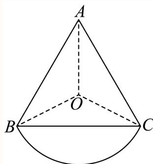
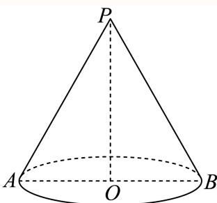
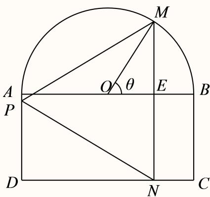
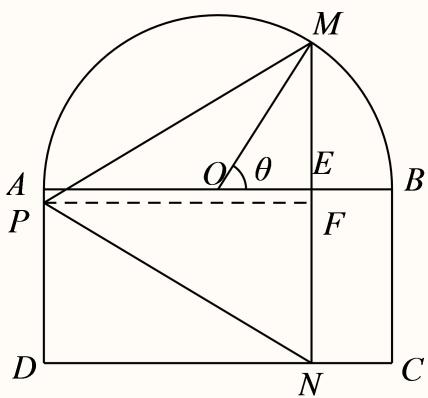
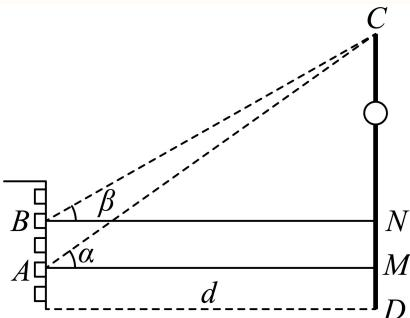

倾斜角、同角倍角与诱导求值 用斜率与反正切确定倾斜角；其余求值先明确象限和角范围，再用三角恒等式或反例判断。
嘉定 · 第2题 ★☆☆☆☆ · 教师预估 本题资料或解析有待核事项，预览不可作为已审定成品。
直线3x − y + 1 = 0的倾斜角为 .（用反三角函数表示）
考点： 一般式求斜率与倾斜角；反正切表示倾斜角。难度依据： 斜率为正时直接反正切求角
核查说明： 题干与解析已用于人工归类，尚未完成整题公式校净与独立数学终审。
展开答案与解析 【答案】arctan 3.
【解析】
由直线的一般式方程求得斜率，根据倾斜角与斜率的关系，建立方程，可得答案.
由直线 3 x − y + 1 = 0 3 x - y + 1 = 0 3 x − y + 1 = 0 tan θ = 3 \tan \theta = 3 tan θ = 3
解得 θ = arctan 3. \theta = \arctan 3 . θ = arctan 3.
故答案为：arctan 3.
奉贤 · 第13题 ★★☆☆☆ · 教师预估 本题资料或解析有待核事项，预览不可作为已审定成品。
在 △ A B C r \triangle A B C ^ { \ r } △ A B C r ∗ C = π 2 ; ^ { \ast } C = \frac { \pi } { 2 } ; ∗ C = 2 π ; ¨ sin 2 A + sin 2 B = 1 \ddot { } \sin ^ { 2 } A + \sin ^ { 2 } B = 1 ¨ sin 2 A + sin 2 B = 1
A. 充分不必要条件
B. 必要不充分条件
C. 充要条件
D. 既不充分也不必要条件
考点： 三角命题的充分必要性与反例；三角形内角关系及平方和恒等式。难度依据： 充分性用互余关系必要性需构造非直角反例
核查说明： 题干与解析已用于人工归类，尚未完成整题公式校净与独立数学终审。
展开答案与解析 【答案】A
【解析】
结合同角三角函数关系、诱导公式，分别从充分性、必要性两方面来说明即可
一方面：
C = π 2 ⇒ A + B = π 2 ⇒ sin A = sin ( π 2 − B ) = cos B ⇒ sin 2 A + sin 2 B = cos 2 B + sin 2 B =
C = \frac {\pi}{2} \Rightarrow A + B = \frac {\pi}{2} \Rightarrow \sin A = \sin \left(\frac {\pi}{2} - B\right) = \cos B \Rightarrow \sin^ {2} A + \sin^ {2} B = \cos^ {2} B + \sin^ {2} B =
C = 2 π ⇒ A + B = 2 π ⇒ sin A = sin ( 2 π − B ) = cos B ⇒ sin 2 A + sin 2 B = cos 2 B + sin 2 B =
另一方面： A = 2 π 3 , B = C = π 6 ⇒ sin 2 A + sin 2 B = ( 3 2 ) 2 + ( 1 2 ) 2 = 1 A = { \frac { 2 \pi } { 3 } } , B = C = { \frac { \pi } { 6 } } \Rightarrow \sin ^ { 2 } A + \sin ^ { 2 } B = \left( { \frac { \sqrt { 3 } } { 2 } } \right) ^ { 2 } + \left( { \frac { 1 } { 2 } } \right) ^ { 2 } = 1 A = 3 2 π , B = C = 6 π ⇒ sin 2 A + sin 2 B = ( 2 3 ) 2 + ( 2 1 ) 2 = 1 C ≠ π 2 C \neq { \frac { \pi } { 2 } } C = 2 π
" C = π 2 " 是 " sin 2 A + sin 2 B = 1
" C = \frac {\pi}{2}" \text {是}" \sin^ {2} A + \sin^ {2} B = 1
" C = 2 π " 是 " sin 2 A + sin 2 B = 1
故选：A.
普陀 · 第13题 ★★☆☆☆ · 教师预估 本题资料或解析有待核事项，预览不可作为已审定成品。
设 α ∈ R \alpha\in\mathbb{R} α ∈ R cos 2 α = 1 3 \cos 2\alpha=\frac{1}{3} cos 2 α = 3 1 sin α = 3 3 \sin\alpha=\frac{\sqrt{3}}{3} sin α = 3 3
A. 充分非必要条件
B. 必要非充分条件
C. 充要条件
D. 既非充分又非必要条件
考点： 二倍角命题的充分必要条件；二倍角公式与符号分支。难度依据： 平方关系不能确定正弦符号
核查说明： 题干与解析已用于人工归类，尚未完成整题公式校净与独立数学终审。；题干α范围大段乱码；同名PDF第9页文字层已确认“设α∈R”，本分类不改源稿。；题干与解析已用于人工归类，尚未完成整题公式校净与独立数学终审。；题干α范围大段乱码；同名PDF第9页文字层已确认“设α∈R”，本分类不改源稿。
展开答案与解析 【答案】B
【解析】
根据余弦二倍角公式由 I c o s 2 α = 1 3 \mathrm { I c o s 2 } \alpha = \frac { 1 } { 3 } Icos2 α = 3 1 cos 2 α = 1 3 \cos 2 \alpha = \frac { 1 } { 3 } cos 2 α = 3 1 cos 2 α = 1 − 2 sin 2 α = 1 3 \cos 2 \alpha = 1 - 2 \sin ^ { 2 } \alpha = { \frac { 1 } { 3 } } cos 2 α = 1 − 2 sin 2 α = 3 1 B / sin α = 3 3 B / \sin \alpha = { \frac { \sqrt { 3 } } { 3 } } B / sin α = 3 3 sin α = − 3 3 \sin \alpha = - { \frac { \sqrt { 3 } } { 3 } } sin α = − 3 3 ∣ ∘ cos 2 α = 1 3 , 3 ± ∘ sin α = 3 3 | { ^ { \circ } \cos 2 \alpha = \frac { 1 } { 3 } , \frac { \sqrt { 3 } } { \sqrt { \pm } } { ^ \circ \sin \alpha } = \frac { \sqrt { 3 } } { 3 } } ∣ ∘ cos 2 α = 3 1 , ± 3 ∘ sin α = 3 3
松江 · 第2题 ★☆☆☆☆ · 教师预估 本题资料或解析有待核事项，预览不可作为已审定成品。
若 s i n θ = 4 5 \mathrm { s i n } \theta = \frac { 4 } { 5 } sin θ = 5 4 l c o s 2 θ \mathrm { \ l c o s 2 \theta } lcos2 θ
考点： 二倍角公式。难度依据： 二倍角公式；按所需步骤与推理量估计
核查说明： 题干与解析已用于人工归类，尚未完成整题公式校净与独立数学终审。
展开答案与解析 【答案】− 7 25 - { \frac { 7 } { 2 5 } } − 25 7
【解析】
∵ sinθ = 4 ,
cos 2 θ = 1 − 2 sin 2 θ = 1 − 2 × ( 4 5 ) 2 = − 7 25 ,
\cos 2 \theta = 1 - 2 \sin^ {2} \theta = 1 - 2 \times \left(\frac {4}{5}\right) ^ {2} = - \frac {7}{2 5},
cos 2 θ = 1 − 2 sin 2 θ = 1 − 2 × ( 5 4 ) 2 = − 25 7 ,
故答案为 − 7 25 - { \frac { 7 } { 2 5 } } − 25 7
虹口 · 第3题 ★☆☆☆☆ · 教师预估 本题资料或解析有待核事项，预览不可作为已审定成品。
若tan α = 5，则tan 2α =
考点： 正切二倍角。难度依据： 涉及正切二倍角；难度为教师预估，需结合原题条件复核。
核查说明： 解析推导得负五分之十二，但末尾答案文字识别损坏为5和12，须回源。；依据现有底稿归类，尚未逐页校卷、公式校净或独立数学终审。
展开答案与解析 【解析】
直接利用二倍角公式计算可得.
因为 tan α = 5 \tan \alpha = 5 tan α = 5
所以 tan 2 α = 2 tan α 1 ‾ − tan 2 α = 2 × 5 1 − 5 2 = − 5 12 . \tan 2 \alpha = { \frac { 2 \tan \alpha } { \underline { { { 1 } } } - \tan ^ { 2 } \alpha } } = { \frac { 2 \times 5 } { 1 - 5 ^ { 2 } } } = - { \frac { 5 } { 1 2 } } . tan 2 α = 1 − t a n 2 α 2 t a n α = 1 − 5 2 2 × 5 = − 12 5 .
虹口 · 第13题 ★★☆☆☆ · 教师预估 本题资料或解析有待核事项，预览不可作为已审定成品。
已知 α ∈ ( 0 , π ) \alpha\in(0,\pi) α ∈ ( 0 , π ) sin ( π − α ) = 1 2 \sin(\pi-\alpha)=\frac12 sin ( π − α ) = 2 1 cos α = 3 2 \cos\alpha=\frac{\sqrt3}2 cos α = 2 3
A. 充要
B. 充分非必要
C. 必要非充分
D. 既非充分又非必要
考点： 三角诱导公式与充要条件。难度依据： 涉及三角诱导公式与充要条件；难度为教师预估，需结合原题条件复核。
核查说明： 题干及A选项可能在题图中，需核题图及原卷。；依据现有底稿归类，尚未逐页校卷、公式校净或独立数学终审。
展开答案与解析 【答案】C
【解析】
结合诱导公式及特殊角的三角函数值求出两个条件的α的值，进而结合充分、必要条件的定义判断即可.
由题意， α ∈ ( 0 , π ) \alpha \in ( 0 , \pi ) α ∈ ( 0 , π )
由 sin ( π − α ) = 1 2 \sin \left( \pi - \alpha \right) = \frac { 1 } { 2 } sin ( π − α ) = 2 1 sin α = 1 2 \sin \alpha = \frac { 1 } { 2 } sin α = 2 1 ∣ α = π 6 \lvert \alpha = \frac { \pi } { 6 } ∣ α = 6 π α = 5 π 6 \alpha = \frac { 5 \pi } { 6 } α = 6 5 π
由 cos α = 3 2 \cos \alpha = { \frac { \sqrt { 3 } } { 2 } } cos α = 2 3 α = π 6 \alpha = \frac { \pi } { 6 } α = 6 π
所以 sin ( π − α ) = 1 2 , \sin \left( \pi - \alpha \right) = \frac { 1 } { 2 } , sin ( π − α ) = 2 1 , c ¨ o s α = 3 2 ¨ { \mathrm { \ddot { c } o s } } \alpha = { \frac { \sqrt { 3 } } { 2 } } { \mathrm { \ddot { } } } c ¨ os α = 2 3 ¨
故选：C.
金山 · 第13题 ★☆☆☆☆ · 教师预估 函数 ⟨ y = 1 − 2 sin 2 \langle y = 1 - 2 \sin ^ { 2 } ⟨ y = 1 − 2 sin 2
A. 最小正周期为π的奇函数
B. 最小正周期为π的偶函数
C. 最小正周期为 π 2 \frac { \pi } { 2 } 2 π
D. 最小正周期为 π 2 \frac { \pi } { 2 } 2 π
考点： 二倍角化简、周期与奇偶。难度依据： 涉及二倍角化简、周期与奇偶；难度为教师预估，需结合原题条件复核。
核查说明： 依据现有底稿归类，尚未逐页校卷、公式校净或独立数学终审。
展开答案与解析 【答案】B
【解析】
由余弦二倍角公式化简即可求解.
y = 1 − 2 sin 2 x = cos 2 x
y = 1 - 2 \sin^ {2} x = \cos 2 x
y = 1 − 2 sin 2 x = cos 2 x
所以最小正周期为π，且为偶函数.
故选：B
闵行 · 第15题 ★★★★☆ · 教师预估 设f ( x ) = ( sin x − cos x ) ( cos x − tan x ) ( tan x − sin x ) ( x ) = ( \sin x - \cos x ) ( \cos x - \tan x ) ( \tan x - \sin x ) ( x ) = ( sin x − cos x ) ( cos x − tan x ) ( tan x − sin x ) f ( α ) f ( β ) < 0. f \left( \alpha \right) f \left( \beta \right) < 0 . f ( α ) f ( β ) < 0.
A. 第一象限
B. 第二象限
C. 第三象限
D. 第四象限
考点： 按象限分析三个因子的符号。难度依据： 三角函数乘积符号讨论；按象限分析三个因子的符号
展开答案与解析 【答案】D
【解析】
根据给定条件，结合同角公式，逐项分析确定sinx − cosx,cosx − tanx,tanx − sinx的取值的正负情况即可判断得解.
对于A，若 x ∈ ( 0 , π 4 ) x \in \left( 0 , { \frac { \pi } { 4 } } \right) x ∈ ( 0 , 4 π ) cos x − tan x = cos 2 x − sin x cos x = 1 − sin 2 x − sin x cos x \cos x - \tan x = { \frac { \cos ^ { 2 } x - \sin x } { \cos x } } = { \frac { 1 - \sin ^ { 2 } x - \sin x } { \cos x } } cos x − tan x = c o s x c o s 2 x − s i n x = c o s x 1 − s i n 2 x − s i n x
由 1 − sin 2 x − sin x = 0 , 1 - \sin ^ { 2 } x - \sin x = 0 , 1 − sin 2 x − sin x = 0 , sin x = 5 − 1 2 \sin x = { \frac { { \sqrt { 5 } } - 1 } { 2 } } sin x = 2 5 − 1 1 2 < 5 − 1 2 < 2 2 { \frac { 1 } { 2 } } < { \frac { { \sqrt { 5 } } - 1 } { 2 } } < { \frac { \sqrt { 2 } } { 2 } } 2 1 < 2 5 − 1 < 2 2
令方程 sin x = 5 − 1 2 \sin x = { \frac { { \sqrt { 5 } } - 1 } { 2 } } sin x = 2 5 − 1 x0 ， x 0 ∈ ( π 6 , π 4 ) x _ { 0 } \in \left( { \frac { \pi } { 6 } } , { \frac { \pi } { 4 } } \right) x 0 ∈ ( 6 π , 4 π ) 0 < x < x 0 H Σ , − sin 2 x − sin x + 1 > 0 0 < x < x _ { 0 } \mathbb { H } \Sigma , \ - \sin ^ { 2 } x - \sin x + 1 > 0 0 < x < x 0 H Σ , − sin 2 x − sin x + 1 > 0
当 x 0 < x < π 4 x _ { 0 } < x < { \frac { \pi } { 4 } } x 0 < x < 4 π − sin 2 x − sin x + 1 < 0 - \sin ^ { 2 } x - \sin x + 1 < 0 − sin 2 x − sin x + 1 < 0 x ∈ ( 0 , π 4 ) x \in \left( 0 , { \frac { \pi } { 4 } } \right) x ∈ ( 0 , 4 π ) x − cos x < 0. x - \cos x < 0 . x − cos x < 0.
当 x ∈ ( 0 , π 2 ) x \in \left( 0 , { \frac { \pi } { 2 } } \right) x ∈ ( 0 , 2 π ) tan x = sin x cos x > sin x \tan x = { \frac { \sin x } { \cos x } } > \sin x tan x = c o s x s i n x > sin x ♯ χ α ∝ ( 0 , x 0 ) , β ∈ ( x 0 , π 4 ) \sharp \chi _ { \alpha } \propto ( 0 , x _ { 0 } ) , \beta \in \left( x _ { 0 } , \frac { \pi } { 4 } \right) ♯ χ α ∝ ( 0 , x 0 ) , β ∈ ( x 0 , 4 π ) f ( α ) < 0 , f ( β ) > 0. f ( \alpha ) < 0 , f ( \beta ) > 0 . f ( α ) < 0 , f ( β ) > 0.
对于B，当x为第二象限时， sin x − cos x > 0 , tan x − sin x < 0 \sin x - \cos x > 0 , \ \tan x - \sin x < 0 sin x − cos x > 0 , tan x − sin x < 0
取 α = 2 π 3 , β = 5 π 6 \alpha = \frac { 2 \pi } { 3 } , \beta = \frac { 5 \pi } { 6 } α = 3 2 π , β = 6 5 π
则 f ( α ) < 0 , f ( β ) > 0 f ( \alpha ) < 0 , f ( \beta ) > 0 f ( α ) < 0 , f ( β ) > 0
对于C，当x为第三象限时， tan x − sin x > 0 , cos x − tan x < 0 \tan x - \sin x > 0 , \cos x - \tan x < 0 tan x − sin x > 0 , cos x − tan x < 0 α = 7 π 6 , β = 4 π 3 \alpha = \frac { 7 \pi } { 6 } , \beta = \frac { 4 \pi } { 3 } α = 6 7 π , β = 3 4 π
sin α − cos α = − 1 2 + 3 2 > 0 , sin β − cos β = − 3 2 + 1 2 < 0 , f ( α ) < 0 , f ( β ) > 0 \sin \alpha - \cos \alpha = - \frac { 1 } { 2 } + \frac { \sqrt { 3 } } { 2 } > 0 , \sin \beta - \cos \beta = - \frac { \sqrt { 3 } } { 2 } + \frac { 1 } { 2 } < 0 , f ( \alpha ) < 0 , f ( \beta ) > 0 sin α − cos α = − 2 1 + 2 3 > 0 , sin β − cos β = − 2 3 + 2 1 < 0 , f ( α ) < 0 , f ( β ) > 0
对于D，当x为第四象限时， sin x − cos x < 0 , cos x − tan x > 0 , \sin x - \cos x < 0 , \cos x - \tan x > 0 , sin x − cos x < 0 , cos x − tan x > 0 ,
tan x − sin x = sin x ( 1 cos x − 1 ) < 0 ,
\tan x - \sin x = \sin x \left(\frac {1}{\cos x} - 1\right) < 0,
tan x − sin x = sin x ( cos x 1 − 1 ) < 0 ,
则 f ( x ) > 0 f ( x ) > 0 f ( x ) > 0 f ( α ) f ( β ) > 0 f ( \alpha ) f ( \beta ) > 0 f ( α ) f ( β ) > 0
故选：D
静安 · 第6题 ★★☆☆☆ · 教师预估 在△ABC中，已知 B C = 5 , A C = 4 , A = 2 B B C = 5 , A C = 4 , A = 2 B BC = 5 , A C = 4 , A = 2 B
考点： 代入A=2B求余弦。难度依据： 正弦定理与倍角；代入A=2B求余弦
展开答案与解析 【解析】
根据给定条件，利用正弦定理及二倍角公式求解即得.
在 △ A B C ′ \triangle A B C ^ { \prime } △ A B C ′ B C sin A = A C sin B { \frac { B C } { \sin A } } = { \frac { A C } { \sin B } } s i n A BC = s i n B A C B C = 5 , A C = 4 , A = 2 B B C = 5 , A C = 4 , A = 2 B BC = 5 , A C = 4 , A = 2 B 5 sin 2 B = 4 sin B , { \frac { 5 } { \sin 2 B } } = { \frac { 4 } { \sin B } } , s i n 2 B 5 = s i n B 4 , 5 2 sin B cos B = 4 sin B { \frac { 5 } { 2 \sin B \cos B } } = { \frac { 4 } { \sin B } } 2 s i n B c o s B 5 = s i n B 4 cos B = 5 8 \cos B = { \frac { 5 } { 8 } } cos B = 8 5
周期、值域、零点与参数 把相位区间、极值点个数和平移条件转化为频率及角的约束。
嘉定 · 第18题 ★★★★☆ · 教师预估 本题资料或解析有待核事项，预览不可作为已审定成品。
已知 f ( x ) = 2 cos ( ω x + 3 π 4 ) f \left( x \right) = 2 \cos { \left( \omega x + \frac { 3 \pi } { 4 } \right) } f ( x ) = 2 cos ( ω x + 4 3 π ) ι ω > 0 \iota _ { \omega } > 0 ι ω > 0 ω = 2，求函数 ⟨ y = f ( x ) , x ∈ [ − π 4 , π 4 ] \langle y = f ( x ) , x \in \left[ - \frac { \pi } { 4 } , \frac { \pi } { 4 } \right] ⟨ y = f ( x ) , x ∈ [ − 4 π , 4 π ] f ( π 4 ) = 0 f \left( { \frac { \pi } { 4 } } \right) = 0 f ( 4 π ) = 0 { y = f ( x ) \{ y = f ( x ) { y = f ( x ) ( π 4 , π 3 ) \left( { \frac { \pi } { 4 } } , { \frac { \pi } { 3 } } \right) ( 4 π , 3 π )
考点： （1）相位区间求值域；（2）零点给出离散频率再以极值分布筛选。难度依据： （1）相位区间求值域；（2）零点给出离散频率再以极值分布筛选
核查说明： 题干与解析已用于人工归类，尚未完成整题公式校净与独立数学终审。；原解频率筛选步骤含错字和遗漏端点，须逐段检查整数参数。；题干与解析已用于人工归类，尚未完成整题公式校净与独立数学终审。；原解频率筛选步骤含错字和遗漏端点，须逐段检查整数参数。
展开答案与解析 【解析】
(1) 当ω = 2时， f ( x ) = 2 cos ( 2 x + 3 π 4 ) f \left( x \right) = 2 \cos { \left( 2 x + \frac { 3 \pi } { 4 } \right) } f ( x ) = 2 cos ( 2 x + 4 3 π ) x ∈ [ − π 4 , π 4 ] x \in \left[ - \frac { \pi } { 4 } , \frac { \pi } { 4 } \right] x ∈ [ − 4 π , 4 π ] 2 x + 3 π 4 ∈ ⌈ π 4 , 5 π 4 ⌉ 2 x + { \frac { 3 \pi } { 4 } } \in \left\lceil { \frac { \pi } { 4 } } , { \frac { 5 \pi } { 4 } } \right\rceil 2 x + 4 3 π ∈ ⌈ 4 π , 4 5 π ⌉
− 1 ≤ cos ( 2 x + 3 π 4 ) ≤ 2 2 , − 2 ≤ f ( x ) ≤ 2 ,
- 1 \leq \cos \left(2 x + \frac {3 \pi}{4}\right) \leq \frac {\sqrt {2}}{2}, - 2 \leq f (x) \leq \sqrt {2},
− 1 ≤ cos ( 2 x + 4 3 π ) ≤ 2 2 , − 2 ≤ f ( x ) ≤ 2 ,
所以函数 [ y = f ( x ) , x ∈ [ − π 4 , π 4 ] \left[ { \mathfrak { y } } = { \mathfrak { f } } \left( x \right) , x \in \left[ - { \frac { \pi } { 4 } } , { \frac { \pi } { 4 } } \right] \right. [ y = f ( x ) , x ∈ [ − 4 π , 4 π ] ⌈ − 2 , 2 ⌉ \left\lceil - 2 , { \sqrt { 2 } } \right\rceil ⌈ − 2 , 2 ⌉
(2) 由 f ( π 4 ) = 0. f \left( { \frac { \pi } { 4 } } \right) = 0 . f ( 4 π ) = 0. π 4 ω + 3 π 4 = π 2 + k π , k ∈ N ∗ \frac { \pi } { 4 } \omega + \frac { 3 \pi } { 4 } = \frac { \pi } { 2 } + k \pi , k \in \mathrm { N } ^ { * } 4 π ω + 4 3 π = 2 π + kπ , k ∈ N ∗ ω = − 1 + 4 k , k ∈ N ∗ \omega = - 1 + 4 k , k \in \mathrm { N } ^ { \ast } ω = − 1 + 4 k , k ∈ N ∗
当 π 4 < x < π 3 \frac { \pi } { 4 } < x < \frac { \pi } { 3 } 4 π < x < 3 π ∣ ∣ ∣ → ω > 0 \overrightarrow { \vert \vert \vert } \omega > 0 ∣∣∣ ω > 0 ( ω + 3 ) π ‾ 4 < ω x + 3 π 4 < ( 4 ω + 9 ) π 12 \frac { \overline { { ( \omega + 3 ) \pi } } } { 4 } < \omega x + \frac { 3 \pi } { 4 } < \frac { ( 4 \omega + 9 ) \pi } { 1 2 } 4 ( ω + 3 ) π < ω x + 4 3 π < 12 ( 4 ω + 9 ) π
又函数f(x)在 ( π 4 , π 3 ) \left( { \frac { \pi } { 4 } } , { \frac { \pi } { 3 } } \right) ( 4 π , 3 π )
{ 2 n π ≤ ( ω + 3 ) π 4 < ( 2 n + 1 ) π ( 2 n + 1 ) π < ( 4 ω + 9 ) π 12 ≤ ( 2 n + 2 ) π , n ∈ Z ,
\left\{ \begin{array}{l} 2 n \pi \leq \frac {(\omega + 3) \pi}{4} < (2 n + 1) \pi \\ (2 n + 1) \pi < \frac {(4 \omega + 9) \pi}{1 2} \leq (2 n + 2) \pi \end{array} , n \in \mathbf {Z}, \right.
{ 2 nπ ≤ 4 ( ω + 3 ) π < ( 2 n + 1 ) π ( 2 n + 1 ) π < 12 ( 4 ω + 9 ) π ≤ ( 2 n + 2 ) π , n ∈ Z ,
解得 { 8 n − 3 ≤ ω < 8 n + 1 6 n + 3 4 < ω ≤ 6 n + 15 4 , n ∈ Z , \left\{ \begin{array} { l l } { { 8 n - 3 \leq \omega < 8 n + 1 } } \\ { { 6 n + { \frac { 3 } { 4 } } < \omega \leq 6 n + { \frac { 1 5 } { 4 } } , n \in \mathrm { Z } , } } \end{array} \right. { 8 n − 3 ≤ ω < 8 n + 1 6 n + 4 3 < ω ≤ 6 n + 4 15 , n ∈ Z , 8 n − 3 < 6 n + 3 4 < 8 n + 1 < 6 n + 15 4 d H d t 8 n - 3 < 6 n + \frac { 3 } { 4 } < 8 n + 1 < 6 n + \frac { 1 5 } { 4 } \frac { \ d H } { \ d t } 8 n − 3 < 6 n + 4 3 < 8 n + 1 < 6 n + 4 15 d t d H
6 n + 3 4 < 8 n − 3 < 6 n + 15 4 < 8 n + 1 , n ∈ Z 6 n + \frac { 3 } { 4 } < 8 n - 3 < 6 n + \frac { 1 5 } { 4 } < 8 n + 1 , n \in \mathrm { Z } 6 n + 4 3 < 8 n − 3 < 6 n + 4 15 < 8 n + 1 , n ∈ Z − 1 8 < n < 11 8 - \frac { 1 } { 8 } < n < \frac { 1 1 } { 8 } − 8 1 < n < 8 11 15 8 < n < 27 8 , n ∈ Z \frac { 1 5 } { 8 } < n < \frac { 2 7 } { 8 } , n \in \mathrm { Z } 8 15 < n < 8 27 , n ∈ Z
当n = 0时， 3 4 < ω < 1 \frac { 3 } { 4 } < \omega < 1 4 3 < ω < 1 ∠ ω = − 1 + 4 k , k ∈ N ∗ \angle \omega = - 1 + 4 k , k \in \mathrm { N } ^ { \ast } ∠ ω = − 1 + 4 k , k ∈ N ∗
当 ∣ n = 1 \lvert n = 1 ∣ n = 1 2 ^ 7 4 < ω < 9 \frac { \hat { 2 } 7 } { 4 } < \omega < 9 4 2 ^ 7 < ω < 9 ω = − 1 + 4 k , k ∈ N ∗ \omega = - 1 + 4 k , k \in \mathrm { N } ^ { \ast } ω = − 1 + 4 k , k ∈ N ∗ k = 2 , ω = 7 k = 2 , \omega = 7 k = 2 , ω = 7
当n = 2时， 13 ≤ ω ≤ 63 4 1 3 \leq \omega \leq \frac { 6 3 } { 4 } 13 ≤ ω ≤ 4 63 ω = − 1 + 4 k , k ∈ N ∗ \omega = - 1 + 4 k , k \in \mathbb { N } ^ { * } ω = − 1 + 4 k , k ∈ N ∗ k = 4 , ω = 15 k = 4 , \omega = 1 5 k = 4 , ω = 15
当 n = 3 H ] n = 3 \mathbb { H } ] n = 3 H ] 21 ≤ ω ≤ 8 7 ˙ 4 2 1 \leq \omega \leq \frac { 8 \dot { 7 } } { 4 } 21 ≤ ω ≤ 4 8 7 ˙ ω = − 1 + 4 k , k ∈ N ∗ \omega = - 1 + 4 k , k \in \mathrm { N } ^ { \ast } ω = − 1 + 4 k , k ∈ N ∗
所以ω的值是7或15.
嘉定 · 第21题 ★★★★☆ · 教师预估 本题资料或解析有待核事项，预览不可作为已审定成品。
设A为非空集合，函数f (x)的定义域为D.若存在 Φ x 0 ∈ D \mathbf { \Phi } _ { \boldsymbol { x } _ { 0 } } \in \mathbf { D } Φ x 0 ∈ D f ( x ) − f ( x 0 ) ∈ A f \left( x \right) - f \left( x _ { 0 } \right) \in \mathrm { A } f ( x ) − f ( x 0 ) ∈ A 0 )为函数f(x)的一个A值，x0 为相应的A值点.A = [ − 2 , 0 ] , f ( x ) = sin x A = [ - 2 , 0 ] , f ( x ) = \sin x A = [ − 2 , 0 ] , f ( x ) = sin x x 0 = 2 k π + 1 2 π , k ∈ Z x _ { 0 } = 2 k \pi + \frac { 1 } { 2 } \pi , k \in { \bf Z } x 0 = 2 kπ + 2 1 π , k ∈ Z A = [ 0 , + ∞ ) , f ( x ) = − x , g ( x ) = x 2 + x + 1 A = [ 0 , + \infty ) , f ( x ) = - x , g ( x ) = x ^ { 2 } + x + 1 A = [ 0 , + ∞ ) , f ( x ) = − x , g ( x ) = x 2 + x + 1 ∇ f ( x ) , g ( x ) { \bf \nabla } f \left( x \right) , g \left( x \right) ∇ f ( x ) , g ( x ) A = ( − ∞ , 0 ] A = ( - \infty , 0 ] A = ( − ∞ , 0 ] f ( x ) = ln x + a x 2 ( a ∈ R ) f \left( x \right) = \ln x + a x ^ { 2 } \left( a \in \mathbf { R } \right) f ( x ) = ln x + a x 2 ( a ∈ R )
考点： （1）正弦值域验证A值；（2）线性与二次函数最小值辨析；（3）导数判定对数二次复合函数的最大值及取值点。难度依据： （1）正弦值域验证A值；（2）线性与二次函数最小值辨析；（3）导数判定对数二次复合函数的最大值及取值点
核查说明： 题干与解析已用于人工归类，尚未完成整题公式校净与独立数学终审。；原解声称列表但表格在MD缺失，需补单调性表或改为文字证明。；题干与解析已用于人工归类，尚未完成整题公式校净与独立数学终审。；原解声称列表但表格在MD缺失，需补单调性表或改为文字证明。
展开答案与解析 【解析】
(1) 函数f(x) = sin x的定义域为R.对 x 0 = 2 k π + 1 2 π , k ∈ Z x _ { 0 } = 2 k \pi + \frac { 1 } { 2 } \pi , k \in { \bf Z } x 0 = 2 kπ + 2 1 π , k ∈ Z x ∈ R . \boldsymbol { x } \in \mathbf { R } . x ∈ R .
即 f ( x ) − f ( x 0 ) ∈ A f ( x ) - f \left( x _ { 0 } \right) \in A f ( x ) − f ( x 0 ) ∈ A x 0 = 2 k π + 1 2 π x _ { 0 } = 2 k \pi + \frac { 1 } { 2 } \pi x 0 = 2 kπ + 2 1 π f ( x 0 ) = 1 f \left( x _ { 0 } \right) = 1 f ( x 0 ) = 1
(2) 函数f(x) = −x的定义域为R.
对任意x0 ∈ R，取 x = x 0 + 2 \scriptstyle { \mathscr { x } = { x _ { 0 } } + 2 } x = x 0 + 2 x = x 0 + 2 ∈ R x = x _ { 0 } + 2 \in \mathbf { R } x = x 0 + 2 ∈ R
f(x) − f (x0 ) = − (x0 + 2) − (−x0 ) = −2 ∉ A，
所以函数f(x)不存在A值.
函数 g ˙ ( x ) = x 2 + x + O \dot { \boldsymbol g } ( \boldsymbol x ) = \boldsymbol x ^ { 2 } + \boldsymbol x + \boldsymbol { \ O } g ˙ ( x ) = x 2 + x + O
∀ g ( x ) = x 2 + x + 1 = ( x + 1 2 ) 2 + 3 4 \forall g \left( x \right) = x ^ { 2 } + x + 1 = \left( x + { \frac { 1 } { 2 } } \right) ^ { 2 } + { \frac { 3 } { 4 } } ∀ g ( x ) = x 2 + x + 1 = ( x + 2 1 ) 2 + 4 3
当 x 0 = − 1 2 x _ { 0 } = - \frac { 1 } { 2 } x 0 = − 2 1 x ∈ R \mathbf { \boldsymbol { x } } \in \mathbf { \boldsymbol { R } } x ∈ R g ( x ) − g ( x 0 ) = ( x + 1 2 ) 2 ≥ 0 g \left( x \right) - g \left( x _ { 0 } \right) = \left( x + \frac { 1 } { 2 } \right) ^ { 2 } \geq 0 g ( x ) − g ( x 0 ) = ( x + 2 1 ) 2 ≥ 0 l g ( x ) − g ( x 0 ) ∈ A ; \begin{array} { r } { { { \mathfrak { l } } _ { g } } ( { x } ) - g \left( { { x } _ { 0 } } \right) \in A ; } \end{array} l g ( x ) − g ( x 0 ) ∈ A ;
又对任意 x 0 ≠ − 1 2 x _ { 0 } \neq - \frac { 1 } { 2 } x 0 = − 2 1 H x = − 1 2 \mathbb { H } x = - \frac { 1 } { 2 } H x = − 2 1
∣ g ( x ) − g ( x 0 ) = 0 − ( x 0 + 1 2 ) 2 < 0 ,
\left. \right| g (x) - g \left(x _ {0}\right) = 0 - \left(x _ {0} + \frac {1}{2}\right) ^ {2} < 0,
∣ g ( x ) − g ( x 0 ) = 0 − ( x 0 + 2 1 ) 2 < 0 ,
即 J g ( x ) − g ( x 0 ) ∉ A \mathbb { J } _ { g ( x ) } - g \left( x _ { 0 } \right) \not \in A J g ( x ) − g ( x 0 ) ∈ A g ( x 0 ) = 3 4 g \left( x _ { 0 } \right) = \frac { 3 } { 4 } g ( x 0 ) = 4 3
x 0 = − 1 2 x _ { 0 } = - \frac { 1 } { 2 } x 0 = − 2 1
(3) 函数 f ( x ) = ln x + a x 2 ( a ∈ R ) f ( x ) = \ln x + a x ^ { 2 } ( a \in \mathbf { R } ) f ( x ) = ln x + a x 2 ( a ∈ R ) ( 0 , + ∞ ) ( 0 , + \infty ) ( 0 , + ∞ )
由题设，该函数存在A值，设相应A值点为 x 0 ∈ ( 0 , + ∞ ) x _ { 0 } \in ( 0 , + \infty ) x 0 ∈ ( 0 , + ∞ )
则f(x) − f (x0 ) ∈ A即 f ( x ) ≤ f ( x 0 ) f ( x ) \leq f \left( x _ { 0 } \right) f ( x ) ≤ f ( x 0 ) x ∈ ( 0 , + ∞ ) x \in ( 0 , + \infty ) x ∈ ( 0 , + ∞ )
故函数f(x)的A值即为最大值，A值点即最大值点.
f ′ ( x ) = 1 x + 2 a x f ^ { \prime } \left( x \right) = \frac { 1 } { x } + 2 a x f ′ ( x ) = x 1 + 2 a x ⋅ f ′ ( x ) = 0 / ∓ ⊞ 2 a x 2 + 1 = 0 , { } ^ { \cdot } f ^ { \prime } ( x ) = 0 / { } _ { \mp } ^ { \boxplus } 2 a x ^ { 2 } + 1 = 0 , ⋅ f ′ ( x ) = 0/ ∓ ⊞ 2 a x 2 + 1 = 0 ,
显然当a ≥ 0时， f ′ ( x ) > f ^ { \prime } ( x ) > f ′ ( x ) >
所以 a < 0 { a < 0 } a < 0 x = − 1 2 a x = { \sqrt { - { \frac { 1 } { 2 a } } } } x = − 2 a 1
所以若函数 f ( x ) = ln x + a x 2 f ( x ) = \ln x + a x ^ { 2 } f ( x ) = ln x + a x 2
则 ∣ a < 0 , \begin{array} { r } { | a < 0 , } \end{array} ∣ a < 0 , − 1 2 a − 1 2 { \sqrt { - { \frac { 1 } { 2 a } } } } - { \frac { 1 } { 2 } } − 2 a 1 − 2 1 − 1 2 a \sqrt { - \frac { 1 } { 2 a } } − 2 a 1
奉贤 · 第12题 ★★★★☆ · 教师预估 本题资料或解析有待核事项，预览不可作为已审定成品。
已知集合 ∂ M = { P 0 , P 1 , P 2 , ⋯ , P n } , n ≥ 2 , n ∈ N \mathbf { \partial } M = \{ P _ { 0 } , P _ { 1 } , P _ { 2 } , \cdots , P _ { n } \} , n \geq 2 , n \in \mathbf { N } ∂ M = { P 0 , P 1 , P 2 , ⋯ , P n } , n ≥ 2 , n ∈ N y = cos x , x ∈ [ 0 , 2 π ] y = \cos x , x \in [ 0 , 2 \pi ] y = cos x , x ∈ [ 0 , 2 π ] S = { a ∣ a = O P 0 → ⋅ O P i → , i = 0 , 1 , 2 , ⋯ , n , n ≥ 2 , n ∈ N } S = \left\{ a | a = { \overrightarrow { O P _ { 0 } } } \cdot { \overrightarrow { O P _ { i } } } , i = 0 , 1 , 2 , \cdots , n , n \geq 2 , n \in \mathbf { N } \right\} S = { a ∣ a = O P 0 ⋅ O P i , i = 0 , 1 , 2 , ⋯ , n , n ≥ 2 , n ∈ N } P 0 ( 0 , 1 ) P _ { 0 } \left( 0 , 1 \right) P 0 ( 0 , 1 ) P 1 ( π , − 1 ) P _ { 1 } \left( \pi , - 1 \right) P 1 ( π , − 1 ) d ∈ { 1 2 , 1 } d \in \left\{ { \frac { 1 } { 2 } } , 1 \right\} d ∈ { 2 1 , 1 }
考点： 坐标数量积提取纵坐标；有限等差数列公差分类；余弦函数定值点枚举；有必选点约束的集合计数；点集到数集映射的重合与去重。难度依据： 公差两种情形下按同纵坐标点的非空选择计数
核查说明： 题干与解析已用于人工归类，尚未完成整题公式校净与独立数学终审。；原解多个余弦值与横坐标被错排，计数思路可辨但公式未校净。；题干与解析已用于人工归类，尚未完成整题公式校净与独立数学终审。；原解多个余弦值与横坐标被错排，计数思路可辨但公式未校净。
展开答案与解析 【答案】60.
【解析】
确定数列中最大值为1，最小值为−1，然后根据d分类得出等差数列，再由等差数列的项确定点 P i P _ { i } P i
由已知 ∣ a 0 = O P 0 → ⋅ O P 0 → = 1 , a 1 = O P 0 → ⋅ O P 1 → = − 1 \vert a _ { 0 } = \overrightarrow { O P _ { 0 } } \cdot \overrightarrow { O P _ { 0 } } = 1 , a _ { 1 } = \overrightarrow { O P _ { 0 } } \cdot \overrightarrow { O P _ { 1 } } = - 1 ∣ a 0 = O P 0 ⋅ O P 0 = 1 , a 1 = O P 0 ⋅ O P 1 = − 1
设 P i ( x i , y i ) P _ { i } ( x _ { i } , y _ { i } ) P i ( x i , y i ) a i = O P 0 → ⋅ O P i → = y i a _ { i } = \overrightarrow { O P _ { 0 } } \cdot \overrightarrow { O P _ { i } } = y _ { i } a i = O P 0 ⋅ O P i = y i − 1 ≤ y i ≤ 1 - 1 \leq y _ { i } \leq 1 − 1 ≤ y i ≤ 1
若 d ˙ = 1 \dot { \boldsymbol { d } } = 1 d ˙ = 1 S = { − 1 , 0 , 1 } S = \{ - 1 , 0 , 1 \} S = { − 1 , 0 , 1 } y ˙ i = 0 \dot { y } _ { i } = 0 y ˙ i = 0
由 cos x i = 0 , x i ∈ [ 0 , 2 π ] \cos x _ { i } = 0 , x _ { i } \in [ 0 , 2 \pi ] cos x i = 0 , x i ∈ [ 0 , 2 π ] x i = π 2 x _ { i } = { \frac { \pi } { 2 } } x i = 2 π 3 π 2 \frac { 3 \pi } { 2 } 2 3 π Q 1 ( π 2 , 0 ) , Q 2 ( 3 π 2 , 0 ) Q _ { 1 } \left( \frac { \pi } { 2 } , 0 \right) , Q _ { 2 } \left( \frac { 3 \pi } { 2 } , 0 \right) Q 1 ( 2 π , 0 ) , Q 2 ( 2 3 π , 0 )
同理 Q 3 ( 2 π , 1 ) Q _ { 3 } ( 2 \pi , 1 ) Q 3 ( 2 π , 1 ) P 0 P _ { 0 } P 0
集合M中已经含有点 P 0 , P 1 P _ { 0 } , P _ { 1 } P 0 , P 1
因此产生 S = { − 1 , 0 , 1 } S = \{ - 1 , 0 , 1 \} S = { − 1 , 0 , 1 } Q 3 Q _ { 3 } Q 3 Q 1 , Q 2 Q _ { 1 } , Q _ { 2 } Q 1 , Q 2
所以M的个数为 2 × 3 = 6 2 \times 3 = 6 2 × 3 = 6
若 d ˙ = 1 2 \dot { \boldsymbol { d } } = \frac { 1 } { 2 } d ˙ = 2 1 S = { − 1 , − 1 2 , 0 , 1 2 , 1 } S = \left\{ - 1 , - \frac { 1 } { 2 } , 0 , \frac { 1 } { 2 } , 1 \right\} S = { − 1 , − 2 1 , 0 , 2 1 , 1 }
cos xi = 1 xi 2π 或 4π cos xi = 1 xi π 或 5π
对应点Q i ( π 3 , 1 2 ) , Q 5 ( 5 π 3 , 1 2 ) , Q 6 ( 2 π 3 , − 1 2 ) , Q 7 ( 4 π 3 , − 1 2 ) \mathrm { ~ \ i ~ } \left( \frac { \pi } { 3 } , \frac { 1 } { 2 } \right) , Q _ { 5 } \left( \frac { 5 \pi } { 3 } , \frac { 1 } { 2 } \right) , Q _ { 6 } \left( \frac { 2 \pi } { 3 } , - \frac { 1 } { 2 } \right) , Q _ { 7 } \left( \frac { 4 \pi } { 3 } , - \frac { 1 } { 2 } \right) i ( 3 π , 2 1 ) , Q 5 ( 3 5 π , 2 1 ) , Q 6 ( 3 2 π , − 2 1 ) , Q 7 ( 3 4 π , − 2 1 )
产生 { − 1 , − 1 2 , 0 , 1 2 , 1 } \left\{ - 1 , - \frac { 1 } { 2 } , 0 , \frac { 1 } { 2 } , 1 \right\} { − 1 , − 2 1 , 0 , 2 1 , 1 } ∇ ⋅ Q 3 { \bf \nabla } \cdot { \bf Q _ { 3 } } ∇ ⋅ Q 3 Q 1 , Q 2 Q _ { 1 } , Q _ { 2 } Q 1 , Q 2
Q 4 , Q 5 Q _ { 4 } , Q _ { 5 } Q 4 , Q 5 Q 6 , Q 7 Q _ { 6 } , Q _ { 7 } Q 6 , Q 7 2 × 3 × 3 × 3 = 54 2 \times 3 \times 3 \times 3 = 5 4 2 × 3 × 3 × 3 = 54
综上，集合M的个数为 6 + 54 = 60 6 + 5 4 = 6 0 6 + 54 = 60
故答案为：60.
方法点睛：确定集合的个数即为确定集合中元素的可能性，本题中首先确定出最终等差数列的最大值和最小值，从而根据公差得出等差数列，由等差数列确定可能含有的点，从而得出集合个数
二、选择题
奉贤 · 第14题 ★★★☆☆ · 教师预估 本题资料或解析有待核事项，预览不可作为已审定成品。
函数 y = log 2 sin x + log 2 cos x y = \log _ { 2 } \sin x + \log _ { 2 } \cos x y = log 2 sin x + log 2 cos x
A. 函数是偶函数
B. 函数定义域是 ( 0 , π 2 ) \left( 0 , { \frac { \pi } { 2 } } \right) ( 0 , 2 π )
C. 函数最大值−1
D. 函数的最小正周期为π
考点： 复合对数函数定义域与周期；正弦余弦同正区域及二倍角最值。难度依据： 周期不能只看化简式还需保留原定义域
核查说明： 题干与解析已用于人工归类，尚未完成整题公式校净与独立数学终审。
展开答案与解析 【答案】C
【解析】
求出函数f(x)的定义域，可判断AB选项；利用二倍角的正弦公式以及正弦函数的有界性可判断C选项；利用正弦型函数的周期性可判断D选项.
设 f ( x ) = log 2 sin x + log 2 cos x f \left( x \right) = \log _ { 2 } \sin x + \log _ { 2 } \cos x f ( x ) = log 2 sin x + log 2 cos x { sin x > 0 cos x > 0 \left\{ { \begin{array} { l } { \sin x > 0 } \\ { \cos x > 0 } \end{array} } \right. { sin x > 0 cos x > 0 2 k π < x < 2 k π + π 2 ( k ∈ Z ) 2 k \pi < x < 2 k \pi + { \frac { \pi } { 2 } } ( k \in { \bf Z } ) 2 kπ < x < 2 kπ + 2 π ( k ∈ Z )
所以，函数f(x)的定义域为 { x ∣ 2 k π < x < 2 k π + π 2 , k ∈ Z } \left\{ x \Big \vert 2 k \pi < x < 2 k \pi + \frac { \pi } { 2 } , k \in \mathbf { Z } \right\} { x 2 kπ < x < 2 kπ + 2 π , k ∈ Z }
所以，函数f(x)不是偶函数，A错B错；
当 2 k π < x < 2 k π + π 2 ( k ∈ Z ) 2 k \pi < x < 2 k \pi + \frac { \pi } { 2 } ( k \in { \bf Z } ) 2 kπ < x < 2 kπ + 2 π ( k ∈ Z ) k π < 2 x < 4 k π + π ( k ∈ Z ) \displaystyle { \mathfrak { k } } \pi < 2 x < 4 k \pi + \pi \left( k \in \mathbf { Z } \right) k π < 2 x < 4 kπ + π ( k ∈ Z )
f ( x ) = log 2 ( sin x cos x ) = log 2 ( 1 2 sin 2 x ) ≤ log 2 1 2 = − 1 ,
f (x) = \log_ {2} (\sin x \cos x) = \log_ {2} \left(\frac {1}{2} \sin 2 x\right) \leq \log_ {2} \frac {1}{2} = - 1,
f ( x ) = log 2 ( sin x cos x ) = log 2 ( 2 1 sin 2 x ) ≤ log 2 2 1 = − 1 ,
当且仅当 2 x = π 2 + 4 k π ( k ∈ Z ) 2 x = \frac { \pi } { 2 } + 4 k \pi \left( k \in \mathbf { Z } \right) 2 x = 2 π + 4 kπ ( k ∈ Z ) x = π 4 + 2 k π ( k ∈ Z ) x = { \frac { \pi } { 4 } } + 2 k \pi \left( k \in { \mathbf { Z } } \right) x = 4 π + 2 kπ ( k ∈ Z )
因为 f ( 2 π + x ) = log 2 sin ( 2 π + x ) + log 2 cos ( 2 π + x ) = log 2 sin x + log 2 cos x = f ( x ) f \left( 2 \pi + x \right) = \log _ { 2 } \sin \left( 2 \pi + x \right) + \log _ { 2 } \cos \left( 2 \pi + x \right) = \log _ { 2 } \sin x + \log _ { 2 } \cos x = f \left( x \right) f ( 2 π + x ) = log 2 sin ( 2 π + x ) + log 2 cos ( 2 π + x ) = log 2 sin x + log 2 cos x = f ( x )
结合函数f(x)的定义域可知，函数f(x)的最小正周期为2π，D错.故选：C.
奉贤 · 第21题 ★★★★★ · 教师预估 本题资料或解析有待核事项，预览不可作为已审定成品。
若函数 ⋅ y = f ( x ) \boldsymbol { \cdot } \boldsymbol { y } = \boldsymbol { f } \left( \boldsymbol { x } \right) ⋅ y = f ( x ) P 1 ∖ P 2 ∖ ⋯ P k ( k ≥ 2 , k ∈ N ) P _ { 1 \setminus } \ P _ { 2 \setminus } \ \cdots \ P _ { k } \left( k \geq 2 , k \in \mathbf { N } \right) P 1 ∖ P 2 ∖ ⋯ P k ( k ≥ 2 , k ∈ N ) y = f ( x ) y = f \left( x \right) y = f ( x ) y = x 2 − 2 ∣ x ∣ , x ∈ R y = x ^ { 2 } - 2 | x | , x \in \mathbf { R } y = x 2 − 2∣ x ∣ , x ∈ R f ( x ) = e x − ln x f \left( x \right) = \mathrm { e } ^ { x } - \ln x f ( x ) = e x − ln x y = f ( x ) y = f \left( x \right) y = f ( x ) y ( x ) = cos x + 2 x y \left( x \right) = \cos x + 2 x y ( x ) = cos x + 2 x m ≥ 3 , m ∈ N m \ge 3 , m \in \mathbf { N } m ≥ 3 , m ∈ N y = g ( x ) y = g \left( x \right) y = g ( x )
考点： （1）偶性和双切线；（2）导数严格单调排除公切线；（3）比较斜率截距并用三角周期构造任意多个切点。难度依据： （1）偶性和双切线；（2）导数严格单调排除公切线；（3）比较斜率截距并用三角周期构造任意多个切点
核查说明： 题干与解析已用于人工归类，尚未完成整题公式校净与独立数学终审。；第3问题干g误写y，原解多处三角符号乱码，公切线论证待终审。；题干与解析已用于人工归类，尚未完成整题公式校净与独立数学终审。；第3问题干g误写y，原解多处三角符号乱码，公切线论证待终审。
展开答案与解析 【解析】
(1) 令h ( x ) = x 2 − 2 ∣ x ∣ ( x ) = x ^ { 2 } - 2 \left| x \right| ( x ) = x 2 − 2 ∣ x ∣ x ∈ R \mathbf { { \boldsymbol { x } } } \in \mathbf { { \boldsymbol { R } } } x ∈ R ( − x ) = ( − x ) 2 − 2 ∣ − x ∣ = x 2 − 2 ∣ x ∣ = h ( x ) ( - x ) = ( - x ) ^ { 2 } - 2 \left| - x \right| = x ^ { 2 } - 2 \left| x \right| = h \left( x \right) ( − x ) = ( − x ) 2 − 2 ∣ − x ∣ = x 2 − 2 ∣ x ∣ = h ( x )
h ( x ) = x 2 − 2 ∣ x ∣
h (x) = x ^ {2} - 2 | x |
h ( x ) = x 2 − 2∣ x ∣
h ( x ) = { x 2 + 2 x , x ≤ 0 x 2 − 2 x , x > 0 ,
h \left(x\right) = \left\{ \begin{array}{l} x ^ {2} + 2 x, x \leq 0 \\ x ^ {2} - 2 x, x > 0 \end{array} \right.,
h ( x ) = { x 2 + 2 x , x ≤ 0 x 2 − 2 x , x > 0 ,
由图可知，函数 y = x 2 − 2 ∣ x ∣ y = x ^ { 2 } - 2 \left| x \right| y = x 2 − 2 ∣ x ∣ y = − 1 y = - 1 y = − 1
(2) 因为 f ( x ) = e x − ln x f \left( x \right) = \mathrm { e } ^ { x } - \ln x f ( x ) = e x − ln x ( 0 , + ∞ ) ( 0 , + \infty ) ( 0 , + ∞ ) f ′ ( x ) = e x − 1 x f ^ { \prime } \left( x \right) = \mathrm { e } ^ { x } - \frac { 1 } { x } f ′ ( x ) = e x − x 1
令 ∇ Δ ~ p ( x ) = e x − 1 x { \bf \nabla } \tilde { \bf \Delta } p \left( x \right) = { \bf e } ^ { x } - \frac { 1 } { x } ∇ Δ ~ p ( x ) = e x − x 1 x > 0 \boldsymbol { \mathscr { x } } > 0 x > 0 ∣ p ′ ( x ) = e x + 1 x 2 > 0 \left| p ^ { \prime } \left( x \right) \right. = \mathbf { e } ^ { x } + \frac { 1 } { x ^ { 2 } } > 0 ∣ p ′ ( x ) = e x + x 2 1 > 0
所以，函数 f ′ ( x ) f ^ { \prime } \left( x \right) f ′ ( x ) ( 0 , + ∞ ) ( 0 , + \infty ) ( 0 , + ∞ )
因此，不可能存在a、 b ∈ ( 0 , + ∞ ) E a ≠ b , b \in ( 0 , + \infty ) \operatorname { E } a \neq b , b ∈ ( 0 , + ∞ ) E a = b , f ′ ( a ) = f ′ ( b ) f ^ { \prime } \left( a \right) = f ^ { \prime } \left( b \right) f ′ ( a ) = f ′ ( b )
因此，函数 f ( x ) = e x − ln x . f \left( x \right) = \mathrm { e } ^ { x } - \ln x . f ( x ) = e x − ln x .
(3) 取点 P 1 ( x 1 , cos x 1 + 2 x 1 ) , P 2 ( x 2 , cos x 2 + 2 x 2 ) , P 3 ( x 3 , cos x 3 + 2 x 3 ) P _ { 1 } ( x _ { 1 } , \cos x _ { 1 } + 2 x _ { 1 } ) , P _ { 2 } ( x _ { 2 } , \cos x _ { 2 } + 2 x _ { 2 } ) , P _ { 3 } ( x _ { 3 } , \cos x _ { 3 } + 2 x _ { 3 } ) P 1 ( x 1 , cos x 1 + 2 x 1 ) , P 2 ( x 2 , cos x 2 + 2 x 2 ) , P 3 ( x 3 , cos x 3 + 2 x 3 )
因为 g ( x ) = cos x + 2 x g \left( x \right) = \cos x + 2 x g ( x ) = cos x + 2 x g ′ ( x ) = 2 − sin x . g ^ { \prime } \left( x \right) = 2 - \sin x . g ′ ( x ) = 2 − sin x .
所以，曲线 y = g ( x ) y = g \left( x \right) y = g ( x ) P 1 P _ { 1 } P 1 y − cos x 1 − 2 x 1 = ( 2 − sin x 1 ) ( x − x 1 ) y - \cos x _ { 1 } - 2 x _ { 1 } = \left( 2 - \sin x _ { 1 } \right) \left( x - x _ { 1 } \right) y − cos x 1 − 2 x 1 = ( 2 − sin x 1 ) ( x − x 1 )
即y = (2 − sin x1 )x + x1 sin x1 + cos x1 ，
曲线 z ˉ ˙ y = g ( x ) \dot { \bar { z } } y = g \left( x \right) z ˉ ˙ y = g ( x ) P 2 P _ { 2 } P 2 y = ( 2 − sin x 2 ) x + x 2 sin x 2 + cos x 2 y = ( 2 - \sin x _ { 2 } ) x + x _ { 2 } \sin x _ { 2 } + \cos x _ { 2 } y = ( 2 − sin x 2 ) x + x 2 sin x 2 + cos x 2
曲线 y = g ( x ) y = g \left( x \right) y = g ( x ) P 3 P _ { 3 } P 3 y = ( 2 − sin x 3 ) x + x 3 sin x 3 + cos x 3 y = ( 2 - \sin x _ { 3 } ) x + x _ { 3 } \sin x _ { 3 } + \cos x _ { 3 } y = ( 2 − sin x 3 ) x + x 3 sin x 3 + cos x 3
由题意可知，这三条切线重合，
x1 sin x1 + cos x1 = x2 sin x2 + cos x2 = x3 sin x3 + cos x3
由上得 sin x 1 = sin x 2 = sin x 3 \sin x _ { 1 } = \sin x _ { 2 } = \sin x _ { 3 } sin x 1 = sin x 2 = sin x 3 log x 1 = ± cos x 2 \log x _ { 1 } = \pm \cos x _ { 2 } log x 1 = ± cos x 2 cos x 2 = ± cos x 3 \cos x _ { 2 } = \pm \cos x _ { 3 } cos x 2 = ± cos x 3 cos x 3 = ± cos x 1 \cos x _ { 3 } = \pm \cos x _ { 1 } cos x 3 = ± cos x 1
（i）若 : cos x 1 = − cos x 2 , cos x 2 = − cos x 3 , cos x 3 = − cos x 1 \begin{array} { r } { \ \mathrm { ~ : ~ } \cos x _ { 1 } = - \cos x _ { 2 } , \ \cos x _ { 2 } = - \cos x _ { 3 } , \ \cos x _ { 3 } = - \cos x _ { 1 } } \end{array} : cos x 1 = − cos x 2 , cos x 2 = − cos x 3 , cos x 3 = − cos x 1
则 l cos x 1 = cos x 2 = cos x 3 = 0 ! \ l { \cos { x _ { 1 } } } = \cos { x _ { 2 } } = \cos { x _ { 3 } } = 0 { _ { ! } } l cos x 1 = cos x 2 = cos x 3 = 0 ! x 1 sin x 1 = x 2 sin x 2 = x 3 sin x 3 x _ { 1 } \sin x _ { 1 } = x _ { 2 } \sin x _ { 2 } = x _ { 3 } \sin x _ { 3 } x 1 sin x 1 = x 2 sin x 2 = x 3 sin x 3
因为sin x 1 = sin x 2 = sin x 3 ≠ 0 x _ { 1 } = \sin x _ { 2 } = \sin x _ { 3 } \neq 0 x 1 = sin x 2 = sin x 3 = 0 x 1 = x 2 = x 3 x _ { 1 } = x _ { 2 } = x _ { 3 } x 1 = x 2 = x 3
（ii）若 cos x 1 = cos x 2 \cos x _ { 1 } = \cos x _ { 2 } cos x 1 = cos x 2 cos x 2 = cos x 3 \cos x _ { 2 } = \cos x _ { 3 } cos x 2 = cos x 3 cos x 3 = cos x 1 ∘ \cos x _ { 3 } = \cos x _ { 1 } { \mathrm { ~ } } ^ { \circ } cos x 3 = cos x 1 ∘
不妨设 cos x 1 = cos x 2 \cos x _ { 1 } = \cos x _ { 2 } cos x 1 = cos x 2 x 1 sin x 1 = x 2 sin x 2 x _ { 1 } \sin x _ { 1 } = x _ { 2 } \sin x _ { 2 } x 1 sin x 1 = x 2 sin x 2
若sin x 1 = sin x 2 ≠ 0 x _ { 1 } = \sin x _ { 2 } \neq 0 x 1 = sin x 2 = 0 x 1 = x 2 ( ± ^ ± ) x _ { 1 } = x _ { 2 } ~ ( \widehat { \pm } \pm ) x 1 = x 2 ( ± ± ) x 1 = sin x 2 = 0 x _ { 1 } = \sin x _ { 2 } = 0 x 1 = sin x 2 = 0
故 cos x 1 = cos x 2 = 1 ♯ ♯ cos x 1 = cos x 2 = − 1. \begin{array} { r } { \cos x _ { 1 } = \cos x _ { 2 } = 1 \sharp \sharp \cos x _ { 1 } = \cos x _ { 2 } = - 1 . } \end{array} cos x 1 = cos x 2 = 1♯♯ cos x 1 = cos x 2 = − 1.
综上所述，m点切线方程为 y = 2 x − 1 y = 2 x - 1 y = 2 x − 1 y = 2 x + 1 y = 2 x + 1 y = 2 x + 1
宝山 · 第2题 ★☆☆☆☆ · 教师预估 …⋅ y = cos 2 x + 1 \cdot y = \cos { 2 x } + 1 ⋅ y = cos 2 x + 1
考点： 余弦函数最小正周期。难度依据： 涉及余弦函数最小正周期；难度为教师预估，需结合原题条件复核。
核查说明： 依据现有底稿归类，尚未逐页校卷、公式校净或独立数学终审。
展开答案与解析 【答案】π.
【解析】
应用余弦型函数的周期公式求解即可.
因为函数 y = cos 2 x + 1 y = \cos 2 x + 1 y = cos 2 x + 1 T = 2 π 2 = π . T = { \frac { 2 \pi } { 2 } } = \pi . T = 2 2 π = π .
即函数 y = cos 2 x + 1 y = \cos { 2 x } + 1 y = cos 2 x + 1
故答案为：π.
崇明 · 第11题 ★★★☆☆ · 教师预估 本题资料或解析有待核事项，预览不可作为已审定成品。
已知 f ( x ) = A sin ( ω x + π 6 ) f(x)=A\sin(\omega x+\frac\pi6) f ( x ) = A sin ( ω x + 6 π ) A > 0 , ω > 0 A>0,\omega>0 A > 0 , ω > 0 y = f ( x ) y=f(x) y = f ( x ) [ 0 , 2 π ] [0,2\pi] [ 0 , 2 π ] ω \omega ω
考点： 正弦零点及极小值点个数与频率。难度依据： 涉及正弦零点及极小值点个数与频率；难度为教师预估，需结合原题条件复核。
核查说明： 题干极小值点个数缺失；须回源核对。；依据现有底稿归类，尚未逐页校卷、公式校净或独立数学终审。
展开答案与解析 【答案】[ 17 12 , 5 3 ) \left[ { \frac { 1 7 } { 1 2 } } , { \frac { 5 } { 3 } } \right) [ 12 17 , 3 5 )
【解析】
根据零点个数和极小值点的个数可得关于ω的不等式，故可求其取值范围.
当 x ∈ [ 0 , 2 π ] x \in [ 0 , 2 \pi ] x ∈ [ 0 , 2 π ] ω x + π 6 ∈ [ π 6 , 2 ω π + π 6 ] \omega x + \frac { \pi } { 6 } \in \left[ \frac { \pi } { 6 } , 2 \omega \pi + \frac { \pi } { 6 } \right] ω x + 6 π ∈ [ 6 π , 2 ωπ + 6 π ]
因为函数 y = f ( x ) y = f ( x ) y = f ( x ) [ 0 , 2 π ] [ 0 , 2 \pi ] [ 0 , 2 π ]
所以 3 π ≤ 2 ω π + π 6 < 7 π 2 3 \pi \leq 2 \omega \pi + \frac { \pi } { 6 } < \frac { 7 \pi } { 2 } 3 π ≤ 2 ωπ + 6 π < 2 7 π [ ω ∈ [ 17 12 , 5 3 ) \left[ { \boldsymbol { \omega } } \in \left[ { \frac { 1 7 } { 1 2 } } , { \frac { 5 } { 3 } } \right) \right. [ ω ∈ [ 12 17 , 3 5 )
故答案为： [ 17 12 , 5 3 ) \left[ { \frac { 1 7 } { 1 2 } } , { \frac { 5 } { 3 } } \right) [ 12 17 , 3 5 )
徐汇 · 第17题 ★★★☆☆ · 教师预估 本题资料或解析有待核事项，预览不可作为已审定成品。
已知 ∣ f ( x ) = a sin ω x + b cos ω x ( ω > 0 ) \mid f \left( x \right) = a \sin \omega x + b \cos \omega x \left( \omega > 0 \right) ∣ f ( x ) = a sin ω x + b cos ω x ( ω > 0 ) y = f ( x ) y = f \left( x \right) y = f ( x ) x ∈ R \mathbf { { \boldsymbol { x } } \in \mathbf { { \boldsymbol { R } } } } x ∈ R f ( x ) ≤ f ( π 12 ) = 4. f \left( x \right) \leq f \left( { \frac { \pi } { 1 2 } } \right) = 4 . f ( x ) ≤ f ( 12 π ) = 4. x 1 , x 2 ∈ ( 0 , π ) x _ { 1 } , x _ { 2 } \in ( 0 , \pi ) x 1 , x 2 ∈ ( 0 , π ) x 1 ≠ x 2 x _ { 1 } \neq x _ { 2 } x 1 = x 2 f ( x 1 ) = f ( x 2 ) = − 2 f \left( x _ { 1 } \right) = f \left( x _ { 2 } \right) = - 2 f ( x 1 ) = f ( x 2 ) = − 2 x 1 + x 2 x _ { 1 } + x _ { 2 } x 1 + x 2
考点： （1）周期振幅及最值点求参数；（2）三角方程及区间根。难度依据： 振幅周期与三角方程；按所需步骤与推理量估计
核查说明： 题干与解析已用于人工归类，尚未完成整题公式校净与独立数学终审。
展开答案与解析 【解析】
(1) f ( x ) = a sin ω x + b cos ω x = a 2 + b 2 sin ( ω x + φ ) f \left( x \right) = a \sin \omega x + b \cos \omega x = { \sqrt { a ^ { 2 } + b ^ { 2 } } } \sin \left( \omega x + \varphi \right) f ( x ) = a sin ω x + b cos ω x = a 2 + b 2 sin ( ω x + φ )
由f(x)的最小正周期为π，知ω = 2，
∵ f ( x ) ≤ f ( π 12 ) = a sin π 6 + b cos π 6 = 4 ,
\because f (x) \leq f \left(\frac {\pi}{1 2}\right) = a \sin \frac {\pi}{6} + b \cos \frac {\pi}{6} = 4,
∵ f ( x ) ≤ f ( 12 π ) = a sin 6 π + b cos 6 π = 4 ,
∴ { 1 2 a + 3 2 b = 4 a 2 + b 2 = 16 ⇒ { a = 2 b = 2 3 .
\therefore \left\{ \begin{array}{l} \frac {1}{2} a + \frac {\sqrt {3}}{2} b = 4 \\ a ^ {2} + b ^ {2} = 1 6 \end{array} \Rightarrow \left\{ \begin{array}{l} a = 2 \\ b = 2 \sqrt {3}. \end{array} \right. \right.
∴ { 2 1 a + 2 3 b = 4 a 2 + b 2 = 16 ⇒ { a = 2 b = 2 3 .
(2) 由（1）可得： f ( x ) = 2 sin 2 x + 2 3 cos 2 x = 4 sin ( 2 x + π 3 ) f \left( x \right) = 2 \sin 2 x + 2 { \sqrt { 3 } } \cos 2 x = 4 \sin \left( 2 x + { \frac { \pi } { 3 } } \right) f ( x ) = 2 sin 2 x + 2 3 cos 2 x = 4 sin ( 2 x + 3 π )
∵ 4 sin ( 2 x + π 3 ) = − 2 ⇒ sin ( 2 x + π 3 ) = − 1 2 ,
\because 4 \sin \left(2 x + \frac {\pi}{3}\right) = - 2 \Rightarrow \sin \left(2 x + \frac {\pi}{3}\right) = - \frac {1}{2},
∵ 4 sin ( 2 x + 3 π ) = − 2 ⇒ sin ( 2 x + 3 π ) = − 2 1 ,
∴ 2 x + π 3 = 2 k π − π 6 \therefore 2 x + { \frac { \pi } { 3 } } = 2 k \pi - { \frac { \pi } { 6 } } ∴ 2 x + 3 π = 2 kπ − 6 π 2 x + π 3 = 2 k π + 7 6 π , 2 x + { \frac { \pi } { 3 } } = 2 k \pi + { \frac { 7 } { 6 } } \pi , 2 x + 3 π = 2 kπ + 6 7 π , x = k π − π 4 x = k \pi - { \frac { \pi } { 4 } } x = kπ − 4 π x = k π + 5 12 π x = k \pi + { \frac { 5 } { 1 2 } } \pi x = kπ + 12 5 π
又 x 1 , x 2 ∈ ( 0 , π ) x _ { 1 } , x _ { 2 } \in ( 0 , \pi ) x 1 , x 2 ∈ ( 0 , π ) x 1 = 3 4 π , x 2 = 5 12 π x _ { 1 } = \frac { 3 } { 4 } \pi , x _ { 2 } = \frac { 5 } { 1 2 } \pi x 1 = 4 3 π , x 2 = 12 5 π x 1 + x 2 = 7 6 π . x _ { 1 } + x _ { 2 } = { \frac { 7 } { 6 } } \pi . x 1 + x 2 = 6 7 π .
普陀 · 第18题 ★★★☆☆ · 教师预估 本题资料或解析有待核事项，预览不可作为已审定成品。
设函数 ⋅ y = f ( x ) \cdot y = f \left( x \right) ⋅ y = f ( x ) f ( x ) = sin ( ω x ) f \left( x \right) = \sin \left( \omega x \right) f ( x ) = sin ( ω x ) ω > 0 \omega > 0 ω > 0 m ∈ R m \in \mathbf { R } m ∈ R ⋅ x 0 ∈ ( 0 , m ) \cdot x _ { 0 } \in ( 0 , m ) ⋅ x 0 ∈ ( 0 , m ) y = f ( x + π 4 ) y = f \left( x + { \frac { \pi } { 4 } } \right) y = f ( x + 4 π ) (2) (8分) 若对任意的 ∣ x ∈ R . | x \in \mathrm { R } . ∣ x ∈ R . f ( x ) + f ( 2 π 3 − x ) = 0 f \left( x \right) + f \left( \frac { 2 \pi } { 3 } - x \right) = 0 f ( x ) + f ( 3 2 π − x ) = 0 y = f ( x ) y = f \left( x \right) y = f ( x ) ( − π 8 , 0 ) \left( - { \frac { \pi } { 8 } } , 0 \right) ( − 8 π , 0 ) y = f ( x ) y = f \left( x \right) y = f ( x )
考点： （1）开区间仅一个极小点；（2）恒等关系给离散频率再用单调区间限界。难度依据： （1）开区间仅一个极小点；（2）恒等关系给离散频率再用单调区间限界
核查说明： 题干与解析已用于人工归类，尚未完成整题公式校净与独立数学终审。；第2问恒等式右端MD误成0.5并有乱码；同名PDF文字层明确为0，须回源改底稿再发布。；题干与解析已用于人工归类，尚未完成整题公式校净与独立数学终审。；第2问恒等式右端MD误成0.5并有乱码；同名PDF文字层明确为0，须回源改底稿再发布。
展开答案与解析 【解析】
(1) 当ω = 1时， f ( x ) = sin x f \left( x \right) = \sin { x } f ( x ) = sin x
则 y = f ( x + π 4 ) = sin ( x + π 4 ) y = f \left( x + { \frac { \pi } { 4 } } \right) = \sin \left( x + { \frac { \pi } { 4 } } \right) y = f ( x + 4 π ) = sin ( x + 4 π )
当 x ∈ ( 0 , m ) x \in ( 0 , m ) x ∈ ( 0 , m ) x + π 4 ∈ ( π 4 , m + π 4 ) x + \frac { \pi } { 4 } \in \left( \frac { \pi } { 4 } , m + \frac { \pi } { 4 } \right) x + 4 π ∈ ( 4 π , m + 4 π )
因为有且只有一个 ⋅ x 0 ∈ ( 0 , m ) \cdot x _ { 0 } \in ( 0 , m ) ⋅ x 0 ∈ ( 0 , m ) y = f ( x + π 4 ) y = f \left( x + { \frac { \pi } { 4 } } \right) y = f ( x + 4 π )
所以 3 π 2 < m + π 4 ≤ 7 π 2 \frac { 3 \pi } { 2 } < m + \frac { \pi } { 4 } \leq \frac { 7 \pi } { 2 } 2 3 π < m + 4 π ≤ 2 7 π 5 π 4 < m ≤ 13 π 4 \frac { 5 \pi } { 4 } < m \leq \frac { 1 3 \pi } { 4 } 4 5 π < m ≤ 4 13 π
所以m的取值范围是 ( 5 π 4 , 13 π 4 ] \left( { \frac { 5 \pi } { 4 } } , { \frac { 1 3 \pi } { 4 } } \right] ( 4 5 π , 4 13 π ]
(2) 因为对任意 x ∈ R , f ( x ) + f ( 2 π 3 − x ) = 0 x \in \mathrm { R } , f \left( x \right) + f \left( { \frac { 2 \pi } { 3 } } - x \right) = 0 x ∈ R , f ( x ) + f ( 3 2 π − x ) = 0
所以f(x)的图像关于点 ( π 3 , 0 ) \left( { \frac { \pi } { 3 } } , 0 \right) ( 3 π , 0 )
则 υ × π 3 = k π , k ∈ Z , { \boldsymbol { \upsilon } } \times { \frac { \pi } { 3 } } = k \pi , k \in \mathrm { Z } , υ × 3 π = kπ , k ∈ Z ,
解得 ω = 3 k , k ∈ Z \omega = 3 k , k \in { \mathrm { Z } } ω = 3 k , k ∈ Z ω > 0 \omega > 0 ω > 0
所 L ω = 3 k , k ∈ N ∗ \mathcal { L } \omega = 3 k , k \in \mathbb { N } ^ { * } L ω = 3 k , k ∈ N ∗
由 − π 8 < x < 0 , ω > 0 - { \frac { \pi } { 8 } } < x < 0 , \omega > 0 − 8 π < x < 0 , ω > 0 − ω π 8 < ω x < 0. - \frac { \omega \pi } { 8 } < \omega x < 0 . − 8 ωπ < ω x < 0.
因为函数 f ( x ) = sin ( ω x ) f \left( x \right) = \sin \left( \omega x \right) f ( x ) = sin ( ω x ) ( − π 8 , 0 ) \left( - \frac { \pi } { 8 } , 0 \right) ( − 8 π , 0 )
∇ ⃗ ^ ∇ ^ t = ω x ∇ ⃗ ∇ ⃗ ‾ \widehat { \vec { \mathbf { \nabla } } } \widehat { \mathbf { \nabla } } t = \omega x \overline { { \vec { \mathbf { \nabla } } \vec { \mathbf { \nabla } } } } ∇ ∇ t = ω x ∇ ∇ y = sin t / E ( − Ω π 8 , 0 ) y = \sin t / \mathbb { E } \left( - \frac { \Omega \pi } { 8 } , 0 \right) y = sin t / E ( − 8 Ω π , 0 )
所以 − π 2 ≤ − ω π 8 - \frac { \pi } { 2 } \leq - \frac { \omega \pi } { 8 } − 2 π ≤ − 8 ωπ . 0 < ω ≤ 4 . 0 < \omega \leq 4 .0 < ω ≤ 4
所以 k = 1 , ω = 3 , f ( x ) = sin 3 x k = 1 , ~ \omega = 3 , ~ f \left( x \right) = \sin { 3 x } k = 1 , ω = 3 , f ( x ) = sin 3 x
所以函数 y = f ( x ) y = f \left( x \right) y = f ( x ) T = 2 π ω = 2 π 3 T = { \frac { 2 \pi } { \omega } } = { \frac { 2 \pi } { 3 } } T = ω 2 π = 3 2 π
杨浦 · 第2题 ★☆☆☆☆ · 教师预估 本题资料或解析有待核事项，预览不可作为已审定成品。
函数 y = sin 2 x y = \sin 2 x y = sin 2 x
考点： 三角函数最小正周期。难度依据： 三角函数最小正周期；按所需步骤与推理量估计
核查说明： 题干与解析已用于人工归类，尚未完成整题公式校净与独立数学终审。
展开答案与解析 【答案】π
【解析】
y = sin 2 x y = \sin 2 x y = sin 2 x 2 π 2 = π . \frac { 2 \pi } { 2 } = \pi . 2 2 π = π .
故答案为：π
杨浦 · 第21题 ★★★★★ · 教师预估 本题资料或解析有待核事项，预览不可作为已审定成品。
已知 ∣ y = f ( x ) \left| y = f \left( x \right) \right. ∣ y = f ( x ) { p ∈ ( 0 , 1 ) \{ p \in ( 0 , 1 ) { p ∈ ( 0 , 1 ) y = ( 1 − p ) f ( 0 ) + p f ( x ) − f ( p x ) , x ∈ [ 0 , 1 ] y = ( 1 - p ) f \left( 0 \right) + p f \left( x \right) - f \left( p x \right) , x \in \left[ 0 , 1 \right] y = ( 1 − p ) f ( 0 ) + p f ( x ) − f ( p x ) , x ∈ [ 0 , 1 ] y ˙ = f ( x ) H ˙ ′ J ˙ p ⋅ ˙ \begin{array} { r } { \dot { \boldsymbol { y } } = \boldsymbol { f } ( \boldsymbol { x } ) \dot { \boldsymbol { \mathrm { H } } } ^ { \prime } \dot { \boldsymbol { \mathrm { J } } } ^ { } \boldsymbol { p } \dot { \boldsymbol { \cdot } } } \end{array} y ˙ = f ( x ) H ˙ ′ J ˙ p ⋅ ˙ y = F p ( x ) , x ∈ [ 0 , 1 ] y = F _ { p } \left( x \right) , x \in \left[ 0 , 1 \right] y = F p ( x ) , x ∈ [ 0 , 1 ] ⋅ ˙ f ( x ) = cos 2 π x { \bf \dot { \cdot } } f \left( x \right) = \cos 2 \pi x ⋅ ˙ f ( x ) = cos 2 π x ⋅ y = F 1 2 ( x ) \boldsymbol { \cdot } \boldsymbol { y } = F _ { \frac { 1 } { 2 } } \left( x \right) ⋅ y = F 2 1 ( x ) f ( x ) = a x 2 + ln ( 1 + x ) f \left( x \right) = a x ^ { 2 } + \ln \left( 1 + x \right) f ( x ) = a x 2 + ln ( 1 + x ) ⋅ y = F 1 3 ( x ) \boldsymbol { \cdot } \boldsymbol { y } = F _ { \frac { 1 } { 3 } } \left( x \right) ⋅ y = F 3 1 ( x ) F 1 3 ( x ) ≥ 0 F _ { \frac { 1 } { 3 } } \left( x \right) \geq 0 F 3 1 ( x ) ≥ 0 ≤ x ≤ 1 \leq x \leq 1 ≤ x ≤ 1 y = f ( x ) y = f \left( x \right) y = f ( x ) 1 ◯ f ( 0 ) = 0 ; 2 ◯ y = f ( x ) \textcircled { 1 } f \left( 0 \right) = 0 ; \textcircled { 2 } y = f \left( x \right) 1 ◯ f ( 0 ) = 0 ; 2 ◯ y = f ( x ) Σ ¨ ∇ y = f ′ ( x ) { \ddot { \Sigma } } \nabla y = f ^ { \prime } \left( x \right) Σ ¨ ∇ y = f ′ ( x ) y = f ′ ( x ) y = f ^ { \prime } \left( x \right) y = f ′ ( x ) p ∈ ( 0 , 1 ) , y = f ( x ) p \in ( 0 , 1 ) , y = f \left( x \right) p ∈ ( 0 , 1 ) , y = f ( x ) ′ y = F p ( x ) , x ∈ [ 0 , 1 ] \ ' y = F _ { p } \left( x \right) , x \in \left[ 0 , 1 \right] ′ y = F p ( x ) , x ∈ [ 0 , 1 ] ℘ = f ( x ) x \wp = { \frac { f \left( x \right) } { x } } ℘ = x f ( x )
考点： （1）生成函数三角变换求值域；（2）对数不等式恒成立求参数；（3）导数严格递增与商函数单调性。难度依据： 依次处理三角代换、对数恒成立以及由导数递增证明商函数单调。
核查说明： 仅核本题所列字段及页面；不等于全卷终审。；题干与解析已用于人工归类，尚未完成整题公式校净与独立数学终审。；定义标题及第（3）问公式夹杂OCR噪声，需回源。；题干与解析已用于人工归类，尚未完成整题公式校净与独立数学终审。；定义标题及第（3）问公式夹杂OCR噪声，需回源。
展开答案与解析 【解析】
（1）F 1 2 ( x ) = ( 1 − 1 2 ) f ( 0 ) + 1 2 f ( x ) − f ( 1 2 x ) = 1 2 cos 0 + 1 2 cos 2 π x − cos π x F_{\frac12}(x)=\left(1-\frac12\right)f(0)+\frac12f(x)-f\left(\frac12x\right)=\frac12\cos0+\frac12\cos2\pi x-\cos\pi x F 2 1 ( x ) = ( 1 − 2 1 ) f ( 0 ) + 2 1 f ( x ) − f ( 2 1 x ) = 2 1 cos 0 + 2 1 cos 2 π x − cos π x = cos 2 π x − cos π x = ( cos π x − 1 2 ) 2 − 1 4 , x ∈ [ 0 , 1 ] . =\cos^2\pi x-\cos\pi x=\left(\cos\pi x-\frac12\right)^2-\frac14,\quad x\in[0,1]. = cos 2 π x − cos π x = ( cos π x − 2 1 ) 2 − 4 1 , x ∈ [ 0 , 1 ] .
因为 x ∈ [ 0 , 1 ] x\in[0,1] x ∈ [ 0 , 1 ] π x ∈ [ 0 , π ] \pi x\in[0,\pi] π x ∈ [ 0 , π ] cos π x ∈ [ − 1 , 1 ] \cos\pi x\in[-1,1] cos π x ∈ [ − 1 , 1 ]
当 cos π x = 1 2 \cos\pi x=\frac12 cos π x = 2 1 x = 1 3 x=\frac13 x = 3 1 − 1 4 -\frac14 − 4 1 cos π x = − 1 \cos\pi x=-1 cos π x = − 1 x = 1 x=1 x = 1 [ − 1 4 , 2 ] [-\frac14,2] [ − 4 1 , 2 ]
（2）f ( x ) = a x 2 + ln ( 1 + x ) f(x)=ax^2+\ln(1+x) f ( x ) = a x 2 + ln ( 1 + x ) f ( 0 ) = 0 f(0)=0 f ( 0 ) = 0 f ( 1 3 x ) = 1 9 a x 2 + ln ( 1 + 1 3 x ) f(\frac13x)=\frac19ax^2+\ln(1+\frac13x) f ( 3 1 x ) = 9 1 a x 2 + ln ( 1 + 3 1 x )
F 1 3 ( x ) = 2 3 f ( 0 ) + 1 3 f ( x ) − f ( 1 3 x ) = 2 9 a x 2 + 1 3 ln ( 1 + x ) − ln ( 1 + 1 3 x ) . F_{\frac13}(x)=\frac23f(0)+\frac13f(x)-f\left(\frac13x\right)=\frac29ax^2+\frac13\ln(1+x)-\ln\left(1+\frac13x\right). F 3 1 ( x ) = 3 2 f ( 0 ) + 3 1 f ( x ) − f ( 3 1 x ) = 9 2 a x 2 + 3 1 ln ( 1 + x ) − ln ( 1 + 3 1 x ) .
要求其对任意 x ∈ [ 0 , 1 ] x\in[0,1] x ∈ [ 0 , 1 ]
t ( x ) = 2 9 a x 2 + 1 3 ln ( 1 + x ) − ln ( 1 + 1 3 x ) , x ∈ [ 0 , 1 ] . t(x)=\frac29ax^2+\frac13\ln(1+x)-\ln\left(1+\frac13x\right),\quad x\in[0,1]. t ( x ) = 9 2 a x 2 + 3 1 ln ( 1 + x ) − ln ( 1 + 3 1 x ) , x ∈ [ 0 , 1 ] .
则 t ( 0 ) = 0 t(0)=0 t ( 0 ) = 0 t ′ ( x ) = 4 9 a x + 1 3 + 3 x − 1 3 + x t'(x)=\frac49ax+\frac1{3+3x}-\frac1{3+x} t ′ ( x ) = 9 4 a x + 3 + 3 x 1 − 3 + x 1 t ′ ( 0 ) = 0 t'(0)=0 t ′ ( 0 ) = 0
令 q ( x ) = t ′ ( x ) q(x)=t'(x) q ( x ) = t ′ ( x )
q ′ ( x ) = 4 9 a − 3 ( 3 + 3 x ) 2 + 1 ( 3 + x ) 2 . q'(x)=\frac49a-\frac3{(3+3x)^2}+\frac1{(3+x)^2}. q ′ ( x ) = 9 4 a − ( 3 + 3 x ) 2 3 + ( 3 + x ) 2 1 .
令 w ( x ) = q ′ ( x ) w(x)=q'(x) w ( x ) = q ′ ( x )
w ′ ( x ) = 18 ( 3 + 3 x ) 3 − 2 ( 3 + x ) 3 = 2 ( 3 3 + 3 3 x ) 3 − 2 ( 3 + x ) 3 . w'(x)=\frac{18}{(3+3x)^3}-\frac2{(3+x)^3}=\frac2{(\sqrt[3]3+\sqrt[3]3x)^3}-\frac2{(3+x)^3}. w ′ ( x ) = ( 3 + 3 x ) 3 18 − ( 3 + x ) 3 2 = ( 3 3 + 3 3 x ) 3 2 − ( 3 + x ) 3 2 .
令 e ( x ) = 2 x 3 e(x)=\frac2{x^3} e ( x ) = x 3 2 e ( x ) e(x) e ( x ) ( 0 , + ∞ ) (0,+\infty) ( 0 , + ∞ )
又 r ( x ) = 3 3 + 3 3 x − ( 3 + x ) = 3 3 − 3 + ( 3 3 − 1 ) x r(x)=\sqrt[3]3+\sqrt[3]3x-(3+x)=\sqrt[3]3-3+(\sqrt[3]3-1)x r ( x ) = 3 3 + 3 3 x − ( 3 + x ) = 3 3 − 3 + ( 3 3 − 1 ) x [ 0 , 1 ] [0,1] [ 0 , 1 ]
r ( 1 ) = 3 3 − 3 + 3 3 − 1 < 0 r(1)=\sqrt[3]3-3+\sqrt[3]3-1<0 r ( 1 ) = 3 3 − 3 + 3 3 − 1 < 0 3 3 + 3 3 x < 3 + x \sqrt[3]3+\sqrt[3]3x<3+x 3 3 + 3 3 x < 3 + x [ 0 , 1 ] [0,1] [ 0 , 1 ]
所以 w ′ ( x ) = 2 ( 3 3 + 3 3 x ) 3 − 2 ( 3 + x ) 3 > 0 w'(x)=\frac2{(\sqrt[3]3+\sqrt[3]3x)^3}-\frac2{(3+x)^3}>0 w ′ ( x ) = ( 3 3 + 3 3 x ) 3 2 − ( 3 + x ) 3 2 > 0 q ′ ( x ) q'(x) q ′ ( x ) [ 0 , 1 ] [0,1] [ 0 , 1 ]
其中 q ′ ( 0 ) = 4 9 a − 2 9 q'(0)=\frac49a-\frac29 q ′ ( 0 ) = 9 4 a − 9 2 q ′ ( 0 ) ≥ 0 q'(0)\ge0 q ′ ( 0 ) ≥ 0 a ≥ 1 2 a\ge\frac12 a ≥ 2 1 q ′ ( x ) ≥ 0 q'(x)\ge0 q ′ ( x ) ≥ 0 [ 0 , 1 ] [0,1] [ 0 , 1 ] t ′ ( x ) t'(x) t ′ ( x ) [ 0 , 1 ] [0,1] [ 0 , 1 ] t ′ ( x ) ≥ t ′ ( 0 ) = 0 t'(x)\ge t'(0)=0 t ′ ( x ) ≥ t ′ ( 0 ) = 0 t ( x ) t(x) t ( x ) [ 0 , 1 ] [0,1] [ 0 , 1 ] t ( x ) ≥ t ( 0 ) = 0 t(x)\ge t(0)=0 t ( x ) ≥ t ( 0 ) = 0
若 a < 1 2 a<\frac12 a < 2 1 q ′ ( 0 ) = 4 9 a − 2 9 < 0 q'(0)=\frac49a-\frac29<0 q ′ ( 0 ) = 9 4 a − 9 2 < 0 x 1 ∈ ( 0 , 1 ) x_1\in(0,1) x 1 ∈ ( 0 , 1 ) x ∈ ( 0 , x 1 ) x\in(0,x_1) x ∈ ( 0 , x 1 ) q ′ ( x ) < 0 q'(x)<0 q ′ ( x ) < 0 q ( x ) = t ′ ( x ) q(x)=t'(x) q ( x ) = t ′ ( x ) ( 0 , x 1 ) (0,x_1) ( 0 , x 1 ) t ′ ( 0 ) = 0 t'(0)=0 t ′ ( 0 ) = 0 t ( x ) < 0 t(x)<0 t ( x ) < 0 ( 0 , x 1 ) (0,x_1) ( 0 , x 1 )
综上，a a a [ 1 2 , + ∞ ) [\frac12,+\infty) [ 2 1 , + ∞ )
（3）p ∈ ( 0 , 1 ) p\in(0,1) p ∈ ( 0 , 1 ) F p ( x ) = ( 1 − p ) f ( 0 ) + p f ( x ) − f ( p x ) F_p(x)=(1-p)f(0)+pf(x)-f(px) F p ( x ) = ( 1 − p ) f ( 0 ) + p f ( x ) − f ( p x ) x ∈ [ 0 , 1 ] x\in[0,1] x ∈ [ 0 , 1 ]
由于 f ( 0 ) = 0 f(0)=0 f ( 0 ) = 0 F p ( x ) = p f ( x ) − f ( p x ) F_p(x)=pf(x)-f(px) F p ( x ) = p f ( x ) − f ( p x )
F p ′ ( x ) = p f ′ ( x ) − p f ′ ( p x ) = p [ f ′ ( x ) − f ′ ( p x ) ] . F_p'(x)=pf'(x)-pf'(px)=p[f'(x)-f'(px)]. F p ′ ( x ) = p f ′ ( x ) − p f ′ ( p x ) = p [ f ′ ( x ) − f ′ ( p x )] .
因为 y = f ′ ( x ) y=f'(x) y = f ′ ( x ) ( 0 , 1 ) (0,1) ( 0 , 1 ) x > p x x>px x > p x f ′ ( x ) − f ′ ( p x ) > 0 f'(x)-f'(px)>0 f ′ ( x ) − f ′ ( p x ) > 0 F p ′ ( x ) > 0 F_p'(x)>0 F p ′ ( x ) > 0
故 F p ( x ) = p f ( x ) − f ( p x ) F_p(x)=pf(x)-f(px) F p ( x ) = p f ( x ) − f ( p x ) ( 0 , 1 ) (0,1) ( 0 , 1 ) F p ( 0 ) = 0 F_p(0)=0 F p ( 0 ) = 0 p f ( x ) > f ( p x ) pf(x)>f(px) p f ( x ) > f ( p x ) ( 0 , 1 ) (0,1) ( 0 , 1 )
两边同时除以 p x px p x f ( x ) x > f ( p x ) p x \frac{f(x)}x>\frac{f(px)}{px} x f ( x ) > p x f ( p x ) p p p ( 0 , 1 ) (0,1) ( 0 , 1 ) y = f ( x ) x y=\frac{f(x)}x y = x f ( x ) ( 0 , 1 ) (0,1) ( 0 , 1 )
浦东 · 第17题 ★★☆☆☆ · 教师预估 本题资料或解析有待核事项，预览不可作为已审定成品。
已知函数 y = f ( x ) y = f \left( x \right) y = f ( x ) f ( x ) = sin ω x , ω > 0 f \left( x \right) = \sin \omega x , \omega > 0 f ( x ) = sin ω x , ω > 0 y = f ( x ) y = f \left( x \right) y = f ( x ) π 2 \frac { \pi } { 2 } 2 π y = f ( x ) y = f \left( x \right) y = f ( x ) y = g ( x ) y = g \left( x \right) y = g ( x ) ∣ g ( x ) = f ( x ) + 3 cos 2 x \begin{array} { r } { | g ( x ) = f ( x ) + \sqrt { 3 } \cos 2 x } \end{array} ∣ g ( x ) = f ( x ) + 3 cos 2 x x ∈ [ 0 , π 2 ] x \in \left[ 0 , { \frac { \pi } { 2 } } \right] x ∈ [ 0 , 2 π ] y = g ( x ) y = g \left( x \right) y = g ( x )
考点： （1）周期求参数和单调区间；（2）辅助角公式求区间值域。难度依据： 正弦周期单调区间及值域；按所需步骤与推理量估计
核查说明： 题干与解析已用于人工归类，尚未完成整题公式校净与独立数学终审。
展开答案与解析 【解析】
(1) 因为 J ω > 0 , J \omega > 0 , J ω > 0 , 2 π ω = π 2 \frac { 2 \pi } { \omega } = \frac { \pi } { 2 } ω 2 π = 2 π ω = 4 \omega = 4 ω = 4
f ( x ) = sin 4 x ,
f (x) = \sin 4 x,
f ( x ) = sin 4 x ,
▽ ⃗ ^ − π 2 + 2 k π ≤ 4 x ≤ π 2 + 2 k π , k ∈ Z , \widehat { \vec { \triangledown } } - \frac { \pi } { 2 } + 2 k \pi \leq 4 x \leq \frac { \pi } { 2 } + 2 k \pi , k \in { \bf Z } , ▽ − 2 π + 2 kπ ≤ 4 x ≤ 2 π + 2 kπ , k ∈ Z , − π 8 + k π 2 ≤ x ≤ π 8 + k π 2 , k ∈ Z - { \frac { \pi } { 8 } } + { \frac { k \pi } { 2 } } \leq x \leq { \frac { \pi } { 8 } } + { \frac { k \pi } { 2 } } , k \in \mathrm { Z } − 8 π + 2 kπ ≤ x ≤ 8 π + 2 kπ , k ∈ Z
故单调递增区间为 ⌈ − π 8 + k π 2 , π 8 + k π 2 ⌉ \left\lceil - { \frac { \pi } { 8 } } + { \frac { k \pi } { 2 } } , { \frac { \pi } { 8 } } + { \frac { k \pi } { 2 } } \right\rceil ⌈ − 8 π + 2 kπ , 8 π + 2 kπ ⌉ k ∈ Z；
(2) ω = 2， g ( x ) = sin 2 x + 3 cos 2 x = 2 sin ( 2 x + π 3 ) g \left( x \right) = \sin 2 x + \sqrt { 3 } \cos 2 x = 2 \sin \left( 2 x + \frac { \pi } { 3 } \right) g ( x ) = sin 2 x + 3 cos 2 x = 2 sin ( 2 x + 3 π )
x ∈ [ 0 , π 2 ] x \in \left[ 0 , { \frac { \pi } { 2 } } \right] x ∈ [ 0 , 2 π ] 2 x + π 3 ∈ ⌈ π 3 , 4 π 3 ⌉ 2 x + { \frac { \pi } { 3 } } \in \left\lceil { \frac { \pi } { 3 } } , { \frac { 4 \pi } { 3 } } \right\rceil 2 x + 3 π ∈ ⌈ 3 π , 3 4 π ⌉ sin ( 2 x + π 3 ) ∈ [ − 3 2 , 1 ] \sin \left( 2 x + { \frac { \pi } { 3 } } \right) \in \left[ - { \frac { \sqrt { 3 } } { 2 } } , 1 \right] sin ( 2 x + 3 π ) ∈ [ − 2 3 , 1 ]
所以 g ( x ) = 2 sin ( 2 x + π 3 ) ∈ [ − 3 , 2 ] \left. g \left( x \right) = 2 \sin \left( 2 x + \frac { \pi } { 3 } \right) \in \left[ - \sqrt { 3 } , 2 \right] \right. g ( x ) = 2 sin ( 2 x + 3 π ) ∈ [ − 3 , 2 ]
虹口 · 第16题 ★★★★☆ · 教师预估 本题资料或解析有待核事项，预览不可作为已审定成品。
设数列 { a n } \left\{ a _ { n } \right\} { a n } a 1 , a 2 , a 3 , a 4 a _ { 1 } , ~ a _ { 2 } , ~ a _ { 3 } , ~ a _ { 4 } a 1 , a 2 , a 3 , a 4 { a n } \left\{ a _ { n } \right\} { a n } { sin α , cos α , tan α } = { a 1 , a 2 , a 3 } \{ \sin \alpha , \cos \alpha , \tan \alpha \} = \{ a _ { 1 } , a _ { 2 } , a _ { 3 } \} { sin α , cos α , tan α } = { a 1 , a 2 , a 3 } { a n } \left\{ a _ { n } \right\} { a n } { sin α , cos α , tan α , cot α } = { a 1 , a 2 , a 3 , a 4 } \{ \sin \alpha , \cos \alpha , \tan \alpha , \cot \alpha \} = \{ a _ { 1 } , a _ { 2 } , a _ { 3 } , a _ { 4 } \} { sin α , cos α , tan α , cot α } = { a 1 , a 2 , a 3 , a 4 }
A. ①是真命题，②是真命题
B. ①是真命题，②是假命题
C. ①是假命题，②是真命题
D. ①是假命题，②是假命题
考点： 等差等比数列与三角函数命题。难度依据： 涉及等差等比数列与三角函数命题；难度为教师预估，需结合原题条件复核。
核查说明： 第②命题解答对α=π/4的集合重复元素及排序论证较简略，需复核；末段区间及最大值公式识别损坏。；依据现有底稿归类，尚未逐页校卷、公式校净或独立数学终审。
展开答案与解析 【答案】A
【解析】
假设 sin α , tan α , cos α ) \sin \alpha , \ \tan \alpha , \ \cos \alpha ) sin α , tan α , cos α ) tan α = 1 + cos 2 α 2 \tan \alpha = { \frac { 1 + \cos 2 \alpha } { 2 } } tan α = 2 1 + c o s 2 α : y = tan x : y = \tan x : y = tan x y = 1 + cos 2 x 2 y = \frac { 1 + \cos 2 x } { 2 } y = 2 1 + c o s 2 x α = π 4 , α ∈ ( 0 , π 4 ) ℜ ℜ α ∈ ( π 4 , π 2 ) \alpha = \frac { \pi } { 4 } , \ \alpha \in \left( 0 , \frac { \pi } { 4 } \right) \Re \Re \alpha \in \left( \frac { \pi } { 4 } , \frac { \pi } { 2 } \right) α = 4 π , α ∈ ( 0 , 4 π ) ℜℜ α ∈ ( 4 π , 2 π ) sin α , cos α , tan α , cot α \sin \alpha , \cos \alpha , \tan \alpha , \cot \alpha sin α , cos α , tan α , cot α sin α + cot α = cos α + tan α \sin \alpha + \cot \alpha = \cos \alpha + \tan \alpha sin α + cot α = cos α + tan α
对于①，若sinα，tanα，cosα成等比数列，即 tan 2 α = sin α cos α , α ∈ ( 0 , π 2 ) \tan ^ { 2 } \alpha = \sin \alpha \cos \alpha , \alpha \in \left( 0 , { \frac { \pi } { 2 } } \right) tan 2 α = sin α cos α , α ∈ ( 0 , 2 π )
则 sin 2 α cos 2 α = sin α cos α { \frac { \sin ^ { 2 } \alpha } { \cos ^ { 2 } \alpha } } = \sin \alpha \cos \alpha c o s 2 α s i n 2 α = sin α cos α sin α cos 2 α = cos α { \frac { \sin \alpha } { \cos ^ { 2 } \alpha } } = \cos \alpha c o s 2 α s i n α = cos α tan α = 1 + cos 2 α 2 \tan \alpha = { \frac { 1 + \cos 2 \alpha } { 2 } } tan α = 2 1 + c o s 2 α
在同一坐标系内作 y ˙ = tan x ℜ H y = 1 + cos 2 x 2 \dot { y } = \tan x \Re \mathbb { H } y = \frac { 1 + \cos 2 x } { 2 } y ˙ = tan x ℜ H y = 2 1 + c o s 2 x
可知方程 tan α = 1 + cos 2 α 2 , α ∈ ( 0 , π 2 ) \tan \alpha = { \frac { 1 + \cos 2 \alpha } { 2 } } , \alpha \in \left( 0 , { \frac { \pi } { 2 } } \right) tan α = 2 1 + c o s 2 α , α ∈ ( 0 , 2 π )
所以存在等比数列 { a n } \left\{ a _ { n } \right\} { a n } { sin α , cos α , tan α } = { a 1 , a 2 , a 3 } \{ \sin \alpha , \cos \alpha , \tan \alpha \} = \{ a _ { 1 } , a _ { 2 } , a _ { 3 } \} { sin α , cos α , tan α } = { a 1 , a 2 , a 3 } f ‾ ( 2 ) \operatorname { \overline { { f } } } ( 2 ) f ( 2 ) { a n } \left\{ a _ { n } \right\} { a n }
使 { sin α , cos α , tan α , cot α } = { a 1 , a 2 , a 3 , a 4 } \{ \sin \alpha , \cos \alpha , \tan \alpha , \cot \alpha \} = \{ a _ { 1 } , a _ { 2 } , a _ { 3 } , a _ { 4 } \} { sin α , cos α , tan α , cot α } = { a 1 , a 2 , a 3 , a 4 } a 1 + a 4 = a 2 + a 3 a _ { 1 } + a _ { 4 } = a _ { 2 } + a _ { 3 } a 1 + a 4 = a 2 + a 3
当 α = π 4 \alpha = \frac { \pi } { 4 } α = 4 π
当 α ∈ ( 0 , π 4 ) \alpha \in \left( 0 , { \frac { \pi } { 4 } } \right) α ∈ ( 0 , 4 π ) min { sin α , cos α , tan α , cot α } = sin α , \operatorname* { m i n } \left\{ \sin \alpha , \cos \alpha , \tan \alpha , \cot \alpha \right\} = \sin \alpha , min { sin α , cos α , tan α , cot α } = sin α ,
max {sin α, cos α, tan α, cot α} = cot α，
所以 tan ( a 1 + a 4 = sin α + cot α , a 2 + a 3 = cos α + tan α \tan ( a _ { 1 } + a _ { 4 } = \sin \alpha + \cot \alpha , a _ { 2 } + a _ { 3 } = \cos \alpha + \tan \alpha tan ( a 1 + a 4 = sin α + cot α , a 2 + a 3 = cos α + tan α
所以 sin α + cot α = cos α + tan α \left. \sin \alpha + \cot \alpha = \cos \alpha + \tan \alpha \right. sin α + cot α = cos α + tan α
∣ sin α − cos α = sin α cos α − cos α sin α = sin 2 α − cos 2 α cos α ⋅ sin α ,
\left| \sin \alpha - \cos \alpha = \frac {\sin \alpha}{\cos \alpha} - \frac {\cos \alpha}{\sin \alpha} = \frac {\sin^ {2} \alpha - \cos^ {2} \alpha}{\cos \alpha \cdot \sin \alpha}, \right.
sin α − cos α = cos α sin α − sin α cos α = cos α ⋅ sin α sin 2 α − cos 2 α ,
1 = sin α + cos α cos α ⋅ sin α 1 = { \frac { \sin \alpha + \cos \alpha } { \cos \alpha \cdot \sin \alpha } } 1 = c o s α ⋅ s i n α s i n α + c o s α sin α cos α − sin α − cos α = 0 \sin \alpha \cos \alpha - \sin \alpha - \cos \alpha = 0 sin α cos α − sin α − cos α = 0 ( 1 − cos α ) ( 1 − sin α ) = 1 \left( 1 - \cos \alpha \right) \left( 1 - \sin \alpha \right) = 1 ( 1 − cos α ) ( 1 − sin α ) = 1
因为 α ∈ ( 0 , π 4 ) \alpha \in \left( 0 , { \frac { \pi } { 4 } } \right) α ∈ ( 0 , 4 π ) 0 < 1 − cos α < 1 , 0 < 1 − sin α < 1 0 < 1 - \cos \alpha < 1 , 0 < 1 - \sin \alpha < 1 0 < 1 − cos α < 1 , 0 < 1 − sin α < 1
不存在这样的 ∣ ˉ α ∈ ( 0 , π 4 ) { \bar { | } } \alpha \in \left( 0 , { \frac { \pi } { 4 } } \right) ∣ ˉ α ∈ ( 0 , 4 π )
当 α ∈ ( π 4 , π 2 ) \alpha \in \left( { \frac { \pi } { 4 } } , { \frac { \pi } { 2 } } \right) α ∈ ( 4 π , 2 π ) min { sin α , cos α , tan α , cot α } = cos α ; \operatorname* { m i n } \left\{ \sin \alpha , \cos \alpha , \tan \alpha , \cot \alpha \right\} = \cos \alpha ; min { sin α , cos α , tan α , cot α } = cos α ;
ma : { sin α , cos α , tan α , cot α } = { sin α , : \{ \sin \alpha , \cos \alpha , \tan \alpha , \cot \alpha \} = \{ \sin \alpha , : { sin α , cos α , tan α , cot α } = { sin α ,
所以 a 1 + a 4 = cos α + tan α , a 2 + a 3 = sin α + cot α , \displaystyle a _ { 1 } + a _ { 4 } = \cos \alpha + \tan \alpha , ~ a _ { 2 } + a _ { 3 } = \sin \alpha + \cot \alpha , a 1 + a 4 = cos α + tan α , a 2 + a 3 = sin α + cot α ,
所以 sin α + cot α = cos α + tan α , \sin \alpha + \cot \alpha = \cos \alpha + \tan \alpha , sin α + cot α = cos α + tan α ,
同理 ( 1 − cos α ) ( 1 − sin α ) = 1 \left( 1 - \cos \alpha \right) \left( 1 - \sin \alpha \right) = 1 ( 1 − cos α ) ( 1 − sin α ) = 1
因为 ⌈ α ∈ ( π 4 , π 2 ) \lceil \alpha \in \left( { \frac { \pi } { 4 } } , { \frac { \pi } { 2 } } \right) ⌈ α ∈ ( 4 π , 2 π ) : 0 < 1 − cos α < 1 , 0 < 1 − sin α < 1 : \ : 0 < 1 - \cos \alpha < 1 , 0 < 1 - \sin \alpha < 1 \ : : 0 < 1 − cos α < 1 , 0 < 1 − sin α < 1 :
不存在这样的 α ⋅ ∈ ( 0 , π 4 ) \overset { \cdot } { \alpha } \in \left( 0 , \frac { \pi } { 4 } \right) α ⋅ ∈ ( 0 , 4 π )
所以②是真命题.
故选：A.
思路点睛：与三角有关的方程是否有解的问题，可根据代数式的特征选择合适的范围，再根据范围判断一些特定代数式的符号，从而可判断方程是否有解
三、解答题
金山 · 第9题 ★★☆☆☆ · 教师预估 在(0, 2π)内，使 i s i n x ≥ cos x \mathrm { i } _ { \mathrm { s i n } } x \geq \cos x i sin x ≥ cos x
考点： 三角不等式与图像。难度依据： 涉及三角不等式与图像；难度为教师预估，需结合原题条件复核。
核查说明： 依据现有底稿归类，尚未逐页校卷、公式校净或独立数学终审。
展开答案与解析 【答案】[ π 4 , 5 π 4 ] \left[ { \frac { \pi } { 4 } } , { \frac { 5 \pi } { 4 } } \right] [ 4 π , 4 5 π ]
【解析】
解：在同一个坐标系中画出 y = sin x , y = cos x y = \sin x , y = \cos x y = sin x , y = cos x sin x ≥ cos x \sin x \geq \cos x sin x ≥ cos x [ π 4 , 5 π 4 ] \left[ { \frac { \pi } { 4 } } , { \frac { 5 \pi } { 4 } } \right] [ 4 π , 4 5 π ]
故答案为： [ π 4 , 5 π 4 ] \left[ { \frac { \pi } { 4 } } , { \frac { 5 \pi } { 4 } } \right] [ 4 π , 4 5 π ]
金山 · 第21题 ★★★★★ · 教师预估 本题资料或解析有待核事项，预览不可作为已审定成品。
对于函数 y = f ( x ) y = f \left( x \right) y = f ( x ) A ( x 1 , y 1 ) , B ( x 2 , y 2 ) , M ( x 0 , y 0 ) A \left( x _ { 1 } , y _ { 1 } \right) , B \left( x _ { 2 } , y _ { 2 } \right) , M \left( x _ { 0 } , y _ { 0 } \right) A ( x 1 , y 1 ) , B ( x 2 , y 2 ) , M ( x 0 , y 0 ) x 0 ∈ ( x 1 , x 2 ) ) x _ { 0 } \in \left( x _ { 1 } , x _ { 2 } \right) ) x 0 ∈ ( x 1 , x 2 ) ) l / / A B l / / A B l // A B y = f ( x ) y = f \left( x \right) y = f ( x ) ( x 1 , x 2 ) ( x _ { 1 } , x _ { 2 } ) ( x 1 , x 2 ) x 0 = x 1 + x 2 2 x _ { 0 } = { \frac { x _ { 1 } + x _ { 2 } } { 2 } } x 0 = 2 x 1 + x 2 ⋅ y = f ( x ) \boldsymbol { \cdot } \boldsymbol { y } = \boldsymbol { f } \left( \boldsymbol { x } \right) ⋅ y = f ( x ) ( x 1 , x 2 ) ( x _ { 1 } , x _ { 2 } ) ( x 1 , x 2 ) f ( x ) = x 2 , M ( x 0 , y 0 ) f \left( x \right) = x ^ { 2 } , M \left( x _ { 0 } , y _ { 0 } \right) f ( x ) = x 2 , M ( x 0 , y 0 ) ⋅ y = f ( x ) \boldsymbol { \cdot } \boldsymbol { y } = \boldsymbol { f } \left( \boldsymbol { x } \right) ⋅ y = f ( x ) ( 0 , n ) ( 0 , n ) ( 0 , n ) f ′ ( x 0 ) = 1 f ^ { \prime } \left( x _ { 0 } \right) = 1 f ′ ( x 0 ) = 1 f ( x ) = a sin 2 x + cos x + x − 1 f \left( x \right) = a \sin 2 x + \cos x + x - 1 f ( x ) = a sin 2 x + cos x + x − 1 ⋅ y = f ( x ) \boldsymbol { \cdot } \boldsymbol { y } = \boldsymbol { f } \left( \boldsymbol { x } \right) ⋅ y = f ( x ) f ( x ) = ln x + b x 2 ( b ∈ R ) f \left( x \right) = \ln x + b x ^ { 2 } \left( b \in \mathrm { R } \right) f ( x ) = ln x + b x 2 ( b ∈ R ) y = f ( x ) y = f \left( x \right) y = f ( x ) ] ( x 1 , x 2 ) ] ( x _ { 1 } , x _ { 2 } ) ] ( x 1 , x 2 ) J ( x 1 , x 2 ) \mathbb { J } ( x _ { 1 } , x _ { 2 } ) J ( x 1 , x 2 )
考点： （1）差商与导数；（2）三角方程根数；（3）对称差商与切线斜率。难度依据： 涉及（1）差商与导数；（2）三角方程根数；（3）对称差商与切线斜率；难度为教师预估，需结合原题条件复核。
核查说明： 第（2）问原解中部分三角方程混入π−1，须回源核对。；依据现有底稿归类，尚未逐页校卷、公式校净或独立数学终审。
展开答案与解析 【解析】
(1) f ′ ( x ) = 2 x f ^ { \prime } \left( x \right) = 2 x f ′ ( x ) = 2 x f ′ ( x 0 ) = 1 f ^ { \prime } \left( x _ { 0 } \right) = 1 f ′ ( x 0 ) = 1 x 0 = 1 2 x _ { 0 } = \frac { 1 } { 2 } x 0 = 2 1 k A B = 0 − n 2 0 − n = n k _ { A B } = \frac { 0 - n ^ { 2 } } { 0 - n } = n k A B = 0 − n 0 − n 2 = n y = f ( x ) y = f \left( x \right) y = f ( x ) n = f ′ ( x 0 ) = 1 n = f ^ { \prime } \left( x _ { 0 } \right) = 1 n = f ′ ( x 0 ) = 1
(2) f ′ ( x ) = 2 a cos 2 x − sin x + 1 f ^ { \prime } \left( x \right) = 2 a \cos 2 x - \sin x + 1 f ′ ( x ) = 2 a cos 2 x − sin x + 1
因为函数 y = f ( x ) y = f \left( x \right) y = f ( x )
所以 2 a cos 2 x − sin x + 1 = f ( 0 ) − f ( 2 π ) 0 − 2 π = 0 − 2 π 0 − 2 π = 2 a \cos 2 x - \sin x + 1 = { \frac { f \left( 0 \right) - f \left( 2 \pi \right) } { 0 - 2 \pi } } = { \frac { 0 - 2 \pi } { 0 - 2 \pi } } = 2 a cos 2 x − sin x + 1 = 0 − 2 π f ( 0 ) − f ( 2 π ) = 0 − 2 π 0 − 2 π = 4 a sin 2 x + sin x − 2 a = 0 # ( 0 , 2 π ) 4 a \sin ^ { 2 } x + \sin x - 2 a = 0 \# ( 0 , 2 \pi ) 4 a sin 2 x + sin x − 2 a = 0# ( 0 , 2 π )
设 : t = sin x , x ∈ ( 0 , 2 π ) : t = \sin x , x \in ( 0 , 2 \pi ) : t = sin x , x ∈ ( 0 , 2 π ) t ∈ [ − 1 , 1 ] t \in [ - 1 , 1 ] t ∈ [ − 1 , 1 ]
则 4 a t 2 + t − 2 a = 0 # [ − 1 , 1 ] 4 a t ^ { 2 } + t - 2 a = 0 \# [ - 1 , 1 ] 4 a t 2 + t − 2 a = 0# [ − 1 , 1 ] t 1 , t 2 t _ { 1 } , t _ { 2 } t 1 , t 2
且其中有且只有一个根为−1或1或0，
若一个根为1，则 ∣ a = − 1 2 | a = - { \frac { 1 } { 2 } } ∣ a = − 2 1 − 1 2 - \frac 1 2 − 2 1
此时 sin x = 1 \sin x = 1 sin x = 1 x = π 2 x = { \frac { \pi } { 2 } } x = 2 π sin x = − 1 2 # ( 0 , 2 π ) \sin x = - \frac { 1 } { 2 } \# ( 0 , 2 \pi ) sin x = − 2 1 # ( 0 , 2 π ) 7 π 6 , 11 π 6 { \frac { 7 \pi } { 6 } } , { \frac { 1 1 \pi } { 6 } } 6 7 π , 6 11 π
4 a sin 2 x + sin x + π − 1 − 2 a = 0 在 ( 0 , 2 π )
4 a \sin^ {2} x + \sin x + \pi - 1 - 2 a = 0 \text {在} (0, 2 \pi)
4 a sin 2 x + sin x + π − 1 − 2 a = 0 在 ( 0 , 2 π )
若一个根为−1，则 a = 1 2 a = \frac { 1 } { 2 } a = 2 1 1 2 \frac { 1 } { 2 } 2 1
同理可得 4 a sin 2 x + sin x + π − 1 − 2 a = 0 # ( 0 , 2 π ) 4 a \sin ^ { 2 } x + \sin x + \pi - 1 - 2 a = 0 \# ( 0 , 2 \pi ) 4 a sin 2 x + sin x + π − 1 − 2 a = 0# ( 0 , 2 π )
若一个根为0，则 ∣ a = 0 | a = 0 ∣ a = 0 4 a t 2 + t − 2 a = 0 ± ¨ [ − 1 , 1 ] 4 a t ^ { 2 } + t - 2 a = 0 \ddot { \pm } [ - 1 , 1 ] 4 a t 2 + t − 2 a = 0 ± ¨ [ − 1 , 1 ]
综上， a = ± 1 2 . a = \pm { \frac { 1 } { 2 } } . a = ± 2 1 .
(3) f ′ ( x ) = 1 x + 2 b x . f ^ { \prime } \left( x \right) = \frac { 1 } { x } + 2 b x . f ′ ( x ) = x 1 + 2 b x .
若存在含“和谐T点”的区间 ( x 1 , x 2 ) ( x _ { 1 } , x _ { 2 } ) ( x 1 , x 2 ) { x 0 = x 1 + x 2 2 1 x 0 + 2 b x 0 = ln x 1 − ln x 2 + b ( x 1 2 − x 2 2 ) x 1 − x 2 , \left\{ \begin{array} { l l } { \displaystyle x _ { 0 } = \frac { x _ { 1 } + x _ { 2 } } { 2 } } \\ { \displaystyle \frac { 1 } { x _ { 0 } } + 2 b x _ { 0 } = \frac { \ln x _ { 1 } - \ln x _ { 2 } + b \left( x _ { 1 } ^ { 2 } - x _ { 2 } ^ { 2 } \right) } { x _ { 1 } - x _ { 2 } } } \end{array} \right. , ⎩ ⎨ ⎧ x 0 = 2 x 1 + x 2 x 0 1 + 2 b x 0 = x 1 − x 2 ln x 1 − ln x 2 + b ( x 1 2 − x 2 2 ) ,
其 # 0 < x 1 < x 2 \# 0 < x _ { 1 } < x _ { 2 } #0 < x 1 < x 2
整理得到： ln x 1 − ln x 2 x 1 − x 2 = 2 x 1 + x 2 { \frac { \ln x _ { 1 } - \ln x _ { 2 } } { x _ { 1 } - x _ { 2 } } } = { \frac { 2 } { x _ { 1 } + x _ { 2 } } } x 1 − x 2 l n x 1 − l n x 2 = x 1 + x 2 2 x 1 x 2 = 2 ( x 1 x 2 − 1 ) x 1 x 2 + 1 \frac { x _ { 1 } } { x _ { 2 } } = \frac { 2 \left( \displaystyle \frac { x _ { 1 } } { x _ { 2 } } - 1 \right) } { \displaystyle \frac { x _ { 1 } } { x _ { 2 } } + 1 } x 2 x 1 = x 2 x 1 + 1 2 ( x 2 x 1 − 1 )
设 Ψ : = x 1 x 2 ∈ ( 0 , 1 ) \mathbf { \Psi } : = \frac { x _ { 1 } } { x _ { 2 } } \in ( 0 , 1 ) Ψ := x 2 x 1 ∈ ( 0 , 1 ) ln t = 2 ( t − 1 ) t + 1 \ln t = { \frac { 2 \left( t - 1 \right) } { t + 1 } } ln t = t + 1 2 ( t − 1 ) s ( t ) = ln t − 2 ( t − 1 ) t + 1 , 0 < t < 1 s \left( t \right) = \ln t - \frac { 2 \left( t - 1 \right) } { t + 1 } , 0 < t < 1 s ( t ) = ln t − t + 1 2 ( t − 1 ) , 0 < t < 1
则 s ′ ( t ) = ( t − 1 ) 2 t ( t + 1 ) 2 > 0 s ^ { \prime } \left( t \right) = \frac { \left( t - 1 \right) ^ { 2 } } { t \left( t + 1 \right) ^ { 2 } } > 0 s ′ ( t ) = t ( t + 1 ) 2 ( t − 1 ) 2 > 0 s ( t ) < s ( 1 ) = 0 s \left( t \right) < s \left( 1 \right) = 0 s ( t ) < s ( 1 ) = 0
t / \ ln t < 2 ( t − 1 ) t + 1 , 0 < t < 1 ^ { \mathrm { t } } \ / \backslash \ln t < { \frac { 2 \left( t - 1 \right) } { t + 1 } } , 0 < t < 1 t /\ ln t < t + 1 2 ( t − 1 ) , 0 < t < 1 t ⟨ ln t = 2 ( t − 1 ) t + 1 \operatorname { t } \langle \ln t = { \frac { 2 \left( t - 1 \right) } { t + 1 } } t ⟨ ln t = t + 1 2 ( t − 1 )
故函数 y = f ( x ) y = f \left( x \right) y = f ( x ) ( x 1 , x 2 ) ( x _ { 1 } , x _ { 2 } ) ( x 1 , x 2 )
长宁 · 第15题 ★★★☆☆ · 教师预估 已知函数 y = sin ( ω x + π 6 ) y=\sin(\omega x+\frac\pi6) y = sin ( ω x + 6 π ) ω > 0 \omega>0 ω > 0 ( − π 2 , π 3 ) (-\frac\pi2,\frac\pi3) ( − 2 π , 3 π ) ω \omega ω
A. ( 0 , 1 ] (0,1] ( 0 , 1 ]
B. ( 0 , 1 ) (0,1) ( 0 , 1 )
C. ( 1 , 4 3 ) (1,\frac43) ( 1 , 3 4 )
D. ( 0 , 6 5 ] (0,\frac65] ( 0 , 5 6 ]
考点： 利用单调区间包含求频率范围。难度依据： 正弦函数单调区间与参数；利用单调区间包含求频率范围
展开答案与解析 【答案】A
【解析】
由题可得 y = sin t y = \sin t y = sin t t = ω x + π 6 t = \omega x + \frac { \pi } { 6 } t = ω x + 6 π ( − π 2 ω + π 6 , π 3 ω + π 6 ) \left( - \frac { \pi } { 2 } \omega + \frac { \pi } { 6 } , \frac { \pi } { 3 } \omega + \frac { \pi } { 6 } \right) ( − 2 π ω + 6 π , 3 π ω + 6 π ) y = sin x y = \sin { \mathfrak { x } } y = sin x ω > \omega > ω > x ∈ ( − π 2 , π 3 ) ⇒ ω x + π 6 ∈ ( − π 2 ω + π 6 , π 3 ω + π 6 ) x \in \left( - \frac { \pi } { 2 } , \frac { \pi } { 3 } \right) \Rightarrow \omega x + \frac { \pi } { 6 } \in \left( - \frac { \pi } { 2 } \omega + \frac { \pi } { 6 } , \frac { \pi } { 3 } \omega + \frac { \pi } { 6 } \right) x ∈ ( − 2 π , 3 π ) ⇒ ω x + 6 π ∈ ( − 2 π ω + 6 π , 3 π ω + 6 π ) ∣ y = sin : \begin{array} { r } { | y = \sin : } \end{array} ∣ y = sin : ( − π 2 + 2 k π , π 2 + 2 k π ) \left( - \displaystyle \frac { \pi } { 2 } + 2 k \pi , \displaystyle \frac { \pi } { 2 } + 2 k \pi \right) ( − 2 π + 2 kπ , 2 π + 2 kπ ) k ∈ Z ) k \in \mathbf { Z } ) k ∈ Z ) { π 3 ω + π 6 ≤ π ˉ 2 + 2 k π − π 2 ω + π 6 ≥ − π 2 + 2 k π ⇒ { ω ≤ 1 + 6 k ω ≤ 4 3 − 4 k , k ∈ Z . \left\{ \begin{array} { l } { \displaystyle \frac { \pi } { 3 } \omega + \displaystyle \frac { \pi } { 6 } \leq \displaystyle \frac { \bar { \pi } } { 2 } + 2 k \pi } \\ { \displaystyle - \frac { \pi } { 2 } \omega + \displaystyle \frac { \pi } { 6 } \geq - \displaystyle \frac { \pi } { 2 } + 2 k \pi } \end{array} \right. \Rightarrow \left\{ \begin{array} { l } { \displaystyle \omega \leq 1 + 6 k } \\ { \displaystyle \omega \leq \displaystyle \frac { 4 } { 3 } - 4 k } \end{array} \right. , k \in \mathrm { Z } . ⎩ ⎨ ⎧ 3 π ω + 6 π ≤ 2 π ˉ + 2 kπ − 2 π ω + 6 π ≥ − 2 π + 2 kπ ⇒ { ω ≤ 1 + 6 k ω ≤ 3 4 − 4 k , k ∈ Z . ω > 0 \omega > 0 ω > 0 k = 0 ⇒ ω ≤ 1 k = 0 \Rightarrow \omega \leq 1 k = 0 ⇒ ω ≤ 1 < ω ≤ 1 < \omega \leq 1 < ω ≤ 1
故选：A
闵行 · 第12题 ★★★★★ · 教师预估 已知 f ( x ) = ∣ sin ω x ∣ f \left( x \right) = \left| \sin \omega x \right| f ( x ) = ∣ sin ω x ∣ 1 、 x 2 ∈ [ ω π , 2 ω π ] x _ { 2 } \in [ \omega \pi , 2 \omega \pi ] x 2 ∈ [ ωπ , 2 ωπ ] x 1 ≠ x 2 x _ { 1 } \neq x _ { 2 } x 1 = x 2 1 f ( x 1 ) + 1 + 1 f ( x 2 ) + 1 = { \frac { 1 } { f \left( x _ { 1 } \right) + 1 } } + { \frac { 1 } { f \left( x _ { 2 } \right) + 1 } } = f ( x 1 ) + 1 1 + f ( x 2 ) + 1 1 =
考点： 将倒数和条件转为极大值点个数并分类。难度依据： 绝对值正弦的零点与周期计数；将倒数和条件转为极大值点个数并分类
展开答案与解析 【答案】[ 5 2 , 6 2 ] ∪ [ 7 2 , + ∞ ) \left[ { \frac { \sqrt { 5 } } { 2 } } , { \frac { \sqrt { 6 } } { 2 } } \right] \cup \left[ { \frac { \sqrt { 7 } } { 2 } } , + \infty \right) [ 2 5 , 2 6 ] ∪ [ 2 7 , + ∞ )
【解析】
根据f(x)的值域得到 f ( x 1 ) = f ( x 2 ) = 1 f \left( x _ { 1 } \right) = f \left( x _ { 2 } \right) = 1 f ( x 1 ) = f ( x 2 ) = 1 ∣ x 2 − x 1 ∣ min = T = π ω | x _ { 2 } - x _ { 1 } | _ { \operatorname* { m i n } } = T = { \frac { \pi } { \omega } } ∣ x 2 − x 1 ∣ min = T = ω π 2 ω π − ω π ≥ π ω 2 \omega \pi - \omega \pi \geq \frac { \pi } { \omega } 2 ωπ − ωπ ≥ ω π 2 ω π − ω π ≥ 2 π ω 2 \omega \pi - \omega \pi \ge \frac { 2 \pi } { \omega } 2 ωπ − ωπ ≥ ω 2 π ≤ ω < 2 ∣ \leq \omega < \sqrt { 2 } \vert ≤ ω < 2 ∣ 2 ω π > ω π 2 \omega \pi > \omega \pi 2 ωπ > ωπ L ω > 0 , T = π ω \mathcal { L } \omega > 0 , T = \frac { \pi } { \omega } L ω > 0 , T = ω π
因为 f ( x ) = ∣ sin ω x ∣ f \left( x \right) = \left| \sin \omega x \right| f ( x ) = ∣ sin ω x ∣ f ( x ) ∈ [ 0 , 1 ] f \left( x \right) \in \left[ 0 , 1 \right] f ( x ) ∈ [ 0 , 1 ] 1 f ( x ) + 1 ∈ [ 1 2 , 1 ] { \frac { 1 } { f \left( x \right) + 1 } } \in \left[ { \frac { 1 } { 2 } } , 1 \right] f ( x ) + 1 1 ∈ [ 2 1 , 1 ]
即 1 f ( x 1 ) + 1 ∈ [ 1 2 , 1 ] , 1 f ( x 2 ) + 1 ∈ [ 1 2 , 1 ] { \frac { 1 } { f \left( x _ { 1 } \right) + 1 } } \in \left[ { \frac { 1 } { 2 } } , 1 \right] , \ { \frac { 1 } { f \left( x _ { 2 } \right) + 1 } } \in \left[ { \frac { 1 } { 2 } } , 1 \right] f ( x 1 ) + 1 1 ∈ [ 2 1 , 1 ] , f ( x 2 ) + 1 1 ∈ [ 2 1 , 1 ] 1 f ( x 1 ) + 1 + 1 f ( x 2 ) + 1 ∈ [ 1 , 2 ] { \frac { 1 } { f \left( x _ { 1 } \right) + 1 } } + { \frac { 1 } { f \left( x _ { 2 } \right) + 1 } } \in \left[ 1 , 2 \right] f ( x 1 ) + 1 1 + f ( x 2 ) + 1 1 ∈ [ 1 , 2 ]
当且仅当 f ( x 1 ) = f ( x 2 ) f \left( x _ { 1 } \right) = f \left( x _ { 2 } \right) f ( x 1 ) = f ( x 2 ) 1 f ( x 1 ) + 1 + 1 f ( x 2 ) + 1 { \frac { 1 } { f \left( x _ { 1 } \right) + 1 } } + { \frac { 1 } { f \left( x _ { 2 } \right) + 1 } } f ( x 1 ) + 1 1 + f ( x 2 ) + 1 1
所以 ∣ x 2 − x 1 ∣ min = T = π ω | x _ { 2 } - x _ { 1 } | _ { \operatorname* { m i n } } = T = { \frac { \pi } { \omega } } ∣ x 2 − x 1 ∣ min = T = ω π
必要条件： 2 ω π − ω π ≥ π ‾ ω 2 \omega \pi - \omega \pi \geq \frac { \overline { { \pi } } } { \omega } 2 ωπ − ωπ ≥ ω π ω ≥ 1 \omega \geq 1 ω ≥ 1
若 2 ω π − ω π ≥ 2 π ω 2 \omega \pi - \omega \pi \ge \frac { 2 \pi } { \omega } 2 ωπ − ωπ ≥ ω 2 π I ω ≥ 2 I \mathsf { I } _ { \omega } \geq \sqrt { 2 } \mathsf { I } I ω ≥ 2 I
若1 ≤ ω < 2 , \leq \omega < { \sqrt { 2 } } , ≤ ω < 2 , ∣ sin ω x 1 ∣ = 1 | \sin \omega x _ { 1 } | = 1 ∣ sin ω x 1 ∣ = 1 ∣ sin ω x 2 ∣ = 1 | \sin \omega x _ { 2 } | = 1 ∣ sin ω x 2 ∣ = 1 x 1 < x 2 x _ { 1 } < x _ { 2 } x 1 < x 2
则 ω x 1 = π 2 + k 1 π , k 1 ∈ Z , ω x 2 = π 2 + k 2 π , k 2 ∈ Z , \omega x _ { 1 } = \frac { \pi } { 2 } + k _ { 1 } \pi , k _ { 1 } \in { \mathrm { Z } } , ~ \omega x _ { 2 } = \frac { \pi } { 2 } + k _ { 2 } \pi , k _ { 2 } \in { \mathrm { Z } } , ω x 1 = 2 π + k 1 π , k 1 ∈ Z , ω x 2 = 2 π + k 2 π , k 2 ∈ Z , k 1 < k 2 k _ { 1 } < k _ { 2 } k 1 < k 2
π 2 + k 1π π 2 + k2 π 所以x1 = , k1 ∈ Z，x2 = , k2 ∈ Z， ω ω
π π 所以ωπ ≤ 2 + k1π , k ∈ Z①，2ωπ ≥ 2 + k2π , k ∈ Z②， ω ω
①②两式联立得 1 4 + 1 2 k 2 ≤ ω 2 ≤ 1 2 + k 1 { \frac { 1 } { 4 } } + { \frac { 1 } { 2 } } k _ { 2 } \leq \omega ^ { 2 } \leq { \frac { 1 } { 2 } } + k _ { 1 } 4 1 + 2 1 k 2 ≤ ω 2 ≤ 2 1 + k 1 1 4 + 1 2 k 2 ≤ ω ≤ 1 2 + k 1 \sqrt { \frac { 1 } { 4 } + \frac { 1 } { 2 } k _ { 2 } } \leq \omega \leq \sqrt { \frac { 1 } { 2 } + k _ { 1 } } 4 1 + 2 1 k 2 ≤ ω ≤ 2 1 + k 1
所以 0 < 1 4 + 1 2 k 2 ≤ 1 2 + k 1 0 < \displaystyle \frac { 1 } { 4 } + \displaystyle \frac { 1 } { 2 } k _ { 2 } \leq \displaystyle \frac { 1 } { 2 } + k _ { 1 } 0 < 4 1 + 2 1 k 2 ≤ 2 1 + k 1 k 1 < k 2 k _ { 1 } < k _ { 2 } k 1 < k 2 ) ≤ k 1 < k 2 ≤ 1 2 + 2 k 1 , k 1 , k 2 ∈ Z ) \leq k _ { 1 } < k _ { 2 } \leq { \frac { 1 } { 2 } } + 2 k _ { 1 } , k _ { 1 } , k _ { 2 } \in \mathrm { Z } ) ≤ k 1 < k 2 ≤ 2 1 + 2 k 1 , k 1 , k 2 ∈ Z
k 1 = 0 ∣ k _ { 1 } = 0 | k 1 = 0∣ 0 < k 2 ≤ 1 2 0 < k _ { 2 } \leq \frac { 1 } { 2 } 0 < k 2 ≤ 2 1
当 k 1 = 1 H I k _ { 1 } = 1 \mathbb { H } \mathbb { I } k 1 = 1 HI 1 < k 2 ≤ 5 2 1 < k _ { 2 } \leq \frac { 5 } { 2 } 1 < k 2 ≤ 2 5 k 2 = 2. k _ { 2 } = 2 . k 2 = 2. 5 2 ≤ ω ≤ 6 2 { \frac { \sqrt { 5 } } { 2 } } \leq \omega \leq { \frac { \sqrt { 6 } } { 2 } } 2 5 ≤ ω ≤ 2 6
当 k 1 = k _ { 1 } = k 1 = 2 < k 2 ≤ 9 2 2 < k _ { 2 } \leq \frac { 9 } { 2 } 2 < k 2 ≤ 2 9 k 2 = 3 ≢ χ ^ k 2 = 4 k _ { 2 } = 3 \not \equiv \hat { \chi } k _ { 2 } = 4 k 2 = 3 ≡ χ ^ k 2 = 4 7 2 ≤ ω ≤ 10 2 { \frac { \sqrt { 7 } } { 2 } } \leq \omega \leq { \frac { \sqrt { 1 0 } } { 2 } } 2 7 ≤ ω ≤ 2 10 3 2 ≤ ω ≤ 10 2 { \frac { 3 } { 2 } } \leq \omega \leq { \frac { \sqrt { 1 0 } } { 2 } } 2 3 ≤ ω ≤ 2 10
因为 1 ≤ ω < 2 , 1 \leq \omega < { \sqrt { 2 } } , 1 ≤ ω < 2 , 7 2 ≤ ω < 2 ; { \frac { \sqrt { 7 } } { 2 } } \leq \omega < { \sqrt { 2 } } ; 2 7 ≤ ω < 2 ;
综上， 5 2 ≤ ω ≤ 6 2 ♯ ˉ χ ^ ω ≥ 7 2 \frac { \sqrt { 5 } } { 2 } \leq \omega \leq \frac { \sqrt { 6 } } { 2 } \bar { \sharp } \hat { \chi } \omega \geq \frac { \sqrt { 7 } } { 2 } 2 5 ≤ ω ≤ 2 6 ♯ ˉ χ ^ ω ≥ 2 7
所以ω的取值范围是 ⌈ 5 2 , 6 2 ⌉ ∪ ⌈ 7 2 , + ∞ ⌉ \left\lceil { \frac { \sqrt { 5 } } { 2 } } , { \frac { \sqrt { 6 } } { 2 } } \right\rceil \cup \left\lceil { \frac { \sqrt { 7 } } { 2 } } , + \infty \right\rceil ⌈ 2 5 , 2 6 ⌉ ∪ ⌈ 2 7 , + ∞ ⌉
故答案为： [ 5 2 , 6 2 ] ∪ [ 7 2 , + ∞ ) \left[ { \frac { \sqrt { 5 } } { 2 } } , { \frac { \sqrt { 6 } } { 2 } } \right] \cup \left[ { \frac { \sqrt { 7 } } { 2 } } , + \infty \right) [ 2 5 , 2 6 ] ∪ [ 2 7 , + ∞ )
关键点点睛：本题的关键点之一在于根据 ⋅ f ( x ) { \boldsymbol { \cdot } } { \boldsymbol { f } } \left( { \boldsymbol { x } } \right) ⋅ f ( x ) f ( x 1 ) = f ( x 2 ) = 1 f \left( x _ { 1 } \right) = f \left( x _ { 2 } \right) = 1 f ( x 1 ) = f ( x 2 ) = 1 ∣ x 2 − x 1 ∣ min = T = π ω | x _ { 2 } - x _ { 1 } | _ { \operatorname* { m i n } } = T = { \frac { \pi } { \omega } } ∣ x 2 − x 1 ∣ min = T = ω π 1 ≤ ω < 2 ∣ 1 \leq \omega < \sqrt { 2 } | 1 ≤ ω < 2 ∣
二、选择题
闵行 · 第18题 ★★★☆☆ · 教师预估 已知 f ( x ) = { x 2 − a x , x ≥ 0 x + 1 x , x < 0 \begin{array} { r } { f \left( x \right) = \left\{ \begin{array} { l l } { x ^ { 2 } - a x , x \geq 0 } \\ { x + \displaystyle \frac { 1 } { x } , x < 0 } \end{array} \right. } \end{array} f ( x ) = { x 2 − a x , x ≥ 0 x + x 1 , x < 0 y = f ( x ) y = f ( x ) y = f ( x ) ( ⊕ ) = ( 0 , π 4 ) \mathrm { { \it ~ ~ } } \mathcal { ( \mathrm { { \bf ~ \oplus ~ } } ) } = ( 0 , \frac { \pi } { 4 } ) ( ⊕ ) = ( 0 , 4 π ) f ( sin φ ) = f ( cos φ ) f ( \sin \varphi ) = f ( \cos \varphi ) f ( sin φ ) = f ( cos φ )
考点： （1）分段求值域；（2）相等条件因式分解并求三角表达式范围。难度依据： 分段函数值域与三角参数；（1）分段求值域；（2）相等条件因式分解并求三角表达式范围
展开答案与解析 【解析】
(1) { f ( x ) = { x 2 − x , x ≥ 0 x + 1 x , x < 0 \left\{ f \left( x \right) = { \left\{ \begin{array} { l l } { x ^ { 2 } - x , x \geq 0 } \\ { x + { \frac { 1 } { x } } , x < 0 } \end{array} \right. } \right. { f ( x ) = { x 2 − x , x ≥ 0 x + x 1 , x < 0
当 x ≥ 1 x \geq 1 x ≥ 1 f ( x ) = x 2 − x = ( x − 1 2 ) 2 − 1 4 ≥ − 1 4 f \left( x \right) = x ^ { 2 } - x = \left( x - { \frac { 1 } { 2 } } \right) ^ { 2 } - { \frac { 1 } { 4 } } \geq - { \frac { 1 } { 4 } } f ( x ) = x 2 − x = ( x − 2 1 ) 2 − 4 1 ≥ − 4 1 x = 1 2 x = { \frac { 1 } { 2 } } x = 2 1 x < 0 x < 0 x < 0 f ( x ) = x + 1 x f \left( x \right) = x + { \frac { 1 } { x } } f ( x ) = x + x 1 ( − ∞ , − 1 ] ( - \infty , - 1 ] ( − ∞ , − 1 ]
f ( x ) ≤ f ( − 1 ) = − 2 ,
f (x) \leq f (- 1) = - 2,
f ( x ) ≤ f ( − 1 ) = − 2 ,
所以函数 y = f ( x ) y = f ( x ) y = f ( x ) ( − ∞ , − 2 ] ∪ ⌈ − 1 4 , + ∞ ⌉ ( - \infty , - 2 ] \cup \left\lceil - \frac { 1 } { 4 } , + \infty \right\rceil ( − ∞ , − 2 ] ∪ ⌈ − 4 1 , + ∞ ⌉
(2) 当 φ ∈ ( 0 , π 4 ) \varphi \in \left( 0 , \frac { \pi } { 4 } \right) φ ∈ ( 0 , 4 π ) sin φ > 0 , cos φ > 0 \sin \varphi > 0 , \cos \varphi > 0 sin φ > 0 , cos φ > 0 f ( sin φ ) = f ( cos φ ) f ( \sin \varphi ) = f ( \cos \varphi ) f ( sin φ ) = f ( cos φ ) f ( x ) = x 2 − a x . f ( x ) = x ^ { 2 } - a x . f ( x ) = x 2 − a x . ∣ sin 2 φ − a sin φ = cos 2 φ − a cos φ \left| \sin ^ { 2 } \varphi - a \sin \varphi = \cos ^ { 2 } \varphi - a \cos \varphi \right. sin 2 φ − a sin φ = cos 2 φ − a cos φ a = sin φ + cos φ = 2 sin ( φ + π 4 ) a = \sin \varphi + \cos \varphi = { \sqrt { 2 } } \sin \left( \varphi + { \frac { \pi } { 4 } } \right) a = sin φ + cos φ = 2 sin ( φ + 4 π ) φ + π 4 ∈ ( π 4 , π 2 ) \varphi + { \frac { \pi } { 4 } } \in \left( { \frac { \pi } { 4 } } , { \frac { \pi } { 2 } } \right) φ + 4 π ∈ ( 4 π , 2 π ) sin ( φ + π 4 ) ∈ ( 2 2 , 1 ) \sin \left( \varphi + { \frac { \pi } { 4 } } \right) \in \left( { \frac { \sqrt { 2 } } { 2 } } , 1 \right) sin ( φ + 4 π ) ∈ ( 2 2 , 1 ) ( a ∈ ( 1 , 2 ) ( a \in \left( 1 , { \sqrt { 2 } } \right) ( a ∈ ( 1 , 2 )
所以实数a的取值范围 ( 1 , 2 ) \left( 1 , { \sqrt { 2 } } \right) ( 1 , 2 )
青浦 · 第17题 ★★★☆☆ · 教师预估 本题资料或解析有待核事项，预览不可作为已审定成品。
已知函数 f ( x ) = ( 2 c o s 2 x − 1 ) s i n 2 x + 1 2 c o s 4 x f ( x ) = ( 2 \mathrm { { c o s } } ^ { 2 } x - 1 ) \mathrm { { s i n } } 2 x + { \frac { 1 } { 2 } } \mathrm { { c o s } } 4 x f ( x ) = ( 2 cos 2 x − 1 ) sin 2 x + 2 1 cos 4 x i α ∈ ( π 2 , π ) \mathrm { i } \alpha \in ( \frac { \pi } { 2 } , \pi ) i α ∈ ( 2 π , π ) f ( α ) = 2 2 f ( \alpha ) = \frac { \sqrt { 2 } } { 2 } f ( α ) = 2 2
考点： （1）化为单一正弦求周期最大值；（2）限制相位范围后由最大值反求角。难度依据： （1）化为单一正弦求周期最大值；（2）限制相位范围后由最大值反求角
核查说明： 题干与解析已用于人工归类，尚未完成整题公式校净与独立数学终审。
展开答案与解析 【解析】
第（Ⅰ）题，化简函数解析式为最简形式，利用公式求出周期和最值．第（Ⅱ）题，是给值求角问题，要先限定范围
（Ⅰ），因为 f ( x ) = ( 2 cos 2 x − 1 ) sin 2 x + 1 2 cos 4 x f \left( x \right) = \left( 2 { \cos } ^ { 2 } x - 1 \right) { \sin } 2 x + \frac { 1 } { 2 } { \cos } 4 x f ( x ) = ( 2 cos 2 x − 1 ) sin 2 x + 2 1 cos 4 x = cos 2 x sin 2 x + 1 2 cos 4 x = 1 2 ( sin 4 x + cos 4 x ) = 2 2 sin ( 4 x + π 4 ) \begin{array} { l } { \displaystyle = \cos 2 x \sin 2 x + \frac { 1 } { 2 } \cos 4 x } \\ { \displaystyle = \frac { 1 } { 2 } ( \sin 4 x + \cos 4 x ) } \\ { \displaystyle = \frac { \sqrt 2 } { 2 } \sin ( 4 x + \frac { \pi } { 4 } ) } \end{array} = cos 2 x sin 2 x + 2 1 cos 4 x = 2 1 ( sin 4 x + cos 4 x ) = 2 2 sin ( 4 x + 4 π )
所以f(x)的最小正周期为 π 2 \frac { \pi } { 2 } 2 π 2 2 \frac { \sqrt { 2 } } { 2 } 2 2
因为 I α ∈ ( π 2 , π ) \mathsf { I } \alpha \in ( \frac { \pi } { 2 } , \pi ) I α ∈ ( 2 π , π ) 4 α + π 4 ∈ ( 9 π 4 , 17 π 4 ) 4 \alpha + \frac { \pi } { 4 } \in ( \frac { 9 \pi } { 4 } , \frac { 1 7 \pi } { 4 } ) 4 α + 4 π ∈ ( 4 9 π , 4 17 π )
因为 f ( α ) = 2 2 f ( \alpha ) = { \frac { \sqrt { 2 } } { 2 } } f ( α ) = 2 2 f ( α ) = 2 2 sin ( 4 α + π 4 ) = 2 2 f ( \alpha ) = \frac { \sqrt { 2 } } { 2 } { \sin ( 4 \alpha + \frac { \pi } { 4 } ) } = \frac { \sqrt { 2 } } { 2 } f ( α ) = 2 2 sin ( 4 α + 4 π ) = 2 2 sin ( 4 α + π 4 ) = 1 \sin ( 4 \alpha + { \frac { \pi } { 4 } } ) = 1 sin ( 4 α + 4 π ) = 1
所以 4 α + π 4 = 5 π 2 4 \alpha + { \frac { \pi } { 4 } } = { \frac { 5 \pi } { 2 } } 4 α + 4 π = 2 5 π α ˙ = 9 π 16 \displaystyle \dot { \alpha } = \frac { 9 \pi } { 1 6 } α ˙ = 16 9 π
【考点定位】本题考查了二倍角公式、两角和的正弦公式、三角函数的性质.考查了三角函数式的化简、求值，故考查了运算求解能力.
黄浦 · 第15题 ★★★☆☆ · 教师预估 本题资料或解析有待核事项，预览不可作为已审定成品。
设 0 ≤ x < 2 π 0\le x<2\pi 0 ≤ x < 2 π sin ( x + π 6 ) = sin x + sin π 6 \sin(x+\frac\pi6)=\sin x+\sin\frac\pi6 sin ( x + 6 π ) = sin x + sin 6 π x x x
A. 0个
B. 1个
C. 2个
D. 无数个
考点： 和角变形及周期内解数。难度依据： 三角方程解的个数；和角变形及周期内解数
核查说明： 源解辅助角的符号与系数表述疑似有误，须独立核查。
展开答案与解析 【答案】C
【解析】
利用正弦的和角公式及辅助角公式结合三角函数的图象与性质计算即可ffsin ( x + π 6 ) = sin x + sin π 6 \operatorname { f f s i n } \left( x + { \frac { \pi } { 6 } } \right) = \sin x + \sin { \frac { \pi } { 6 } } ffsin ( x + 6 π ) = sin x + sin 6 π 3 − 2 2 s i n x + 1 2 c o s x − 1 2 = 0 { \frac { \sqrt { 3 } - 2 } { 2 } } \mathrm { s i n } x + { \frac { 1 } { 2 } } \mathrm { c o s } x - { \frac { 1 } { 2 } } = 0 \mathrm { _ { } } 2 3 − 2 sin x + 2 1 cos x − 2 1 = 0 2 − 3 sin ( x − θ ) + 1 2 = 0 { \sqrt { 2 - { \sqrt { 3 } } } } \sin \left( x - \theta \right) + { \frac { 1 } { 2 } } = 0 2 − 3 sin ( x − θ ) + 2 1 = 0 tan θ = 1 2 2 − 3 , θ ∈ ( 0 , π 2 ) \tan \theta = { \frac { 1 } { 2 { \sqrt { 2 - { \sqrt { 3 } } } } } } , \theta \in \left( 0 , { \frac { \pi } { 2 } } \right) tan θ = 2 2 − 3 1 , θ ∈ ( 0 , 2 π ) 2 − 3 sin ( x − θ ) + 1 2 = 0 { \sqrt { 2 - { \sqrt { 3 } } } } \sin \left( x - \theta \right) + { \frac { 1 } { 2 } } = 0 2 − 3 sin ( x − θ ) + 2 1 = 0 sin ( x − θ ) = − 1 2 2 − 3 , \sin \left( x - \theta \right) = - { \frac { 1 } { 2 { \sqrt { 2 - { \sqrt { 3 } } } } } } , sin ( x − θ ) = − 2 2 − 3 1 , f ( x ) = sin ( x − θ ) f \left( x \right) = \sin \left( x - \theta \right) f ( x ) = sin ( x − θ ) ) ≤ x < 2 π ) \leq x < 2 \pi ) ≤ x < 2 π x − θ ∈ [ − θ , 2 π − θ ) x - \theta \in [ - \theta , 2 \pi - \theta ) x − θ ∈ [ − θ , 2 π − θ ) sin ( − θ ) = − 1 2 2 − 3 \sin \left( - \theta \right) = - { \frac { 1 } { 2 { \sqrt { 2 - { \sqrt { 3 } } } } } } sin ( − θ ) = − 2 2 − 3 1 f ( x ) = sin ( x − θ ) f \left( x \right) = \sin \left( x - \theta \right) f ( x ) = sin ( x − θ ) T = 2 π T = 2 \pi T = 2 π − 1 2 2 − 3 ∈ ( − 1 , 0 ) - \frac { 1 } { 2 \sqrt { 2 - \sqrt { 3 } } } \in ( - 1 , 0 ) − 2 2 − 3 1 ∈ ( − 1 , 0 )
故选：C
黄浦 · 第18题 ★★☆☆☆ · 教师预估 本题资料或解析有待核事项，预览不可作为已审定成品。
已知 ∣ f ( x ) = sin x . \left| f \left( x \right) \right. = \sin { x } . ∣ f ( x ) = sin x . y ˙ = f ( x ) ⋅ f ( π 2 − x ) \mathbf { \dot { \boldsymbol { y } } } = f \left( \boldsymbol { x } \right) \cdot f \left( \frac { \pi } { 2 } - \boldsymbol { x } \right) y ˙ = f ( x ) ⋅ f ( 2 π − x ) : y = f ( 2 x + π 3 ) , x ∈ [ 0 , π 2 ] : y = f \left( 2 x + { \frac { \pi } { 3 } } \right) , x \in \left[ 0 , { \frac { \pi } { 2 } } \right] : y = f ( 2 x + 3 π ) , x ∈ [ 0 , 2 π ]
考点： （1）倍角化简求周期；（2）复合正弦单调区间。难度依据： 正弦倍角与单调区间；（1）倍角化简求周期；（2）复合正弦单调区间
核查说明： 仅修复所列OCR公式及其定界符错位；原解数学疑点和其他可渲染错识未因此消除。
展开答案与解析 【解析】
(1) 由 f ( x ) = sin x f \left( x \right) = \sin { x } f ( x ) = sin x f ( π 2 − x ) = sin ( π 2 − x ) = cos x f \left( { \frac { \pi } { 2 } } - x \right) = \sin \left( { \frac { \pi } { 2 } } - x \right) = \cos x f ( 2 π − x ) = sin ( 2 π − x ) = cos x
则函数 ⋅ y = f ( x ) ⋅ f ( π 2 − x ) = sin x ⋅ cos x = 1 2 s i n 2 x , \cdot y = f \left( x \right) \cdot f \left( { \frac { \pi } { 2 } } - x \right) { \mathrm { = } } \sin x \cdot \cos x = { \frac { 1 } { 2 } } { \mathrm { s i n } } 2 x , ⋅ y = f ( x ) ⋅ f ( 2 π − x ) = sin x ⋅ cos x = 2 1 sin 2 x ,
故最小正周期为 2 π ∣ 2 ∣ = π . \frac { 2 \pi } { | 2 | } = \pi . ∣2∣ 2 π = π .
(2) 由 f ( x ) = sin x , 得 y = f ( 2 x + π 3 ) = sin ( 2 x + π 3 ) , x ∈ [ 0 , π 2 ] f(x)=\sin x,\text{得}\ y=f\left(2x+\frac\pi3\right)=\sin\left(2x+\frac\pi3\right),\ x\in\left[0,\frac\pi2\right] f ( x ) = sin x , 得 y = f ( 2 x + 3 π ) = sin ( 2 x + 3 π ) , x ∈ [ 0 , 2 π ]
由 10 ≤ x ≤ π 2 1 0 \leq x \leq \frac { \pi } { 2 } 10 ≤ x ≤ 2 π π 3 ≤ 2 x + π 3 ≤ 4 π 3 \frac { \pi } { 3 } \leq 2 x + \frac { \pi } { 3 } \leq \frac { 4 \pi } { 3 } 3 π ≤ 2 x + 3 π ≤ 3 4 π
prec ⃗ ^ π 2 ≤ 2 x + π 3 ≤ 4 π 3 \widehat { \vec { \textrm { \small {prec } } } } \frac { \pi } { 2 } \leq 2 x + \frac { \pi } { 3 } \leq \frac { 4 \pi } { 3 } prec 2 π ≤ 2 x + 3 π ≤ 3 4 π π 12 ≤ x ≤ π 2 { \frac { \pi } { 1 2 } } \leq x \leq { \frac { \pi } { 2 } } 12 π ≤ x ≤ 2 π
故单调减区间为 [ π 12 , π 2 ] \left[ { \frac { \pi } { 1 2 } } \ , \ { \frac { \pi } { 2 } } \right] [ 12 π , 2 π ]
正余弦定理与三角形边角 依据边角关系、面积和周长确定方法，检查三角形存在条件。
嘉定 · 第4题 ★☆☆☆☆ · 教师预估 本题资料或解析有待核事项，预览不可作为已审定成品。
在 △ A B C ′ \triangle A B C ^ { \prime } △ A B C ′ A B = 5 , B C = 21 , C A = 4 A B = 5 , B C = { \sqrt { 2 1 } } , C A = 4 A B = 5 , BC = 21 , C A = 4
考点： 三边已知用余弦定理求角。难度依据： 余弦定理直接代入
核查说明： 题干与解析已用于人工归类，尚未完成整题公式校净与独立数学终审。；题干三角形名称多出撇号，原解亦有残缺不等号，须校净。；题干与解析已用于人工归类，尚未完成整题公式校净与独立数学终审。；题干三角形名称多出撇号，原解亦有残缺不等号，须校净。
展开答案与解析 【答案】π 3 \frac { \pi } { 3 } 3 π
【解析】
根据给定条件，利用余弦定理求解即得.
在 △ A B C ′ \triangle A B C ^ { \prime } △ A B C ′ cos A = A B 2 + C A 2 − B C 2 2 A B ⋅ C A = 25 + 16 − 21 2 × 5 × 4 = 1 2 \cos A = { \frac { A B ^ { 2 } + C A ^ { 2 } - B C ^ { 2 } } { 2 A B \cdot C A } } = { \frac { 2 5 + 1 6 - 2 1 } { 2 \times 5 \times 4 } } = { \frac { 1 } { 2 } } cos A = 2 A B ⋅ C A A B 2 + C A 2 − B C 2 = 2 × 5 × 4 25 + 16 − 21 = 2 1
< A < π ,
< A < \pi ,
< A < π ,
A = π 3
A = \frac {\pi}{3}
A = 3 π
故答案为： π 3 \frac { \pi } { 3 } 3 π
宝山 · 第18题 ★★★☆☆ · 教师预估 本题资料或解析有待核事项，预览不可作为已审定成品。
…△ A B C \triangle A B C ^ { } △ A B C 1 6 2 + c 2 = a 2 + b c \displaystyle { 1 6 ^ { 2 } + c ^ { 2 } = a ^ { 2 } + b c } 1 6 2 + c 2 = a 2 + b c s i n ˙ C = 2 sin B \mathbf { \dot { s i n } } C = 2 \sin B sin ˙ C = 2 sin B b = 2 b = 2 b = 2 △ A B C \triangle A B C △ A BC b ˙ + c = 1 \dot { \boldsymbol { b } } + \boldsymbol { c } = 1 b ˙ + c = 1
考点： （1）正余弦定理与面积；（2）周长约束和边长范围。难度依据： 涉及（1）正余弦定理与面积；（2）周长约束和边长范围；难度为教师预估，需结合原题条件复核。
核查说明： 题干边长关系公式识别损坏，须回源。；依据现有底稿归类，尚未逐页校卷、公式校净或独立数学终审。
展开答案与解析 【解析】
(1) 由正弦定理得 c b = sin C sin B = 2 { \frac { c } { b } } = { \frac { \sin C } { \sin B } } = 2 b c = s i n B s i n C = 2 b = 2 b = 2 b = 2 c = 4. c = 4 . c = 4.
由 ∣ b 2 + c 2 = a 2 + b c | b ^ { 2 } + c ^ { 2 } = a ^ { 2 } + b c ∣ b 2 + c 2 = a 2 + b c cos A = b 2 + c 2 − a 2 2 b c = b c 2 b c = 1 2 \cos A = { \frac { b ^ { 2 } + c ^ { 2 } - a ^ { 2 } } { 2 b c } } = { \frac { b c } { 2 b c } } = { \frac { 1 } { 2 } } cos A = 2 b c b 2 + c 2 − a 2 = 2 b c b c = 2 1
从而 A = π 3 A = { \frac { \pi } { 3 } } A = 3 π
所以 △ A B C \triangle A B C △ A BC S = 1 2 b c sin A = 1 2 × 2 × 4 × sin π 3 = 2 3 . S = { \frac { 1 } { 2 } } b c \sin A = { \frac { 1 } { 2 } } \times 2 \times 4 \times \sin { \frac { \pi } { 3 } } = 2 { \sqrt { 3 } } . S = 2 1 b c sin A = 2 1 × 2 × 4 × sin 3 π = 2 3 .
(2) 由 ∣ a 2 = b 2 + c 2 − b c = ( b + c ) 2 − 3 b c = 1 − 3 b c \displaystyle { | a ^ { 2 } = b ^ { 2 } + c ^ { 2 } - b c = \left( b + c \right) ^ { 2 } - 3 b c = 1 - 3 b c } ∣ a 2 = b 2 + c 2 − b c = ( b + c ) 2 − 3 b c = 1 − 3 b c
又 . b c ≤ ( b + c 2 ) 2 = 1 4 . b c \leq \left( { \frac { b + c } { 2 } } \right) ^ { 2 } = { \frac { 1 } { 4 } } . b c ≤ ( 2 b + c ) 2 = 4 1 b = c = 1 2 b = c = { \frac { 1 } { 2 } } b = c = 2 1
从而 a 2 ≥ 1 − 3 4 = 1 4 ; a ^ { 2 } \geq 1 - { \frac { 3 } { 4 } } = { \frac { 1 } { 4 } } ; a 2 ≥ 1 − 4 3 = 4 1 ; tan ≥ 1 2 \tan \geq { \frac { 1 } { 2 } } tan ≥ 2 1
又因为 △ A B C \triangle A B C △ A BC b + c > a b + c > a b + c > a a < 1 a < 1 a < 1
所以a的范围是 [ 1 2 , 1 ) \left[ { \frac { 1 } { 2 } } , 1 \right) [ 2 1 , 1 )
崇明 · 第18题 ★★★☆☆ · 教师预估 在 △ A B C ′ \triangle A B C ^ { \prime } △ A B C ′ A D ⊥ B C A D \bot B C A D ⊥ BC ∠ A B D = 2 ∠ A C D \angle A B D = 2 \angle A C D ∠ A B D = 2∠ A C D ∠ A B D = 5 5 ∘ , ∠ A C D = 3 2 ∘ \angle A B D = 5 5 ^ { \circ } , \angle A C D = 3 2 ^ { \circ } ∠ A B D = 5 5 ∘ , ∠ A C D = 3 2 ∘
考点： （1）正切倍角解三角形；（2）正余弦定理求长度。难度依据： 涉及（1）正切倍角解三角形；（2）正余弦定理求长度；难度为教师预估，需结合原题条件复核。
核查说明： 依据现有底稿归类，尚未逐页校卷、公式校净或独立数学终审。
展开答案与解析 【解析】
(1) 因为 A D ⊥ B C , A D \bot B C , A D ⊥ BC , tan ∠ A B D = A D 1 , tan ∠ A C D = A D 3 \tan \angle A B D = { \frac { A D } { 1 } } , \tan \angle A C D = { \frac { A D } { 3 } } tan ∠ A B D = 1 A D , tan ∠ A C D = 3 A D
又 ∠ A B D = 2 ∠ A C D \angle A B D = 2 \angle A C D ∠ A B D = 2∠ A C D tan ∠ A B D = 2 tan ∠ A C D 1 − tan 2 ∠ A C D \tan \angle A B D = \frac { 2 \tan \angle A C D } { 1 - \tan ^ { 2 } \angle A C D } tan ∠ A B D = 1 − t a n 2 ∠ A C D 2 t a n ∠ A C D
即 A D = 2 × A D 3 1 − ( A D 3 ) 2 A D = { \frac { 2 \times { \frac { A D } { 3 } } } { 1 - \left( { \frac { A D } { 3 } } \right) ^ { 2 } } } A D = 1 − ( 3 A D ) 2 2 × 3 A D A D = 3 . A D = { \sqrt { 3 } } . A D = 3 .
(2) 在 △ A B C r \triangle A B C ^ { \ r } △ A B C r ∠ B A C = 9 3 ∘ , B C = 4 \angle B A C = 9 3 ^ { \circ } , B C = 4 ∠ B A C = 9 3 ∘ , BC = 4 B C sin ∠ B A C = A C sin ∠ A B C { \frac { B C } { \sin \angle B A C } } = { \frac { A C } { \sin \angle A B C } } s i n ∠ B A C BC = s i n ∠ A BC A C
所以 A C = B C ⋅ sin ∠ A B C sin ∠ B A C ≈ 3.281 A C = { \frac { B C \cdot \sin \angle A B C } { \sin \angle B A C } } \approx 3 . 2 8 1 A C = s i n ∠ B A C BC ⋅ s i n ∠ A BC ≈ 3.281
在△ACD中，由余弦定理得
A D = A C 2 + D C 2 − 2 A C ⋅ D C ⋅ cos ∠ A C D ≈ 1.75.
A D = \sqrt {A C ^ {2} + D C ^ {2} - 2 A C \cdot D C \cdot \cos \angle A C D} \approx 1. 7 5.
A D = A C 2 + D C 2 − 2 A C ⋅ D C ⋅ cos ∠ A C D ≈ 1.75.
徐汇 · 第10题 ★★★☆☆ · 教师预估 本题资料或解析有待核事项，预览不可作为已审定成品。
已知椭圆 x 2 a 2 + y 2 b 2 = 1 ( a > b > 0 ) { \frac { x ^ { 2 } } { a ^ { 2 } } } + { \frac { y ^ { 2 } } { b ^ { 2 } } } = 1 ( a > b > 0 ) a 2 x 2 + b 2 y 2 = 1 ( a > b > 0 ) F 1 , F 2 F _ { 1 } , F _ { 2 } F 1 , F 2 ∠ P F 2 F 1 = π 3 \angle P F _ { 2 } F _ { 1 } = \frac { \pi } { 3 } ∠ P F 2 F 1 = 3 π 3 − 1 { \sqrt { 3 } } - 1 3 − 1 ∠ P F 1 F 2 \angle P F _ { 1 } F _ { 2 } ∠ P F 1 F 2
考点： 椭圆焦点三角形；正余弦定理。难度依据： 椭圆焦点三角形；正余弦定理；按所需步骤与推理量估计
核查说明： 题干与解析已用于人工归类，尚未完成整题公式校净与独立数学终审。
展开答案与解析 【答案】π 6 . { \frac { \pi } { 6 } } . 6 π .
【解析】
设 ∣ P F 2 ∣ = x | P F _ { 2 } | = x ∣ P F 2 ∣ = x ∣ P F 1 ∣ = 2 a − x | P F _ { 1 } | = 2 a - x ∣ P F 1 ∣ = 2 a − x x = ( 3 − 1 ) a x = { \bigg ( } { \sqrt { 3 } } - 1 { \bigg ) } a x = ( 3 − 1 ) a sin ∠ P F 1 F 2 = 1 2 \sin \angle P F _ { 1 } F _ { 2 } = \frac { 1 } { 2 } sin ∠ P F 1 F 2 = 2 1 ∠ P F 1 F 2 \angle P F _ { 1 } F _ { 2 } ∠ P F 1 F 2
如图，设 P F 2 ∣ = x , P F _ { 2 } | = x , P F 2 ∣ = x , P F 1 ∣ = 2 a − x P F _ { 1 } | = 2 a - x P F 1 ∣ = 2 a − x e = c a = 3 − 1 e = { \frac { c } { a } } = { \sqrt { 3 } } - 1 e = a c = 3 − 1 c ˙ = ( 3 − 1 ) a \dot { \boldsymbol { c } } = \bigg ( \sqrt { 3 } - 1 \bigg ) \boldsymbol { a } c ˙ = ( 3 − 1 ) a
由余弦定理， ∣ P F 1 ∣ 2 = ∣ P F 2 ∣ 2 + ∣ F 1 F 2 ∣ 2 − 2 ∣ P F 2 ∣ ⋅ ∣ F 1 F 2 ∣ cos π 3 , | P F _ { 1 } | ^ { 2 } = | P F _ { 2 } | ^ { 2 } + | F _ { 1 } F _ { 2 } | ^ { 2 } - 2 | P F _ { 2 } | \cdot | F _ { 1 } F _ { 2 } | \cos { \frac { \pi } { 3 } } , ∣ P F 1 ∣ 2 = ∣ P F 2 ∣ 2 + ∣ F 1 F 2 ∣ 2 − 2∣ P F 2 ∣ ⋅ ∣ F 1 F 2 ∣ cos 3 π ,
即 ( 2 a − x ) 2 = 4 c 2 + x 2 − 2 c x ( 2 a - x ) ^ { 2 } = 4 c ^ { 2 } + x ^ { 2 } - 2 c x ( 2 a − x ) 2 = 4 c 2 + x 2 − 2 c x
将 c ˙ = ( 3 − 1 ) a \dot { \boldsymbol { c } } = \bigg ( \sqrt { 3 } - 1 \bigg ) \boldsymbol { a } c ˙ = ( 3 − 1 ) a 4 a 2 − 4 a x + x 2 = 4 ( 4 − 2 3 ) a 2 + x 2 − 2 ( 3 − 1 ) a x 4 a ^ { 2 } - 4 a x + x ^ { 2 } = 4 { \Big ( } 4 - 2 { \sqrt { 3 } } { \Big ) } a ^ { 2 } + x ^ { 2 } - 2 { \Big ( } { \sqrt { 3 } } - 1 { \Big ) } a x 4 a 2 − 4 a x + x 2 = 4 ( 4 − 2 3 ) a 2 + x 2 − 2 ( 3 − 1 ) a x
解得 x = 4 3 − 6 3 − 3 a = ( 3 − 1 ) a x = { \frac { 4 { \sqrt { 3 } } - 6 } { 3 - { \sqrt { 3 } } } } a = \left( { \sqrt { 3 } } - 1 \right) a x = 3 − 3 4 3 − 6 a = ( 3 − 1 ) a ∣ P F 2 ∣ = ( 3 − 1 ) a , ∣ P F 1 ∣ = ( 3 − 3 ) a , | P F _ { 2 } | = \Big ( \sqrt { 3 } - 1 \Big ) a , | P F _ { 1 } | = \Big ( 3 - \sqrt { 3 } \Big ) a , ∣ P F 2 ∣ = ( 3 − 1 ) a , ∣ P F 1 ∣ = ( 3 − 3 ) a ,
由正弦定理： ∣ P F 2 ∣ sin ∠ P F 1 F 2 = ∣ P F 1 ∣ sin π 3 { \frac { \left| P F _ { 2 } \right| } { \sin \angle P F _ { 1 } F _ { 2 } } } = { \frac { \left| P F _ { 1 } \right| } { \sin { \frac { \pi } { 3 } } } } s i n ∠ P F 1 F 2 ∣ P F 2 ∣ = s i n 3 π ∣ P F 1 ∣ ( 3 − 1 ) a sin ∠ P F 1 F 2 = ( 3 − 3 ) a 3 2 { \frac { \left( { \sqrt { 3 } } - 1 \right) a } { \sin \angle P F _ { 1 } F _ { 2 } } } = { \frac { \left( 3 - { \sqrt { 3 } } \right) a } { \frac { \sqrt { 3 } } { 2 } } } s i n ∠ P F 1 F 2 ( 3 − 1 ) a = 2 3 ( 3 − 3 ) a
解得 sin ∠ P F 1 F 2 = 1 2 \sin \angle P F _ { 1 } F _ { 2 } = \frac { 1 } { 2 } sin ∠ P F 1 F 2 = 2 1
因0 < ∠ P F 1 F 2 < 2 π 3 < \angle P F _ { 1 } F _ { 2 } < \frac { 2 \pi } { 3 } < ∠ P F 1 F 2 < 3 2 π ∠ P F 1 F 2 = π 6 \angle P F _ { 1 } F _ { 2 } = \frac { \pi } { 6 } ∠ P F 1 F 2 = 6 π
故答案为： π 6 . { \frac { \pi } { 6 } } . 6 π .
普陀 · 第6题 ★★☆☆☆ · 教师预估 本题资料或解析有待核事项，预览不可作为已审定成品。
设△ABC的内角A，B，C的对边分别为a， b , c , b , \ c , b , c , sin ( A + π 3 ) = 0 \sin \left( A + { \frac { \pi } { 3 } } \right) = 0 sin ( A + 3 π ) = 0 △ A B C \triangle A B C △ A BC 3 \sqrt { 3 } 3
考点： 三角内角范围求角及面积余弦定理。难度依据： 由正弦零值筛角再由面积求边
核查说明： 题干与解析已用于人工归类，尚未完成整题公式校净与独立数学终审。
展开答案与解析 【答案】21 \sqrt { 2 1 } 21
【解析】
由已知得A的大小，再根据 △ A B C \triangle A B C △ A BC
∵ A ∈ ( 0 , π ) , ∴ A + π 3 ∈ ( π 3 , 4 π 3 ) ,
\because A \in (0, \pi), \therefore A + \frac {\pi}{3} \in \left(\frac {\pi}{3}, \frac {4 \pi}{3}\right),
∵ A ∈ ( 0 , π ) , ∴ A + 3 π ∈ ( 3 π , 3 4 π ) ,
又 sin ( A + π 3 ) = 0. \sin \left( A + { \frac { \pi } { 3 } } \right) = 0 . sin ( A + 3 π ) = 0. A + π 3 = π A + { \frac { \pi } { 3 } } = \pi A + 3 π = π A = 2 π 3 A = \frac { 2 \pi } { 3 } A = 3 2 π △ A B C \triangle A B C △ A BC S △ A B C = 1 2 b c sin A = 1 2 × 4 × c sin 2 π 3 = 3 S _ { \triangle A B C } = \frac { 1 } { 2 } b c \sin A = \frac { 1 } { 2 } \times 4 \times c \sin \frac { 2 \pi } { 3 } = \sqrt { 3 } S △ A BC = 2 1 b c sin A = 2 1 × 4 × c sin 3 2 π = 3 ▹ c = 1 \triangleright c = 1 ▹ c = 1 a 2 = b 2 + c 2 − 2 b c cos A = 16 + 1 − 2 × 4 × 1 × ( − 1 2 ) = 21 , a ^ { 2 } = b ^ { 2 } + c ^ { 2 } - 2 b c \cos A = 1 6 + 1 - 2 \times 4 \times 1 \times \left( - { \frac { 1 } { 2 } } \right) = 2 1 , a 2 = b 2 + c 2 − 2 b c cos A = 16 + 1 − 2 × 4 × 1 × ( − 2 1 ) = 21 , a = 21 a = \sqrt { 2 1 } a = 21
故答案为： 21 \sqrt { 2 1 } 21
杨浦 · 第18题 ★★★☆☆ · 教师预估 本题资料或解析有待核事项，预览不可作为已审定成品。
已知 △ A B C \triangle A B C △ A BC a , b , c . a , b , c . a , b , c . ( a + b ) 2 − c 2 = 4 , C = 6 0 ∘ ( a + b ) ^ { 2 } - c ^ { 2 } = 4 , C = 6 0 ^ { \circ } ( a + b ) 2 − c 2 = 4 , C = 6 0 ∘ △ A B C \triangle A B C △ A BC cos C c = cos A 3 b − a { \frac { \cos C } { c } } = { \frac { \cos A } { 3 b - a } } c c o s C = 3 b − a c o s A
考点： （1）余弦定理与三角形面积；（2）正余弦定理解角。难度依据： 余弦正弦定理解三角形；按所需步骤与推理量估计
核查说明： 题干与解析已用于人工归类，尚未完成整题公式校净与独立数学终审。
展开答案与解析 【解析】
(1) 由 ( a + b ) 2 − c 2 = 4 ( a + b ) ^ { 2 } - c ^ { 2 } = 4 ( a + b ) 2 − c 2 = 4 a 2 + b 2 − c 2 = 4 − 2 a b a ^ { 2 } + b ^ { 2 } - c ^ { 2 } = 4 - 2 a b a 2 + b 2 − c 2 = 4 − 2 ab
由余弦定理得 c 2 = a 2 + b 2 − 2 a b cos C c ^ { 2 } = a ^ { 2 } + b ^ { 2 } - 2 a b \cos C c 2 = a 2 + b 2 − 2 ab cos C ∣ a 2 + b 2 − c 2 = a b \displaystyle | a ^ { 2 } + b ^ { 2 } - c ^ { 2 } = a b ∣ a 2 + b 2 − c 2 = ab
所以 4 − 2 a b = a b 4 - 2 a b = a b 4 − 2 ab = ab a ˙ b = 4 3 \dot { a } b = \frac { 4 } { 3 } a ˙ b = 3 4
所以 △ A B C \triangle A B C △ A BC 1 2 a b sin C = 1 2 × 4 3 × 3 2 = 3 3 { \frac { 1 } { 2 } } a b \sin C = { \frac { 1 } { 2 } } \times { \frac { 4 } { 3 } } \times { \frac { \sqrt { 3 } } { 2 } } = { \frac { \sqrt { 3 } } { 3 } } 2 1 ab sin C = 2 1 × 3 4 × 2 3 = 3 3
(2) 由 cos C c = cos A 3 b − a { \frac { \cos C } { c } } = { \frac { \cos A } { 3 b - a } } c c o s C = 3 b − a c o s A cos C sin C = cos A 3 sin B − sin A { \frac { \cos C } { \sin C } } = { \frac { \cos A } { 3 \sin B - \sin A } } s i n C c o s C = 3 s i n B − s i n A c o s A
可得 3 sin B cos C − sin A cos C = cos A sin C 3 \sin B \cos C - \sin A \cos C = \cos A \sin C 3 sin B cos C − sin A cos C = cos A sin C
则3 sin B cos C = cos A sin C + sin A cos C = sin ( A + C ) = sin B , \sin B \cos C = \cos A \sin C + \sin A \cos C = \sin \left( A + C \right) = \sin B , sin B cos C = cos A sin C + sin A cos C = sin ( A + C ) = sin B ,
因为 B ∈ ( 0 , π ) B \in ( 0 , \pi ) B ∈ ( 0 , π ) λ sin B > 0 { \lambda } \sin B > 0 λ sin B > 0
则 cos C = 1 3 \cos C = { \frac { 1 } { 3 } } cos C = 3 1 C ∈ ( 0 , π ) C \in ( 0 , \pi ) C ∈ ( 0 , π )
所以s in C = 1 − cos 2 C = 2 2 3 \operatorname { i n } C = { \sqrt { 1 - \cos ^ { 2 } C } } = { \frac { 2 { \sqrt { 2 } } } { 3 } } in C = 1 − cos 2 C = 3 2 2
松江 · 第4题 ★☆☆☆☆ · 教师预估 本题资料或解析有待核事项，预览不可作为已审定成品。
在 △ A B C r \triangle A B C ^ { \ r } △ A B C r b = 3 , C = 5 6 π b = { \sqrt { 3 } } , \ C = { \frac { 5 } { 6 } } \pi b = 3 , C = 6 5 π
考点： 余弦定理求边。难度依据： 余弦定理求边；按所需步骤与推理量估计
核查说明： 题干与解析已用于人工归类，尚未完成整题公式校净与独立数学终审。
展开答案与解析 【答案】31 . { \sqrt { 3 1 } } . 31 .
【解析】
由余弦定理可得答案.
c 2 = a 2 + b 2 − 2 a b cos C = 16 + 3 − 2 × 4 × 3 × ( − 3 2 ) = 31 ,
c ^ {2} = a ^ {2} + b ^ {2} - 2 a b \cos C = 1 6 + 3 - 2 \times 4 \times \sqrt {3} \times \left(- \frac {\sqrt {3}}{2}\right) = 3 1,
c 2 = a 2 + b 2 − 2 ab cos C = 16 + 3 − 2 × 4 × 3 × ( − 2 3 ) = 31 ,
∴ c = 31 ,
\therefore c = \sqrt {3 1},
∴ c = 31 ,
故答案为： 31 . { \sqrt { 3 1 } } . 31 .
浦东 · 第5题 ★★☆☆☆ · 教师预估 本题资料或解析有待核事项，预览不可作为已审定成品。
在△ABC中，BC = 5， ∠ B = 4 5 ∘ \angle B = 4 5 ^ { \circ } ∠ B = 4 5 ∘ ∠ C = 10 5 ∘ \angle C = 1 0 5 ^ { \circ } ∠ C = 10 5 ∘
考点： 正弦定理解三角形。难度依据： 正弦定理解三角形；按所需步骤与推理量估计
核查说明： 题干与解析已用于人工归类，尚未完成整题公式校净与独立数学终审。
展开答案与解析 【答案】5 2 5 \sqrt { 2 } 5 2
【解析】
根据给定条件，利用正弦定理列式计算即得.
在 △ A B C r \triangle A B C ^ { \ r } △ A B C r ∠ B = 4 5 ∘ , ∠ C = 10 5 ∘ \angle B = 4 5 ^ { \circ } , \angle C = 1 0 5 ^ { \circ } ∠ B = 4 5 ∘ , ∠ C = 10 5 ∘ ∠ A = 3 0 ∘ \angle A = 3 0 ^ { \circ } ∠ A = 3 0 ∘
由正弦定理得， A C = B C sin B sin A = 5 × 2 2 1 2 = 5 2 . A C = { \frac { B C \sin B } { \sin A } } = { \frac { 5 \times { \frac { \sqrt { 2 } } { 2 } } } { \frac { 1 } { 2 } } } = 5 { \sqrt { 2 } } . A C = s i n A BC s i n B = 2 1 5 × 2 2 = 5 2 .
故答案为： 5 2 5 \sqrt { 2 } 5 2
长宁 · 第17题 ★★★☆☆ · 教师预估 在 △ A B C ♯ \triangle A B C \sharp △ A BC ♯ b sin A − 3 a cos B = 0 b \sin A - { \sqrt { 3 } } a \cos B = 0 b sin A − 3 a cos B = 0 b ˙ = 2 , △ A B C \mathbf { \dot { b } } = 2 , \triangle A B C b ˙ = 2 , △ A BC 3 \sqrt { 3 } 3 △ A B C \triangle A B C △ A BC
考点： （1）正弦定理求角；（2）面积与余弦定理确定三角形。难度依据： 正弦定理与三角形边角；（1）正弦定理求角；（2）面积与余弦定理确定三角形
展开答案与解析 【解析】
(1) 由正弦定理可得 sin B sin A − 3 sin A cos B = 0 , \sin B \sin A - { \sqrt { 3 } } \sin A \cos B = 0 , sin B sin A − 3 sin A cos B = 0 ,
因为 sin A ≠ 0 \sin A \neq 0 sin A = 0 tan B = 3 , B ∈ ( 0 , π ) \tan B = { \sqrt { 3 } } , B \in ( 0 , \pi ) tan B = 3 , B ∈ ( 0 , π ) B = π 3 B = \frac { \pi } { 3 } B = 3 π
(2) S △ A B C = 1 2 a c sin B = 3 , S _ { \triangle A B C } = \frac { 1 } { 2 } a c \sin B = \sqrt { 3 } , S △ A BC = 2 1 a c sin B = 3 ,
所以 . a c = 4. . a c = 4 . . a c = 4.
由余弦定理 b 2 = a 2 + c 2 − 2 a c cos B = 4 b ^ { 2 } = a ^ { 2 } + c ^ { 2 } - 2 a c \cos B = 4 b 2 = a 2 + c 2 − 2 a c cos B = 4 a 2 + c 2 = 8 a ^ { 2 } + c ^ { 2 } = 8 a 2 + c 2 = 8
即 16 c 2 + c 2 = 8 { \frac { 1 6 } { c ^ { 2 } } } + c ^ { 2 } = 8 c 2 16 + c 2 = 8 c = 2 , a = 2 c = 2 , a = 2 c = 2 , a = 2
所以 △ A B C \triangle A B C △ A BC
青浦 · 第7题 ★★☆☆☆ · 教师预估 本题资料或解析有待核事项，预览不可作为已审定成品。
# △ A B C F \# \triangle A B C ^ { \mathrm { \scriptscriptstyle F } } #△ A B C F ∠ A C B = 12 0 ∘ , A B = 2 7 , \angle A C B = 1 2 0 ^ { \circ } , A B = 2 { \sqrt { 7 } } , ∠ A CB = 12 0 ∘ , A B = 2 7 , B C = 2 A C B C = 2 A C BC = 2 A C △ A B C \triangle A B C △ A BC
考点： 已知边比的余弦定理与面积。难度依据： 一条边设未知再用余弦定理求尺度
核查说明： 题干与解析已用于人工归类，尚未完成整题公式校净与独立数学终审。
展开答案与解析 【答案】2 3 2 \sqrt { 3 } 2 3
【解析】
根据给定条件，利用余弦定理求出 A C : A C _ { : } A C :
在 △ A B C \triangle A B C △ A BC ∠ A C B = 12 0 ∘ , A B = 2 7 , B C = 2 A C , \angle A C B = 1 2 0 ^ { \circ } , A B = 2 { \sqrt { 7 } } , \ B C = 2 A C , ∠ A CB = 12 0 ∘ , A B = 2 7 , BC = 2 A C ,
由余弦定理得 28 = A B 2 = A C 2 + B C 2 − 2 A C ⋅ B C cos 12 0 ∘ = 7 A C 2 2 8 = A B ^ { 2 } = A C ^ { 2 } + B C ^ { 2 } - 2 A C \cdot B C \cos 1 2 0 ^ { \circ } = 7 A C ^ { 2 } 28 = A B 2 = A C 2 + B C 2 − 2 A C ⋅ BC cos 12 0 ∘ = 7 A C 2
解得 A C 2 = 4 A C ^ { 2 } = 4 A C 2 = 4
所以 △ A B C \triangle A B C △ A BC 1 2 A C × B C × sin 12 0 ∘ = A C 2 ⋅ 3 2 = 2 3 . { \frac { 1 } { 2 } } A C \times B C \times \sin 1 2 0 ^ { \circ } = A C ^ { 2 } \cdot { \frac { \sqrt { 3 } } { 2 } } = 2 { \sqrt { 3 } } . 2 1 A C × BC × sin 12 0 ∘ = A C 2 ⋅ 2 3 = 2 3 .
故答案为： 2 3 2 \sqrt { 3 } 2 3
青浦 · 第18题 ★★★☆☆ · 教师预估 本题资料或解析有待核事项，预览不可作为已审定成品。
P − A B C P - A B C P − A BC P A B ⊥ P A B \bot P A B ⊥ A B C , A B = 6 , B C = 2 3 , A C = 2 6 , D . A B C , A B = 6 , B C = 2 { \sqrt { 3 } } , A C = 2 { \sqrt { 6 } } , D . A BC , A B = 6 , BC = 2 3 , A C = 2 6 , D . A D = 2 D B , C E = 2 E B , P D ⊥ A C . A D = 2 D B , C E = 2 E B , P D \bot A C . A D = 2 D B , CE = 2 EB , P D ⊥ A C . D E / / D E / / D E // P A C ; P A C ; P A C ; P D ⊥ P D \perp P D ⊥ A B C A B C A BC
考点： （1）比例分点推出平行线；（2）算出底面垂线后结合面面垂直证明线面垂直。难度依据： （1）比例分点推出平行线；（2）算出底面垂线后结合面面垂直证明线面垂直
核查说明： 题干与解析已用于人工归类，尚未完成整题公式校净与独立数学终审。；解析CD²+AD²=AC²一行与前述CD=2√2、AD=4、AC=2√6实际一致；须保持数据，不把直角位置错移。；题干与解析已用于人工归类，尚未完成整题公式校净与独立数学终审。；解析CD²+AD²=AC²一行与前述CD=2√2、AD=4、AC=2√6实际一致；须保持数据，不把直角位置错移。
展开答案与解析 【解析】
(1) 因为D、E分别为线段AB、BC上的点，且 A D = 2 D B , C E = 2 E B A D = 2 D B , C E = 2 E B A D = 2 D B , CE = 2 EB
所以 D E / / A C D E / / A C D E // A C A C ⊂ A C \subset A C ⊂ P A C P A C P A C D E / / . D E / / . D E //. P A C P A C P A C
(2) 因为 A B = 6 , B C = 2 3 , A C = 2 6 , A B = 6 , B C = 2 { \sqrt { 3 } } , A C = 2 { \sqrt { 6 } } , A B = 6 , BC = 2 3 , A C = 2 6 , A B 2 = 6 2 = B C 2 + A C 2 = 36 A B ^ { 2 } = 6 ^ { 2 } = B C ^ { 2 } + A C ^ { 2 } = 3 6 A B 2 = 6 2 = B C 2 + A C 2 = 36
所以 ∠ A C B = 9 0 ∘ , cos ∠ A B C = 2 3 6 = 3 3 \angle A C B = 9 0 ^ { \circ } , \ \cos \angle A B C = { \frac { 2 { \sqrt { 3 } } } { 6 } } = { \frac { \sqrt { 3 } } { 3 } } ∠ A CB = 9 0 ∘ , cos ∠ A BC = 6 2 3 = 3 3 B D = 2 B D = 2 B D = 2
所以 C D 2 = 2 2 + ( 2 3 ) 2 − 2 × 2 × 2 3 × cos ∠ A B C = 8 C D ^ { 2 } = 2 ^ { 2 } + \left( 2 { \sqrt { 3 } } \right) ^ { 2 } - 2 \times 2 \times 2 { \sqrt { 3 } } \times \cos \angle A B C = 8 C D 2 = 2 2 + ( 2 3 ) 2 − 2 × 2 × 2 3 × cos ∠ A BC = 8 C D = 2 2 C D = 2 { \sqrt { 2 } } C D = 2 2 A D = 4 A D = 4 A D = 4
所以 C D 2 + A D 2 = A C 2 C D ^ { 2 } + A D ^ { 2 } = A C ^ { 2 } C D 2 + A D 2 = A C 2 C D ⊥ A B . C D \bot A B . C D ⊥ A B .
因为平面 P A B ⊥ P A B \bot P A B ⊥ A B C , A B C , A BC , A B , C D ⊂ A B , \ C D \subset A B , C D ⊂ A B C A B C A BC
所以 C D ⊥ C D \perp C D ⊥ P D ⊂ P D \subset P D ⊂ P A B , P A B , P A B , C D ⊥ P D C D \bot P D C D ⊥ P D
因为 P D ⊥ A C P D \bot A C P D ⊥ A C A C ∩ C D = C A C \cap C D = C A C ∩ C D = C A C , C D ⊂ A C , C D \subset A C , C D ⊂ A B C A B C A BC
所以PD⊥平面ABC.
三角建模、圆弦距离与几何最值 先建立圆弧、圆弦距离、截面、向量投影或实际长度模型；可用勾股及圆心到弦的垂线，不强迫所有题都做三角优化。
嘉定 · 第11题 ★★★★☆ · 教师预估 本题资料或解析有待核事项，预览不可作为已审定成品。
某公园为了美化环境，计划建造一座拱桥 D A C B E DACBE D A CBE A C B ^ \widehat{ACB} A CB A D , B E AD,BE A D , BE A C B ^ \widehat{ACB} A CB O O O D E DE D E A D AD A D B E BE BE O O O A A A B B B A C B ^ \widehat{ACB} A CB ∠ A D O = θ \angle ADO=\theta ∠ A D O = θ θ \theta θ arcsin 1 3 ≤ θ ≤ π 6 \arcsin\frac13\le\theta\le\frac\pi6 arcsin 3 1 ≤ θ ≤ 6 π θ \theta θ
考点： 实际费用函数建模与导数最值；切线长度和圆弧长度的三角表示。难度依据： 几何建模后在受限角区间内求最小费用
核查说明： 题干与解析已用于人工归类，尚未完成整题公式校净与独立数学终审。；桥面线段和圆弧名称存在错识，不能直接按当前题干发布。；题干与解析已用于人工归类，尚未完成整题公式校净与独立数学终审。；桥面线段和圆弧名称存在错识，不能直接按当前题干发布。
展开答案与解析 【答案】arcsin 2 5 \arcsin { \frac { 2 } { 5 } } arcsin 5 2
【解析】
根据给定条件，结合弧长公式求出桥面修建总费用的函数关系f(θ)，再利用导数探讨函数最小值问题.
连接 O A , O B O A , O B O A , OB O A ⊥ A D , O B ⊥ B E O A \bot A D , O B \bot B E O A ⊥ A D , OB ⊥ BE B E = A D = O A tan θ = 4 tan θ B E = A D = { \frac { O A } { \tan \theta } } = { \frac { 4 } { \tan \theta } } BE = A D = t a n θ O A = t a n θ 4
∠ A O B = π − ( ∠ A O D + ∠ B O E ) = π − 2 ( π 2 − θ ) = 2 θ \angle A O B = \pi - \left( \angle A O D + \angle B O E \right) = \pi - 2 \left( { \frac { \pi } { 2 } } - \theta \right) = 2 \theta ∠ A OB = π − ( ∠ A O D + ∠ BOE ) = π − 2 ( 2 π − θ ) = 2 θ
则桥面修建总费用 f ( θ ) = 0.4 × 8 tan θ + 2.5 × 8 θ = 3.2 tan θ + 20 θ , arcsin 1 3 ≤ θ ≤ π 6 f \left( \theta \right) = 0 . 4 \times \frac { 8 } { \tan \theta } + 2 . 5 \times 8 \theta = \frac { 3 . 2 } { \tan \theta } + 2 0 \theta , \arcsin \frac { 1 } { 3 } \leq \theta \leq \frac { \pi } { 6 } f ( θ ) = 0.4 × t a n θ 8 + 2.5 × 8 θ = t a n θ 3.2 + 20 θ , arcsin 3 1 ≤ θ ≤ 6 π
而 f ( θ ) = 3.2 cos θ sin θ + 20 θ f \left( \theta \right) = \frac { 3 . 2 \cos \theta } { \sin \theta } + 2 0 \theta f ( θ ) = s i n θ 3.2 c o s θ + 20 θ f ′ ( θ ) = 3.2 ( − sin 2 θ − cos 2 θ ) sin 2 θ + 20 = 20 − 3.2 sin 2 θ , f ^ { \prime } \left( \theta \right) = \frac { 3 . 2 ( - \sin ^ { 2 } \theta - \cos ^ { 2 } \theta ) } { \sin ^ { 2 } \theta } + 2 0 = 2 0 - \frac { 3 . 2 } { \sin ^ { 2 } \theta } , f ′ ( θ ) = s i n 2 θ 3.2 ( − s i n 2 θ − c o s 2 θ ) + 20 = 20 − s i n 2 θ 3.2 ,
由 arcsin 1 3 ≤ θ ≤ π 6 \arcsin { \frac { 1 } { 3 } } \leq \theta \leq { \frac { \pi } { 6 } } arcsin 3 1 ≤ θ ≤ 6 π 1 3 ≤ sin θ ≤ 1 2 \frac { 1 } { 3 } \leq \sin \theta \leq \frac { 1 } { 2 } 3 1 ≤ sin θ ≤ 2 1 1 9 ≤ sin 2 θ ≤ 1 4 { \frac { 1 } { 9 } } \leq \sin ^ { 2 } \theta \leq { \frac { 1 } { 4 } } 9 1 ≤ sin 2 θ ≤ 4 1 f ′ ( θ ) = 0 f ^ { \prime } ( \theta ) = 0 f ′ ( θ ) = 0 sin θ = 2 5 \sin \theta = \frac { 2 } { 5 } sin θ = 5 2
当 1 3 ≤ sin θ < 2 5 \frac { 1 } { 3 } \leq \sin \theta < \frac { 2 } { 5 } 3 1 ≤ sin θ < 5 2 arcsin 1 3 ≤ θ < arcsin 2 5 \arcsin { \frac { 1 } { 3 } } \leq \theta < \arcsin { \frac { 2 } { 5 } } arcsin 3 1 ≤ θ < arcsin 5 2 f ′ ( θ ) < 0 f ^ { \prime } ( \theta ) < 0 f ′ ( θ ) < 0
当 2 5 < sin θ ≤ 1 2 \frac { 2 } { 5 } < \sin \theta \leq \frac { 1 } { 2 } 5 2 < sin θ ≤ 2 1 arcsin 2 5 < θ ≤ π 6 \arcsin { \frac { 2 } { 5 } } < \theta \leq { \frac { \pi } { 6 } } arcsin 5 2 < θ ≤ 6 π f ′ ( θ ) > 0. f ^ { \prime } ( \theta ) > 0 . f ′ ( θ ) > 0.
因此函数f(θ)在 ⌈ arcsin 1 3 , arcsin 2 5 ) \left\lceil \arcsin { \frac { 1 } { 3 } } , \arcsin { \frac { 2 } { 5 } } \right) ⌈ arcsin 3 1 , arcsin 5 2 ) ( arcsin 2 5 , π 6 ) \left( \arcsin { \frac { 2 } { 5 } } , { \frac { \pi } { 6 } } \right) ( arcsin 5 2 , 6 π )
所以当且仅当 θ = arcsin 2 5 \theta = \arcsin { \frac { 2 } { 5 } } θ = arcsin 5 2
故答案为： arcsin 2 5 \arcsin { \frac { 2 } { 5 } } arcsin 5 2
嘉定 · 第12题 ★★★★☆ · 教师预估 本题资料或解析有待核事项，预览不可作为已审定成品。
已知实数 [ x 1 , x 2 , y 1 , y 2 \left[ x _ { 1 } , x _ { 2 } , y _ { 1 } , y _ { 2 } \right. [ x 1 , x 2 , y 1 , y 2 x 1 2 + y 1 2 = 1 , x 2 2 + y 2 2 = 1 , x 1 x 2 + y 1 y 2 = 1 2 x _ { 1 } ^ { 2 } + y _ { 1 } ^ { 2 } = 1 , x _ { 2 } ^ { 2 } + y _ { 2 } ^ { 2 } = 1 , x _ { 1 } x _ { 2 } + y _ { 1 } y _ { 2 } = { \frac { 1 } { 2 } } x 1 2 + y 1 2 = 1 , x 2 2 + y 2 2 = 1 , x 1 x 2 + y 1 y 2 = 2 1 ∣ x 1 + y 1 − 1 ∣ 2 + ∣ x 2 + y 2 − 1 ∣ 2 { \frac { | x _ { 1 } + y _ { 1 } - 1 | } { \sqrt { 2 } } } + { \frac { | x _ { 2 } + y _ { 2 } - 1 | } { \sqrt { 2 } } } 2 ∣ x 1 + y 1 − 1∣ + 2 ∣ x 2 + y 2 − 1∣
考点： 点线距离和与单位圆弦的几何转化；数量积确定圆心角；定角弦及投影的距离最值。难度依据： 绝对值转点线距离并区分两点位于直线同异侧
核查说明： 题干与解析已用于人工归类，尚未完成整题公式校净与独立数学终审。；原解几处角区间及同侧讨论有乱码，完整分类不等于已核证明。；题干与解析已用于人工归类，尚未完成整题公式校净与独立数学终审。；原解几处角区间及同侧讨论有乱码，完整分类不等于已核证明。
展开答案与解析 【答案】6 − 2 4 \frac { { \sqrt { 6 } } - { \sqrt { 2 } } } { 4 } 4 6 − 2
【解析】
设 A ( x 1 , y 1 ) , B ( x 2 , y 2 ) A ( x _ { 1 } , y _ { 1 } ) , B ( x _ { 2 } , y _ { 2 } ) A ( x 1 , y 1 ) , B ( x 2 , y 2 ) ∠ A O B = 6 0 ∘ \angle A O B = 6 0 ^ { \circ } ∠ A OB = 6 0 ∘ ∣ x 1 + y 1 − 1 ∣ 2 + ∣ x 2 + y 2 − 1 ∣ 2 { \frac { | x _ { 1 } + y _ { 1 } - 1 | } { \sqrt { 2 } } } + { \frac { | x _ { 2 } + y _ { 2 } - 1 | } { \sqrt { 2 } } } 2 ∣ x 1 + y 1 − 1∣ + 2 ∣ x 2 + y 2 − 1∣ : + y − 1 = 0 : + y - 1 = 0 : + y − 1 = 0 x 2 + y 2 = 3 4 x ^ { 2 } + y ^ { 2 } = { \frac { 3 } { 4 } } x 2 + y 2 = 4 3
设 A ( x 1 , y 1 ) , B ( x 2 , y 2 ) A ( x _ { 1 } , y _ { 1 } ) , B ( x _ { 2 } , y _ { 2 } ) A ( x 1 , y 1 ) , B ( x 2 , y 2 ) O A → = ( x 1 , y 1 ) , O B → = ( x 2 , y 2 ) \overrightarrow { { O A } } = ( x _ { 1 } , y _ { 1 } ) , \overrightarrow { { O B } } = ( x _ { 2 } , y _ { 2 } ) O A = ( x 1 , y 1 ) , OB = ( x 2 , y 2 ) x 1 2 + y 1 2 = 1 , x 2 2 + y 2 2 = 1 x _ { 1 } ^ { 2 } + y _ { 1 } ^ { 2 } = 1 , x _ { 2 } ^ { 2 } + y _ { 2 } ^ { 2 } = 1 x 1 2 + y 1 2 = 1 , x 2 2 + y 2 2 = 1 x 1 x 2 + y 1 y 2 = 1 2 x _ { 1 } x _ { 2 } + y _ { 1 } y _ { 2 } = { \frac { 1 } { 2 } } x 1 x 2 + y 1 y 2 = 2 1
得点A,B在单位圆 x 2 + y 2 = 1 − x ^ { 2 } + y ^ { 2 } = 1 _ { - } x 2 + y 2 = 1 − O A → ⋅ O B → = x 1 x 2 + y 1 y 2 = 1 × 1 × cos ∠ A O B = 1 2 \overrightarrow { O A } \cdot \overrightarrow { O B } = x _ { 1 } x _ { 2 } + y _ { 1 } y _ { 2 } = 1 \times 1 \times \cos \angle A O B = \frac { 1 } { 2 } O A ⋅ OB = x 1 x 2 + y 1 y 2 = 1 × 1 × cos ∠ A OB = 2 1
即 ∠ A O B = 6 0 ∘ \angle A O B = 6 0 ^ { \circ } ∠ A OB = 6 0 ∘ △ A O B \triangle A O B △ A OB ∣ A B ∣ = 1 | A B | = 1 ∣ A B ∣ = 1
∣ x 1 + y 1 − 1 ∣ 2 + ∣ x 2 + y 2 − 1 ∣ 2 { \frac { | x _ { 1 } + y _ { 1 } - 1 | } { \sqrt { 2 } } } + { \frac { | x _ { 2 } + y _ { 2 } - 1 | } { \sqrt { 2 } } } 2 ∣ x 1 + y 1 − 1∣ + 2 ∣ x 2 + y 2 − 1∣ x + y − 1 = 0 x + y - 1 = 0 x + y − 1 = 0 d 1 d _ { 1 } d 1 d 2 d _ { 2 } d 2
( cos α , sin α ) , B ( cos ( α + π 3 ) , sin ( α + π 3 ) ) , 0 < α < π 6 或 π 2 < α < 5 π 3 .
(\cos \alpha , \sin \alpha), B \left(\cos \left(\alpha + \frac {\pi}{3}\right), \sin \left(\alpha + \frac {\pi}{3}\right)\right), 0 < \alpha < \frac {\pi}{6} \text {或} \frac {\pi}{2} < \alpha < \frac {5 \pi}{3}.
( cos α , sin α ) , B ( cos ( α + 3 π ) , sin ( α + 3 π ) ) , 0 < α < 6 π 或 2 π < α < 3 5 π .
当0 < α < π 6 < \alpha < \frac { \pi } { 6 } < α < 6 π π 4 < α + π 4 < 5 π 12 \frac { \pi } { 4 } < \alpha + \frac { \pi } { 4 } < \frac { 5 \pi } { 1 2 } 4 π < α + 4 π < 12 5 π sin α + cos α = 2 sin ( α + π 4 ) > 1 \sin \alpha + \cos \alpha = { \sqrt { 2 } } \sin \left( \alpha + { \frac { \pi } { 4 } } \right) > 1 sin α + cos α = 2 sin ( α + 4 π ) > 1
7 π 12 < α + π 3 + π 4 < 3 π 4 , sin ( α + π 3 ) + cos ( α + π 3 ) = 2 sin ( α + π 3 + π 4 ) > 1 ,
\frac {7 \pi}{1 2} < \alpha + \frac {\pi}{3} + \frac {\pi}{4} < \frac {3 \pi}{4}, \sin \left(\alpha + \frac {\pi}{3}\right) + \cos \left(\alpha + \frac {\pi}{3}\right) = \sqrt {2} \sin \left(\alpha + \frac {\pi}{3} + \frac {\pi}{4}\right) > 1,
12 7 π < α + 3 π + 4 π < 4 3 π , sin ( α + 3 π ) + cos ( α + 3 π ) = 2 sin ( α + 3 π + 4 π ) > 1 ,
cos 5 π 12 = sin π 12 = sin ( π 3 − π 4 ) = sin π 3 cos π 4 − cos π 3 sin π 4 = 6 4 − 2 4 = 6 − 2 4 ,
\cos {\frac {5 \pi}{1 2}} = \sin {\frac {\pi}{1 2}} = \sin \left(\frac {\pi}{3} - \frac {\pi}{4}\right) = \sin {\frac {\pi}{3}} \cos {\frac {\pi}{4}} - \cos {\frac {\pi}{3}} \sin {\frac {\pi}{4}} = \frac {\sqrt {6}}{4} - \frac {\sqrt {2}}{4} = \frac {\sqrt {6} - \sqrt {2}}{4},
cos 12 5 π = sin 12 π = sin ( 3 π − 4 π ) = sin 3 π cos 4 π − cos 3 π sin 4 π = 4 6 − 4 2 = 4 6 − 2 ,
sin 5 π 12 = cos π 12 = cos ( π 3 − π 4 ) = cos π 3 cos π 4 + sin π 3 sin π 4 = 2 4 + 6 4 = 6 + 2 4 ,
\sin {\frac {5 \pi}{1 2}} = \cos {\frac {\pi}{1 2}} = \cos \left(\frac {\pi}{3} - \frac {\pi}{4}\right) = \cos {\frac {\pi}{3}} \cos {\frac {\pi}{4}} + \sin {\frac {\pi}{3}} \sin {\frac {\pi}{4}} = \frac {\sqrt {2}}{4} + \frac {\sqrt {6}}{4} = \frac {\sqrt {6} + \sqrt {2}}{4},
sin 12 5 π = cos 12 π = cos ( 3 π − 4 π ) = cos 3 π cos 4 π + sin 3 π sin 4 π = 4 2 + 4 6 = 4 6 + 2 ,
是 d 1 + d 2 = ∣ sin α + cos α − 1 ∣ 2 + ∣ sin ( α + π 3 ) + cos ( α + π 3 ) − 1 ∣ 2
\text {是} d _ {1} + d _ {2} = \frac {\left| \sin \alpha + \cos \alpha - 1 \right|}{\sqrt {2}} + \frac {\left| \sin \left(\alpha + \frac {\pi}{3}\right) + \cos \left(\alpha + \frac {\pi}{3}\right) - 1 \right|}{\sqrt {2}}
是 d 1 + d 2 = 2 ∣ sin α + cos α − 1 ∣ + 2 sin ( α + 3 π ) + cos ( α + 3 π ) − 1
= 1 2 [ sin α + cos α + sin ( α + π 3 ) + cos ( α + π 3 ) − 2 ] = 1 2
= \frac {1}{\sqrt {2}} \left[ \sin \alpha + \cos \alpha + \sin \left(\alpha + \frac {\pi}{3}\right) + \cos \left(\alpha + \frac {\pi}{3}\right) - 2 \right] = \frac {1}{\sqrt {2}}
= 2 1 [ sin α + cos α + sin ( α + 3 π ) + cos ( α + 3 π ) − 2 ] = 2 1
( 3 − 3 2 sin α + 3 + 3 2 cos α ) − 2
\left(\frac {3 - \sqrt {3}}{2} \sin \alpha + \frac {3 + \sqrt {3}}{2} \cos \alpha\right) - \sqrt {2}
( 2 3 − 3 sin α + 2 3 + 3 cos α ) − 2
= 6 2 ( 6 − 2 4 sin α + 6 + 2 4 cos α ) − 2 = 3 sin ( α + 5 π 12 ) − 2 ,
= \frac {\sqrt {6}}{\sqrt {2}} \left(\frac {\sqrt {6} - \sqrt {2}}{4} \sin \alpha + \frac {\sqrt {6} + \sqrt {2}}{4} \cos \alpha\right) - \sqrt {2} = \sqrt {3} \sin \left(\alpha + \frac {5 \pi}{1 2}\right) - \sqrt {2},
= 2 6 ( 4 6 − 2 sin α + 4 6 + 2 cos α ) − 2 = 3 sin ( α + 12 5 π ) − 2 ,
由0 1 < α < π 6 1 < \alpha < \frac { \pi } { 6 } 1 < α < 6 π 5 π 12 < α + 5 π 12 < 7 π 12 , 6 + 2 4 < sin ( α + 5 π 12 ) ≤ 1 , \frac { 5 \pi } { 1 2 } < \alpha + \frac { 5 \pi } { 1 2 } < \frac { 7 \pi } { 1 2 } , \frac { \sqrt { 6 } + \sqrt { 2 } } { 4 } < \sin \left( \alpha + \frac { 5 \pi } { 1 2 } \right) \le 1 , 12 5 π < α + 12 5 π < 12 7 π , 4 6 + 2 < sin ( α + 12 5 π ) ≤ 1 ,
d 1 + d 2 > 6 − 2 4 ;
d _ {1} + d _ {2} > \frac {\sqrt {6} - \sqrt {2}}{4};
d 1 + d 2 > 4 6 − 2 ;
当 π 2 < α < 5π 时， 3 π 4 < α + π 4 < 23 π 12 \frac { 3 \pi } { 4 } < \alpha + \frac { \pi } { 4 } < \frac { 2 3 \pi } { 1 2 } 4 3 π < α + 4 π < 12 23 π sin α + cos α = 2 sin ( α + π 4 ) < 1 \sin \alpha + \cos \alpha = { \sqrt { 2 } } \sin \left( \alpha + { \frac { \pi } { 4 } } \right) < 1 sin α + cos α = 2 sin ( α + 4 π ) < 1
13 π 12 < α + π 3 + π 4 < 9 π 4 , sin ( α + π 3 ) + cos ( α + π 3 ) = 2 sin ( α + π 3 + π 4 ) < 1 ,
\frac {1 3 \pi}{1 2} < \alpha + \frac {\pi}{3} + \frac {\pi}{4} < \frac {9 \pi}{4}, \sin \left(\alpha + \frac {\pi}{3}\right) + \cos \left(\alpha + \frac {\pi}{3}\right) = \sqrt {2} \sin \left(\alpha + \frac {\pi}{3} + \frac {\pi}{4}\right) < 1,
12 13 π < α + 3 π + 4 π < 4 9 π , sin ( α + 3 π ) + cos ( α + 3 π ) = 2 sin ( α + 3 π + 4 π ) < 1 ,
d 1 + d 2 = 1 2 [ 2 − sin α − cos α − sin ( α + π 3 ) − cos ( α + π 3 ) ]
d _ {1} + d _ {2} = \frac {1}{\sqrt {2}} \Big [ 2 - \sin \alpha - \cos \alpha - \sin \left(\alpha + \frac {\pi}{3}\right) - \cos \left(\alpha + \frac {\pi}{3}\right) \Big ]
d 1 + d 2 = 2 1 [ 2 − sin α − cos α − sin ( α + 3 π ) − cos ( α + 3 π ) ]
= 2 − 1 2 ( 3 − 3 2 sin α + 3 + 3 2 cos α ) = 2 − 3 sin ( α + 5 π 12 ) ,
= \sqrt {2} - \frac {1}{\sqrt {2}} \left(\frac {3 - \sqrt {3}}{2} \sin \alpha + \frac {3 + \sqrt {3}}{2} \cos \alpha\right) = \sqrt {2} - \sqrt {3} \sin \left(\alpha + \frac {5 \pi}{1 2}\right),
= 2 − 2 1 ( 2 3 − 3 sin α + 2 3 + 3 cos α ) = 2 − 3 sin ( α + 12 5 π ) ,
11 π 12 < α + 5 π 12 < 25 π 12 , − 1 ≤ sin ( α + 5 π 12 ) < 6 − 2 4 , d 1 + d 2 > 6 + 2 4 ;
\frac {1 1 \pi}{1 2} < \alpha + \frac {5 \pi}{1 2} < \frac {2 5 \pi}{1 2}, - 1 \leq \sin \left(\alpha + \frac {5 \pi}{1 2}\right) < \frac {\sqrt {6} - \sqrt {2}}{4}, d _ {1} + d _ {2} > \frac {\sqrt {6} + \sqrt {2}}{4};
12 11 π < α + 12 5 π < 12 25 π , − 1 ≤ sin ( α + 12 5 π ) < 4 6 − 2 , d 1 + d 2 > 4 6 + 2 ;
当点A,B在直线l异侧时（包括点A,B之一在直线l上），
过A ,B 分别作 A A ′ ⊥ l , B B ′ ⊥ l , A A ^ { \prime } \bot l , B B ^ { \prime } \bot l , A A ′ ⊥ l , B B ′ ⊥ l , A ′,B ′，令直线AB 与直线l 的夹角为θ ( π 12 ≤ θ ≤ 5 π 12 ) \left( { \frac { \pi } { 1 2 } } \leq \theta \leq { \frac { 5 \pi } { 1 2 } } \right) ( 12 π ≤ θ ≤ 12 5 π ) d 1 + d 2 = ∣ A B ∣ sin θ = sin θ ≥ sin π 12 = 6 − 2 4 , d _ { 1 } + d _ { 2 } = | A B | \sin \theta = \sin \theta \geq \sin { \frac { \pi } { 1 2 } } = { \frac { { \sqrt { 6 } } - { \sqrt { 2 } } } { 4 } } , d 1 + d 2 = ∣ A B ∣ sin θ = sin θ ≥ sin 12 π = 4 6 − 2 ,
所以 ∣ x 1 + y 1 − 1 ∣ 2 + ∣ x 2 + y 2 − 1 ∣ 2 { \frac { | x _ { 1 } + y _ { 1 } - 1 | } { \sqrt { 2 } } } + { \frac { | x _ { 2 } + y _ { 2 } - 1 | } { \sqrt { 2 } } } 2 ∣ x 1 + y 1 − 1∣ + 2 ∣ x 2 + y 2 − 1∣ 6 − 2 4 \frac { { \sqrt { 6 } } - { \sqrt { 2 } } } { 4 } 4 6 − 2
故答案为： 6 − 2 4 \frac { { \sqrt { 6 } } - { \sqrt { 2 } } } { 4 } 4 6 − 2
关键点点睛：本题解题的关键是将 ∣ x 1 + y 1 − 1 ∣ 2 + ∣ x 2 + y 2 − 1 ∣ 2 \frac { | x _ { 1 } + y _ { 1 } - 1 | } { \sqrt { 2 } } + \frac { | x _ { 2 } + y _ { 2 } - 1 | } { \sqrt { 2 } } 2 ∣ x 1 + y 1 − 1∣ + 2 ∣ x 2 + y 2 − 1∣ A ( x 1 , y 1 ) , B ( x 2 , y 2 ) A ( x _ { 1 } , y _ { 1 } ) , B ( x _ { 2 } , y _ { 2 } ) A ( x 1 , y 1 ) , B ( x 2 , y 2 ) x + y − 1 = 0 x + y - 1 = 0 x + y − 1 = 0 d 1 Θ d 2 d _ { 1 } \mathscr { \varTheta } d _ { 2 } d 1 Θ d 2
二、选择题
奉贤 · 第10题 ★★★☆☆ · 教师预估 本题资料或解析有待核事项，预览不可作为已审定成品。
申辉中学高一（8）班设计了一个“水滴状”班徽的平面图（如图），徽章由等腰三角形ABC及以弦BC和劣弧BC所围成的弓形所组成，其中 A B = A C A B = A C A B = A C ∠ B A C = θ , θ ∈ ( 0 , π 2 ) \angle B A C = \theta , \theta \in \left( 0 , \frac { \pi } { 2 } \right) ∠ B A C = θ , θ ∈ ( 0 , 2 π )
考点： 圆心角圆周角与扇形三角形面积建模。难度依据： 分割复合图形并用圆周角关系表示面积
核查说明： 题干与解析已用于人工归类，尚未完成整题公式校净与独立数学终审。
展开答案与解析 【答案】4 θ + 4 sin θ . 4 \theta + 4 \sin \theta . 4 θ + 4 sin θ .
【解析】
连接 O B , O A , O C , O B , O A , O C , OB , O A , OC , ′ S △ A O B , S △ A O C , S △ 3 ˉ 4 ˉ 4 ˉ B O C ^ { \prime } S _ { \triangle A O B } \ , S _ { \triangle A O C } , S _ { \triangle \bar { 3 } \bar { 4 } \bar { 4 } B O C } ′ S △ A OB , S △ A OC , S △ 3 ˉ 4 ˉ 4 ˉ BOC
连接 O B , O A , O C O B , O A , O C OB , O A , OC O B = O A = O C = 2 , ∠ B O C = 2 θ , O B = O A = O C = 2 , \angle B O C = 2 \theta , OB = O A = OC = 2 , ∠ BOC = 2 θ ,
∠ A O B = ∠ A O C = 2 π − ∠ B O C 2 = π − θ ,
\angle A O B = \angle A O C = \frac {2 \pi - \angle B O C}{2} = \pi - \theta ,
∠ A OB = ∠ A OC = 2 2 π − ∠ BOC = π − θ ,
S △ A O B = S △ A O C = 1 2 × 2 × 2 sin ( π − θ ) = 2 sin θ ,
S _ {\triangle A O B} = S _ {\triangle A O C} = \frac {1}{2} \times 2 \times 2 \sin (\pi - \theta) = 2 \sin \theta ,
S △ A OB = S △ A OC = 2 1 × 2 × 2 sin ( π − θ ) = 2 sin θ ,
S 扇形 B O C = 1 2 × 2 θ × 2 × 2 = 4 θ ,
S _ {\text {扇形} B O C} = \frac {1}{2} \times 2 \theta \times 2 \times 2 = 4 \theta ,
S 扇形 BOC = 2 1 × 2 θ × 2 × 2 = 4 θ ,
所以该图形的面积为 4 θ + 4 sin θ 4 \theta + 4 \sin \theta 4 θ + 4 sin θ
故答案为： 4 θ + 4 sin θ . 4 \theta + 4 \sin \theta . 4 θ + 4 sin θ .

宝山 · 第12题 ★★★★☆ · 教师预估 本题资料或解析有待核事项，预览不可作为已审定成品。
已知平面向量a ⃗ \vec a a b ⃗ \vec b b ∣ a ⃗ ∣ = 1 |\vec a|=1 ∣ a ∣ = 1 ∣ b ⃗ ∣ = m ∈ ( 1 , 2 ) |\vec b|=m\in(1,2) ∣ b ∣ = m ∈ ( 1 , 2 ) c ⃗ \vec c c ∣ a ⃗ ⋅ c ⃗ ∣ + ∣ b ⃗ ⋅ c ⃗ ∣ ≤ 6 |\vec a\cdot\vec c|+|\vec b\cdot\vec c|\leq\sqrt6 ∣ a ⋅ c ∣ + ∣ b ⋅ c ∣ ≤ 6 a ⃗ ⋅ b ⃗ \vec a\cdot\vec b a ⋅ b m m m
考点： 单位向量投影的全称约束与数量积最值。难度依据： 涉及单位向量投影的全称约束与数量积最值；难度为教师预估，需结合原题条件复核。
核查说明： 仅修复所列OCR公式及其定界符错位；原解数学疑点和其他可渲染错识未因此消除。；原解析保留在源字段及精确补丁old中；本题针对性纠错已独立复核，不外推为全卷数学终审。；原解以单一上界条件排除钝角的推理不充分，须复核全称约束及最值可取性。；依据现有底稿归类，尚未逐页校卷、公式校净或独立数学终审。；仅修复所列OCR公式及其定界符错位；原解数学疑点和其他可渲染错识未因此消除。；原解析保留在源字段及精确补丁old中；本题针对性纠错已独立复核，不外推为全卷数学终审。；原解以单一上界条件排除钝角的推理不充分，须复核全称约束及最值可取性。
展开答案与解析 【答案】
{ m , 1 < m ≤ 6 − 1 , 5 − m 2 2 , 6 − 1 < m < 2.
\begin{cases}
m,&1<m\leq\sqrt6-1,\\
\dfrac{5-m^2}{2},&\sqrt6-1<m<2.
\end{cases}
⎩ ⎨ ⎧ m , 2 5 − m 2 , 1 < m ≤ 6 − 1 , 6 − 1 < m < 2.
【解析·针对原解缺口重新证明】
原解由∣ a ⃗ + b ⃗ ∣ |\vec a+\vec b| ∣ a + b ∣ a ⃗ + b ⃗ \vec a+\vec b a + b a ⃗ − b ⃗ \vec a-\vec b a − b
对任意单位向量c ⃗ \vec c c
∣ a ⃗ ⋅ c ⃗ ∣ + ∣ b ⃗ ⋅ c ⃗ ∣ = max { ( a ⃗ + b ⃗ ) ⋅ c ⃗ , ( a ⃗ − b ⃗ ) ⋅ c ⃗ , ( − a ⃗ + b ⃗ ) ⋅ c ⃗ , ( − a ⃗ − b ⃗ ) ⋅ c ⃗ } .
|\vec a\cdot\vec c|+|\vec b\cdot\vec c|
=\max\{(\vec a+\vec b)\cdot\vec c,(\vec a-\vec b)\cdot\vec c,(-\vec a+\vec b)\cdot\vec c,(-\vec a-\vec b)\cdot\vec c\}.
∣ a ⋅ c ∣ + ∣ b ⋅ c ∣ = max {( a + b ) ⋅ c , ( a − b ) ⋅ c , ( − a + b ) ⋅ c , ( − a − b ) ⋅ c } .
由于v ⃗ ⋅ c ⃗ ≤ ∣ v ⃗ ∣ \vec v\cdot\vec c\leq|\vec v| v ⋅ c ≤ ∣ v ∣ c ⃗ \vec c c v ⃗ \vec v v
max ∣ c ⃗ ∣ = 1 ( ∣ a ⃗ ⋅ c ⃗ ∣ + ∣ b ⃗ ⋅ c ⃗ ∣ ) = max { ∣ a ⃗ + b ⃗ ∣ , ∣ a ⃗ − b ⃗ ∣ } .
\max_{|\vec c|=1}\bigl(|\vec a\cdot\vec c|+|\vec b\cdot\vec c|\bigr)
=\max\{|\vec a+\vec b|,|\vec a-\vec b|\}.
∣ c ∣ = 1 max ( ∣ a ⋅ c ∣ + ∣ b ⋅ c ∣ ) = max { ∣ a + b ∣ , ∣ a − b ∣ } .
令u = ∣ a ⃗ ⋅ b ⃗ ∣ u=|\vec a\cdot\vec b| u = ∣ a ⋅ b ∣
1 + m 2 + 2 u ≤ 6.
1+m^2+2u\leq6.
1 + m 2 + 2 u ≤ 6.
又0 ≤ u ≤ m 0\leq u\leq m 0 ≤ u ≤ m
a ⃗ ⋅ b ⃗ ≤ u ≤ min { m , 5 − m 2 2 } .
\vec a\cdot\vec b\leq u\leq\min\left\{m,\frac{5-m^2}{2}\right\}.
a ⋅ b ≤ u ≤ min { m , 2 5 − m 2 } .
下面验证上界能取到。
当1 < m ≤ 6 − 1 1<m\leq\sqrt6-1 1 < m ≤ 6 − 1 a ⃗ \vec a a b ⃗ \vec b b a ⃗ ⋅ b ⃗ = m \vec a\cdot\vec b=m a ⋅ b = m ∣ a ⃗ + b ⃗ ∣ = 1 + m ≤ 6 |\vec a+\vec b|=1+m\leq\sqrt6 ∣ a + b ∣ = 1 + m ≤ 6 ∣ a ⃗ − b ⃗ ∣ = m − 1 < 6 |\vec a-\vec b|=m-1<\sqrt6 ∣ a − b ∣ = m − 1 < 6
当6 − 1 < m < 2 \sqrt6-1<m<2 6 − 1 < m < 2 θ \theta θ
cos θ = 5 − m 2 2 m .
\cos\theta=\frac{5-m^2}{2m}.
cos θ = 2 m 5 − m 2 .
此时0 < 5 − m 2 2 m < 1 0<\dfrac{5-m^2}{2m}<1 0 < 2 m 5 − m 2 < 1 a ⃗ ⋅ b ⃗ = 5 − m 2 2 \vec a\cdot\vec b=\dfrac{5-m^2}{2} a ⋅ b = 2 5 − m 2
∣ a ⃗ + b ⃗ ∣ 2 = 6 , ∣ a ⃗ − b ⃗ ∣ 2 = 2 m 2 − 4 < 6 ,
|\vec a+\vec b|^2=6,\qquad |\vec a-\vec b|^2=2m^2-4<6,
∣ a + b ∣ 2 = 6 , ∣ a − b ∣ 2 = 2 m 2 − 4 < 6 ,
故仍满足全称条件。两段在m = 6 − 1 m=\sqrt6-1 m = 6 − 1
本段为独立复算后重写的纠错解析，不冒充原PDF文字；原解完整留存于来源字段和补丁记录。
普陀 · 第8题 ★★☆☆☆ · 教师预估 本题资料或解析有待核事项，预览不可作为已审定成品。
若圆锥PO 的体积为 2 2 π 3 \frac { 2 { \sqrt { 2 } } \pi } { 3 } 3 2 2 π 1 3 \frac 1 3 3 1 PO 的表面积为
考点： 圆锥线面角体积与表面积；直角三角形中的余弦边比。难度依据： 先由夹角确定母线半径比例再用体积定尺度
核查说明： 题干与解析已用于人工归类，尚未完成整题公式校净与独立数学终审。
展开答案与解析 【解析】
由题意作图，根据线面角的定义，可得圆锥的母线与底面半径的等量关系，利用扇形面积公式以及圆的面积公式，可得答案.
由题意可作图如下：

在圆锥PO中，易知 P O ⊥ A B P O \bot A B PO ⊥ A B ∠ P B O \angle P B O ∠ PBO
由母线与底面所成的角的余弦值为 1 3 \frac 1 3 3 1 cos ∠ P B O = 1 3 \cos \angle P B O = \frac { 1 } { 3 } cos ∠ PBO = 3 1
在 R t △ P O B ♯ \mathrm { R t } \triangle P O B \sharp Rt △ POB ♯ O B P B = 1 3 { \frac { O B } { P B } } = { \frac { 1 } { 3 } } PB OB = 3 1 P B = 3 O B P B = 3 O B PB = 3 OB P O = 2 2 O B P O = 2 \sqrt { 2 } O B PO = 2 2 OB
圆锥PO的体积V = 1 3 ⋅ P O ⋅ O B 2 π = 2 2 3 O B 3 π = 2 2 π 3 \frac { 1 } { 3 } \cdot P O \cdot O B ^ { 2 } \pi = \frac { 2 \sqrt { 2 } } { 3 } O B ^ { 3 } \pi = \frac { 2 \sqrt { 2 } \pi } { 3 } 3 1 ⋅ PO ⋅ O B 2 π = 3 2 2 O B 3 π = 3 2 2 π O B = 1 O B = 1 OB = 1 P B = 3 P B = 3 PB = 3 ∣ C = 2 π ⋅ O B = 2 π \textstyle | C = 2 \pi \cdot O B = 2 \pi ∣ C = 2 π ⋅ OB = 2 π { S 1 = 1 2 ⋅ P B ⋅ C = 3 π \displaystyle { \left\{ S _ { 1 } = \frac { 1 } { 2 } \cdot P B \cdot C = 3 \pi \right. } { S 1 = 2 1 ⋅ PB ⋅ C = 3 π ∣ S 2 = π ⋅ O B 2 = π \begin{array} { r } { | S _ { 2 } = \pi \cdot O B ^ { 2 } = \pi } \end{array} ∣ S 2 = π ⋅ O B 2 = π S = S 1 + S 2 = 4 π . \begin{array} { r } { \mathbb { S } = S _ { 1 } + S _ { 2 } = 4 \pi . } \end{array} S = S 1 + S 2 = 4 π .
松江 · 第11题 ★★★★★ · 教师预估 本题资料或解析有待核事项，预览不可作为已审定成品。
已知平面向量a ⃗ \vec a a b ⃗ \vec b b θ \theta θ b ⃗ − a ⃗ \vec b-\vec a b − a a ⃗ \vec a a 3 θ 3\theta 3 θ ∣ a ⃗ ∣ = 1 |\vec a|=1 ∣ a ∣ = 1 a ⃗ \vec a a b ⃗ − a ⃗ \vec b-\vec a b − a b ⃗ \vec b b x x x y y y x ( y + sin θ ) x(y+\sin\theta) x ( y + sin θ )
考点： 投影与向量三角形；正弦定理和三角最值。难度依据： 需从向量投影还原三角关系，再用正弦定理处理最值；原题符号待核，评级暂定。
核查说明： 仅恢复题干；解析和其他题目未全面校净、未数学终审。；原解仍有向量模长等乱码及其他未审内容，需继续回核。；仅核本题所列字段及页面；不等于全卷终审。；题干与解析已用于人工归类，尚未完成整题公式校净与独立数学终审。；题干向量和投影对象乱码，需核题图及原卷。；仅恢复题干；解析和其他题目未全面校净、未数学终审。；原解仍有向量模长等乱码及其他未审内容，需继续回核。；题干与解析已用于人工归类，尚未完成整题公式校净与独立数学终审。；题干向量和投影对象乱码，需核题图及原卷。
展开答案与解析 【答案】( 3 − 1 4 , 2 2 ] \left(\frac{\sqrt3-1}{4},\frac{\sqrt2}{2}\right] ( 4 3 − 1 , 2 2 ]
【解析】
根据题意可知 b ⃗ − a ⃗ \vec b-\vec a b − a b ⃗ \vec b b 2 θ 2\theta 2 θ ∣ b ⃗ − a ⃗ ∣ = 1 2 cos θ |\vec b-\vec a|=\frac1{2\cos\theta} ∣ b − a ∣ = 2 c o s θ 1 x , y x,y x , y x ( y + sin θ ) x(y+\sin\theta) x ( y + sin θ )
因为平面向量 a ⃗ , b ⃗ \vec a,\vec b a , b θ \theta θ b ⃗ − a ⃗ \vec b-\vec a b − a a ⃗ \vec a a 3 θ 3\theta 3 θ b ⃗ − a ⃗ \vec b-\vec a b − a b ⃗ \vec b b 2 θ 2\theta 2 θ
由正弦定理，∣ b ⃗ − a ⃗ ∣ sin θ = ∣ a ⃗ ∣ sin 2 θ \frac{|\vec b-\vec a|}{\sin\theta}=\frac{|\vec a|}{\sin2\theta} s i n θ ∣ b − a ∣ = s i n 2 θ ∣ a ∣ ∣ a ⃗ ∣ = 1 |\vec a|=1 ∣ a ∣ = 1 ∣ b ⃗ − a ⃗ ∣ = 1 2 cos θ |\vec b-\vec a|=\frac1{2\cos\theta} ∣ b − a ∣ = 2 c o s θ 1
因为 0 < θ < π , 0 < 2 θ < π , 0 < 3 θ < π 0<\theta<\pi,0<2\theta<\pi,0<3\theta<\pi 0 < θ < π , 0 < 2 θ < π , 0 < 3 θ < π 0 < θ < π 3 0<\theta<\frac\pi3 0 < θ < 3 π
a ⃗ \vec a a b ⃗ \vec b b x = ∣ a ⃗ ∣ cos θ = cos θ x=|\vec a|\cos\theta=\cos\theta x = ∣ a ∣ cos θ = cos θ
b ⃗ − a ⃗ \vec b-\vec a b − a b ⃗ \vec b b y = ∣ b ⃗ − a ⃗ ∣ cos 2 θ = cos 2 θ 2 cos θ y=|\vec b-\vec a|\cos2\theta=\frac{\cos2\theta}{2\cos\theta} y = ∣ b − a ∣ cos 2 θ = 2 c o s θ c o s 2 θ
所以
x ( y + sin θ ) = cos θ ( cos 2 θ 2 cos θ + sin θ ) = 1 2 cos 2 θ + 1 2 sin 2 θ = 2 2 sin ( 2 θ + π 4 ) . x(y+\sin\theta)=\cos\theta\left(\frac{\cos2\theta}{2\cos\theta}+\sin\theta\right)=\frac12\cos2\theta+\frac12\sin2\theta=\frac{\sqrt2}{2}\sin\left(2\theta+\frac\pi4\right). x ( y + sin θ ) = cos θ ( 2 cos θ cos 2 θ + sin θ ) = 2 1 cos 2 θ + 2 1 sin 2 θ = 2 2 sin ( 2 θ + 4 π ) .
因为 0 < θ < π 3 0<\theta<\frac\pi3 0 < θ < 3 π 0 < 2 θ < 2 π 3 0<2\theta<\frac{2\pi}{3} 0 < 2 θ < 3 2 π π 4 < 2 θ + π 4 < 11 π 12 \frac\pi4<2\theta+\frac\pi4<\frac{11\pi}{12} 4 π < 2 θ + 4 π < 12 11 π
2 2 sin 11 π 12 = 2 2 sin 2 π 3 cos π 4 + 2 2 cos 2 π 3 sin π 4 = 3 − 1 4 . \frac{\sqrt2}{2}\sin\frac{11\pi}{12}=\frac{\sqrt2}{2}\sin\frac{2\pi}{3}\cos\frac\pi4+\frac{\sqrt2}{2}\cos\frac{2\pi}{3}\sin\frac\pi4=\frac{\sqrt3-1}{4}. 2 2 sin 12 11 π = 2 2 sin 3 2 π cos 4 π + 2 2 cos 3 2 π sin 4 π = 4 3 − 1 .
当 2 θ + π 4 = π 2 2\theta+\frac\pi4=\frac\pi2 2 θ + 4 π = 2 π 2 2 \frac{\sqrt2}{2} 2 2
故 x ( y + sin θ ) x(y+\sin\theta) x ( y + sin θ ) ( 3 − 1 4 , 2 2 ] \left(\frac{\sqrt3-1}{4},\frac{\sqrt2}{2}\right] ( 4 3 − 1 , 2 2 ]
关键点点睛：此题考查平面向量、向量投影和三角函数恒等变换，关键是根据投影概念表示出 x , y x,y x , y
松江 · 第19题 ★★★★☆ · 教师预估 本题资料或解析有待核事项，预览不可作为已审定成品。
整治人居环境，打造美丽乡村，某村准备将一块由一个半圆和长方形组成的空地进行美化，如图，长方形的边AB为半圆的直径，O为半圆的圆心， A B = 2 A D = 200 m A B = 2 A D = 2 0 0 \mathrm { m } A B = 2 A D = 200 m M N ⊥ C D ) M N \bot C D ) MN ⊥ C D ) ∠ M O B = θ , θ ∈ ( 0 , π 2 ]
\angle M O B = \theta , \theta \in \left(0, \frac {\pi}{2} \right]
∠ MOB = θ , θ ∈ ( 0 , 2 π ] θ = π 3 \theta = \frac { \pi } { 3 } θ = 3 π
考点： （1）三角函数求线段长；（2）面积函数与三角最值。难度依据： 圆与矩形面积建模及三角最值；按所需步骤与推理量估计
核查说明： 题干与解析已用于人工归类，尚未完成整题公式校净与独立数学终审。
展开答案与解析 【解析】
(1) 设MN与AB相交于点E，则 M E = O M ⋅ sin π 3 = 100 × 3 2 = 50 3 , M E = O M \cdot \sin { \frac { \pi } { 3 } } = 1 0 0 \times { \frac { \sqrt { 3 } } { 2 } } = 5 0 { \sqrt { 3 } } , ME = OM ⋅ sin 3 π = 100 × 2 3 = 50 3 , M N = M E + E N = 50 3 + 100 M N = M E + E N = 5 0 { \sqrt { 3 } } + 1 0 0 MN = ME + EN = 50 3 + 100 MN 的长为 ( 50 3 + 100 ) m { \Big ( } 5 0 { \sqrt { 3 } } + 1 0 0 { \Big ) } { \mathrm { m } } ( 50 3 + 100 ) m

(2) 过点P作 : P F ⊥ M N \mathrm { : P F \bot M N } : PF⊥MN P F = A E = 1 00 + 100 cos θ , \mathrm { P F = A E = 1 } 0 0 + 1 0 0 \cos \theta , PF = AE = 1 00 + 100 cos θ , M N = M E + E N = 100 + 100 sin θ \mathrm { M N = M E + E N = } 1 0 0 + 1 0 0 \sin \theta MN = ME + EN = 100 + 100 sin θ P M N P M N PMN S = 1 2 ∣ M N ∣ ⋅ ∣ P F ∣ = 5000 ( 1 + sin θ ) ( 1 + cos θ ) S = { \frac { 1 } { 2 } } | M N | \cdot | P F | = 5 0 0 0 \left( 1 + \sin \theta \right) \left( 1 + \cos \theta \right) S = 2 1 ∣ MN ∣ ⋅ ∣ PF ∣ = 5000 ( 1 + sin θ ) ( 1 + cos θ ) = 5000 ( 1 + sin θ + cos θ + sin θ cos θ ) = 5 0 0 0 \left( 1 + \sin \theta + \cos \theta + \sin \theta \cos \theta \right) = 5000 ( 1 + sin θ + cos θ + sin θ cos θ ) θ + cos θ = t \theta + \cos \theta = t θ + cos θ = t θ ∈ ( 0 , π 2 ] \theta \in \left( 0 , \frac { \pi } { 2 } \right] θ ∈ ( 0 , 2 π ] θ + π 4 ∈ ( π 4 , ℜ 4 ] \theta + \frac { \pi } { 4 } \in \left( \frac { \pi } { 4 } , \frac { \Re } { 4 } \right] θ + 4 π ∈ ( 4 π , 4 ℜ ] t = sin θ + cos θ = 2 sin ( θ + π 4 ) ∈ [ 1 , 2 ] t = \sin \theta + \cos \theta = { \sqrt { 2 } } \sin \left( \theta + { \frac { \pi } { 4 } } \right) \in \left[ 1 , { \sqrt { 2 } } \right] t = sin θ + cos θ = 2 sin ( θ + 4 π ) ∈ [ 1 , 2 ] sin θ cos θ = t 2 − 1 2 \sin \theta \cos \theta = { \frac { t ^ { 2 } - 1 } { 2 } } sin θ cos θ = 2 t 2 − 1 S = 5000 ( 1 + t + t 2 − 1 2 ) = 2500 ( t + 1 ) 2 S = 5 0 0 0 \left( 1 + t + { \frac { t ^ { 2 } - 1 } { 2 } } \right) = 2 5 0 0 ( t + 1 ) ^ { 2 } S = 5000 ( 1 + t + 2 t 2 − 1 ) = 2500 ( t + 1 ) 2 t = 2 H , t = \sqrt { 2 } \mathbb { H } , t = 2 H , S 取得最大值，S max = 2500 ( 2 + 1 ) 2 = 7500 + 5000 2 ( m 2 ) S _ { \operatorname* { m a x } } = 2 5 0 0 \Big ( \sqrt { 2 } + 1 \Big ) ^ { 2 } = 7 5 0 0 + 5 0 0 0 \sqrt { 2 } \big ( \mathrm { m } ^ { 2 } \big ) S max = 2500 ( 2 + 1 ) 2 = 7500 + 5000 2 ( m 2 )

故三角形区域PMN面积的最大值为 ( 7500 + 5000 2 ) m 2 { \bigg ( } 7 5 0 0 + 5 0 0 0 { \sqrt { 2 } } { \bigg ) } \mathrm { m } ^ { 2 } ( 7500 + 5000 2 ) m 2
浦东 · 第10题 ★★★★☆ · 教师预估 本题资料或解析有待核事项，预览不可作为已审定成品。
某地要建造一个市民休闲公园长方形ABCD，如图，边 A B = 2 k m A B = 2 \mathrm { k m } A B = 2 km A D = 1 k m A D = 1 \mathrm { k m } A D = 1 km Δ 6 0 ∘ \mathrm { \Delta } 6 0 ^ { \circ } Δ 6 0 ∘
考点： 圆弧距离和与辅助角最值；圆弧建模。难度依据： 圆弧距离和与辅助角最值；圆弧建模；按所需步骤与推理量估计
核查说明： 题干与解析已用于人工归类，尚未完成整题公式校净与独立数学终审。
展开答案与解析 【答案】1.172
【解析】
以O为原点建立坐标系，求出圆半径，并设出点P的坐标，借助辅助角公式及正弦函数的性质求出最小值.
以点O为原点，直线OA为y轴建立平面直角坐标系，连接OE，
令圆O的半径为r，则 r − 1 = r cos 6 0 ∘ r - 1 = r \cos { 6 0 ^ { \circ } } r − 1 = r cos 6 0 ∘ r = 2 r = 2 r = 2 P ( 2 cos θ , 2 sin θ ) , π 6 ≤ θ ≤ π 2 P ( 2 \cos \theta , 2 \sin \theta ) , \frac { \pi } { 6 } \leq \theta \leq \frac { \pi } { 2 } P ( 2 cos θ , 2 sin θ ) , 6 π ≤ θ ≤ 2 π
P M + P N = 2 − 2 sin θ + 2 − 2 cos θ = 4 − 2 2 sin ( θ + π 4 ) ≥ 4 − 2 2 ,
P M + P N = 2 - 2 \sin \theta + 2 - 2 \cos \theta = 4 - 2 \sqrt {2} \sin \left(\theta + \frac {\pi}{4}\right) \geq 4 - 2 \sqrt {2},
PM + PN = 2 − 2 sin θ + 2 − 2 cos θ = 4 − 2 2 sin ( θ + 4 π ) ≥ 4 − 2 2 ,
当且仅当 θ = π 4 \theta = { \frac { \pi } { 4 } } θ = 4 π 4 − 2 2 ≈ 1.172 4 - 2 \sqrt { 2 } \approx 1 . 1 7 2 4 − 2 2 ≈ 1.172
所以步行道PM、PN长度之和的最小值是1.172km.
故答案为：1.172
虹口 · 第17题 ★★★☆☆ · 教师预估 设 f ( x ) = sin ω x ( ω > 0 ) \begin{array} { r } { f \left( x \right) = \sin \omega x ( \omega > 0 ) } \end{array} f ( x ) = sin ω x ( ω > 0 ) ⋅ y = f ( x ) \boldsymbol { \cdot } \boldsymbol { y } = \boldsymbol { f } \left( \boldsymbol { x } \right) ⋅ y = f ( x ) y ˙ = f ( x ) + cos { \bf \dot { \boldsymbol { y } } } = f \left( { \boldsymbol { x } } \right) + \cos y ˙ = f ( x ) + cos [ 0 , π 2 ] \left[ 0 , { \frac { \pi } { 2 } } \right] [ 0 , 2 π ] △ A B C ♯ \triangle A B C \sharp △ A BC ♯ f ( A + π 6 ) = 0 , A B → ⋅ A C → = 4 f \left( A + { \frac { \pi } { 6 } } \right) = 0 , { \overrightarrow { A B } } \cdot { \overrightarrow { A C } } = 4 f ( A + 6 π ) = 0 , A B ⋅ A C = 4
考点： （1）辅助角公式与最值；（2）定角数量积和边长下界。难度依据： 涉及（1）辅助角公式与最值；（2）定角数量积和边长下界；难度为教师预估，需结合原题条件复核。
核查说明： 依据现有底稿归类，尚未逐页校卷、公式校净或独立数学终审。
展开答案与解析 【解析】
(1) 因为 f ( x ) = sin ω x ( ω > 0 ) f \left( x \right) = \sin \omega x ( \omega > 0 ) f ( x ) = sin ω x ( ω > 0 ) y = f ( x ) y = f \left( x \right) y = f ( x )
所以 . T = 2 π ω = 2 π . T = \frac { 2 \pi } { \omega } = 2 \pi . T = ω 2 π = 2 π ω = 1 \omega = 1 ω = 1 f ( x ) = sin x f \left( x \right) = \sin { x } f ( x ) = sin x
当 y = f ( x ) + cos x = sin x + cos x = 2 sin ( x + π 4 )
\text {当} y = f (x) + \cos x = \sin x + \cos x = \sqrt {2} \sin \left(x + \frac {\pi}{4}\right)
当 y = f ( x ) + cos x = sin x + cos x = 2 sin ( x + 4 π )
由 x ∈ [ 0 , π 2 ] x \in \left[ 0 , { \frac { \pi } { 2 } } \right] x ∈ [ 0 , 2 π ] x + π 4 ∈ ⌈ π 4 , 3 π 4 ⌉ x + { \frac { \pi } { 4 } } \in \left\lceil { \frac { \pi } { 4 } } , { \frac { 3 \pi } { 4 } } \right\rceil x + 4 π ∈ ⌈ 4 π , 4 3 π ⌉
所以当 x + π 4 = π 2 x + { \frac { \pi } { 4 } } = { \frac { \pi } { 2 } } x + 4 π = 2 π x = π 4 x = { \frac { \pi } { 4 } } x = 4 π y = f ( x ) + cos x y = f \left( x \right) + \cos x y = f ( x ) + cos x 2 . { \sqrt { 2 } } . 2 .
(2) 当ω = 2时， f ( x ) = sin 2 x , f \left( x \right) = \sin 2 x , f ( x ) = sin 2 x , ( A + π 6 ) = sin ( 2 A + π 3 ) = 0 \left( A + { \frac { \pi } { 6 } } \right) = \sin \left( 2 A + { \frac { \pi } { 3 } } \right) = 0 \quad ( A + 6 π ) = sin ( 2 A + 3 π ) = 0
因为0 < A < π 2 < A < \frac { \pi } { 2 } < A < 2 π π 3 < 2 A + π 3 < 4 π 3 \frac { \pi } { 3 } < 2 A + \frac { \pi } { 3 } < \frac { 4 \pi } { 3 } 3 π < 2 A + 3 π < 3 4 π 2 A + π 3 = π . 2 A + { \frac { \pi } { 3 } } = \pi . 2 A + 3 π = π . A = π 3 A = \frac { \pi } { 3 } A = 3 π
因为 A B → ⋅ A C → = b c cos A = 1 2 b c = 4 { \overrightarrow { A B } } \cdot { \overrightarrow { A C } } = b c \cos A = { \frac { 1 } { 2 } } b c = 4 A B ⋅ A C = b c cos A = 2 1 b c = 4 b c = 8 b c = 8 b c = 8
由余弦定理 a 2 = b 2 + c 2 − 2 b c cos A a ^ { 2 } = b ^ { 2 } + c ^ { 2 } - 2 b c \cos A a 2 = b 2 + c 2 − 2 b c cos A
所以 a 2 = b 2 + c 2 − 8 ≥ 2 b c − 8 = 8 a ^ { 2 } = b ^ { 2 } + c ^ { 2 } - 8 \geq 2 b c - 8 = 8 a 2 = b 2 + c 2 − 8 ≥ 2 b c − 8 = 8 a ≥ 2 2 a \geq 2 { \sqrt { 2 } } a ≥ 2 2 b = c = 2 2 b = c = 2 { \sqrt { 2 } } b = c = 2 2 2 2 . 2 { \sqrt { 2 } } . 2 2 .
金山 · 第7题 ★★☆☆☆ · 教师预估 已知某圆锥的侧面展开图是圆心角为 2 π \sqrt { 2 } \pi 2 π
考点： 扇形展开与圆锥线面角。难度依据： 涉及扇形展开与圆锥线面角；难度为教师预估，需结合原题条件复核。
核查说明： 依据现有底稿归类，尚未逐页校卷、公式校净或独立数学终审。
展开答案与解析 【解析】
根据扇形弧长与圆锥底面周长关系列方程求底面半径，结合圆锥的结构特征求该圆锥的母线与底面所成角余弦值，即可确定大小.
令底面半径为r，则 2 π r = 2 2 π 2 \pi r = 2 \sqrt { 2 } \pi 2 π r = 2 2 π ⋅ r = 2 , \cdot r = { \sqrt { 2 } } , ⋅ r = 2 ,
所以该圆锥的母线与底面所成角的余弦值为 2 2 \frac { \sqrt { 2 } } { 2 } 2 2 π 4 \frac { \pi } { 4 } 4 π
π 4
\frac {\pi}{4}
4 π
金山 · 第10题 ★★★☆☆ · 教师预估 某海滨浴场平面图是如图所示的半圆，其中O是圆心，直径MN为400米，P是弧MN的中点．一个急救中心A在栈桥OP中点上，计划在弧NP上设置一个瞭望台B，并在AB间修建浮桥．已知 ∠ A B O \angle A B O ∠ A BO
考点： 余弦定理与视角最大值。难度依据： 涉及余弦定理与视角最大值；难度为教师预估，需结合原题条件复核。
核查说明： 依据现有底稿归类，尚未逐页校卷、公式校净或独立数学终审。
展开答案与解析 【解析】
令 A B = x , ∠ A B O = θ ∈ ( 0 , π 2 ) A B = x , \angle A B O = \theta \in \left( 0 , \frac { \pi } { 2 } \right) A B = x , ∠ A BO = θ ∈ ( 0 , 2 π ) △ A B O ∣ \triangle A B O ^ { \rvert } △ A B O ∣
令AB = x， ∠ A B O = θ ∈ ( 0 , π 2 ) \angle A B O = \theta \in \left( 0 , { \frac { \pi } { 2 } } \right) ∠ A BO = θ ∈ ( 0 , 2 π ) O A = 100 , O B = 200 O A = 1 0 0 , O B = 2 0 0 O A = 100 , OB = 200
在 △ A B O ⊥ \triangle A B O ^ { \scriptscriptstyle \perp } △ A B O ⊥ cos θ = x 2 + 20 0 2 ‾ − 10 0 2 2 x × 200 = 1 400 ⋅ ( x + 30000 x ) ≥ 1 400 ⋅ 2 x ⋅ 30000 x = 3 2 \cos \theta = { \frac { x ^ { 2 } + 2 0 0 ^ { \overline { { 2 } } } - 1 0 0 ^ { 2 } } { 2 x \times 2 0 0 } } = { \frac { 1 } { 4 0 0 } } \cdot \left( x + { \frac { 3 0 0 0 0 } { x } } \right) \geq { \frac { 1 } { 4 0 0 } } \cdot 2 { \sqrt { x \cdot { \frac { 3 0 0 0 0 } { x } } } } = { \frac { \sqrt { 3 } } { 2 } } cos θ = 2 x × 200 x 2 + 20 0 2 − 10 0 2 = 400 1 ⋅ ( x + x 30000 ) ≥ 400 1 ⋅ 2 x ⋅ x 30000 = 2 3
当且仅当 x = 100 3 ≈ 173 x = 1 0 0 \sqrt { 3 } \approx 1 7 3 x = 100 3 ≈ 173 ∠ A B O = θ . \angle A B O = \theta . ∠ A BO = θ .
闵行 · 第11题 ★★★★☆ · 教师预估 如图，某小区内有一块矩形区域ABCD，其中AB = 40米，AD = 20米，点E、F分别为AB、CD的中点，左右两个扇形区域为花坛（两个扇形的圆心分别为A、B，半径均为20米），其余区域为草坪．现规划在草坪上修建一个三角形的儿童游乐区，且三角形的一个顶点在线段 E F − E F _ { - } E F −
考点： 利用切线构形、三角变换及基本不等式。难度依据： 扇形内三角形面积最值；利用切线构形、三角变换及基本不等式
展开答案与解析 【答案】137.
【解析】
根据已知条件知，当三角形的两边分别与圆弧相切时，三角形的面积最大，设切点为G，∠ M A E = θ , θ ∈ ( 0 , π 4 ) \angle M A E = \theta , \theta \in \left( 0 , \frac { \pi } { 4 } \right) ∠ M A E = θ , θ ∈ ( 0 , 4 π ) ∠ P A D = π 4 − θ \angle P A D = { \frac { \pi } { 4 } } - \theta ∠ P A D = 4 π − θ
设游乐区所在的三角形为 △ P Q M \triangle P Q M △ PQM P , Q P , Q P , Q
当 P M , Q M D P M , Q M \mathcal { D } PM , QM D S P Q M S _ { P Q M } S PQM
由对称性，只讨论 △ P F M \triangle P F M △ PFM
设 P M E ‾ P M ^ { \underline { { E } } } P M E A G , A M , A P A G , A M , A P A G , A M , A P
设 ∠ M A E = θ , θ ∈ ( 0 , π 4 ) \angle M A E = \theta , \theta \in \left( 0 , { \frac { \pi } { 4 } } \right) ∠ M A E = θ , θ ∈ ( 0 , 4 π ) △ M A E ≡ △ M A G , △ P A D ≡ △ P A G \triangle M A E { \equiv } \triangle M A G , \triangle P A D { \equiv } \triangle P A G △ M A E ≡ △ M A G , △ P A D ≡ △ P A G
π − 2θ 则∠MAG = θ，∠PAD = π − θ， 2
因为 A E = E F = D F = A D = 20 A E = E F = D F = A D = 2 0 A E = EF = D F = A D = 20 M E = 20 tan θ , M F = 20 − 20 tan θ , M E = 2 0 \tan \theta , ~ M F = 2 0 - 2 0 \tan \theta , ME = 20 tan θ , MF = 20 − 20 tan θ ,
P D = 20 tan ( π 4 − θ ) , P F = 20 − 20 tan ( π 4 − θ ) ,
P D = 2 0 \tan \left(\frac {\pi}{4} - \theta\right), P F = 2 0 - 2 0 \tan \left(\frac {\pi}{4} - \theta\right),
P D = 20 tan ( 4 π − θ ) , PF = 20 − 20 tan ( 4 π − θ ) ,
所以 S P Q M = 2 S P F M = 2 × 1 2 ( 20 − 20 tan θ ) [ 20 − 20 tan ( π 4 − θ ) ] S _ { P Q M } = 2 S _ { P F M } = 2 \times \frac { 1 } { 2 } ( 2 0 - 2 0 \tan \theta ) \left[ 2 0 - 2 0 \tan \left( \frac { \pi } { 4 } - \theta \right) \right] S PQM = 2 S PFM = 2 × 2 1 ( 20 − 20 tan θ ) [ 20 − 20 tan ( 4 π − θ ) ]
= 400 ( 1 − tan θ ) ( 1 − tan π 4 − tan θ 1 + tan π 4 ⋅ tan θ ) = 800 × tan θ ( 1 − tan θ ) 1 + tan θ ,
= 4 0 0 (1 - \tan \theta) \left(1 - \frac {\tan \frac {\pi}{4} - \tan \theta}{1 + \tan \frac {\pi}{4} \cdot \tan \theta}\right) = 8 0 0 \times \frac {\tan \theta (1 - \tan \theta)}{1 + \tan \theta},
= 400 ( 1 − tan θ ) ( 1 − 1 + tan 4 π ⋅ tan θ tan 4 π − tan θ ) = 800 × 1 + tan θ tan θ ( 1 − tan θ ) ,
因为 θ ∈ ( 0 , π 4 ) \theta \in \left( 0 , { \frac { \pi } { 4 } } \right) θ ∈ ( 0 , 4 π ) tan θ ∈ ( 0 , 1 ) \tan \theta \in ( 0 , 1 ) tan θ ∈ ( 0 , 1 )
P t = 1 + tan θ ∈ ( 1 , 2 ) \mathfrak { P } t = 1 + \tan \theta \in ( 1 , 2 ) P t = 1 + tan θ ∈ ( 1 , 2 ) tan θ = t − 1 \tan \theta = t - 1 tan θ = t − 1
则
S P Q M = 800 ⋅ ( t − 1 ) ( 2 − t ) t = − 800 ( t + 2 t − 3 ) ≤ − 800 ( 2 t ⋅ 2 t − 3 ) = 2400 − 1600 2
S _ {P Q M} = 8 0 0 \cdot \frac {(t - 1) (2 - t)}{t} = - 8 0 0 \left(t + \frac {2}{t} - 3\right) \leq - 8 0 0 \left(2 \sqrt {t \cdot \frac {2}{t}} - 3\right) = 2 4 0 0 - 1 6 0 0 \sqrt {2}
S PQM = 800 ⋅ t ( t − 1 ) ( 2 − t ) = − 800 ( t + t 2 − 3 ) ≤ − 800 ( 2 t ⋅ t 2 − 3 ) = 2400 − 1600 2
当且仅当 t = 2 t t = { \frac { 2 } { t } } t = t 2 I t = 2 I \mathsf { I } t = \sqrt { 2 } \mathsf { I } I t = 2 I
所以 ( S P Q M ) m a x = 2400 − 1600 2 ≈ 137 \left( S _ { P Q M } \right) _ { \mathrm { m a x } } = 2 4 0 0 - 1 6 0 0 \sqrt { 2 } \approx 1 3 7 ( S PQM ) max = 2400 − 1600 2 ≈ 137
即该游乐区面积的最大值为137平方米
故答案为：137.
静安 · 第10题 ★★☆☆☆ · 教师预估 如图所示，小明和小宁家都住在东方明珠塔附近的同一幢楼上，小明家在A层，小宁家位于小明家正上方的B层，已知 A B = a A B = a A B = a
考点： 两层高度差与正切列式。难度依据： 仰角测距；两层高度差与正切列式
展开答案与解析 【答案】a tan α − tan β \frac { a } { \tan \alpha - \tan \beta } t a n α − t a n β a
【解析】
根据正切函数的定义得到方程，解出即可.
分别过点A,B作CD的垂线，垂足分别为 M , N M , N M , N

则根据正切函数的定义得 C M = d tan α , C N = d tan β , C M = d \tan \alpha , \ C N = d \tan \beta , CM = d tan α , CN = d tan β ,
则 M N = A B = d tan α − d tan β = a M N = A B = d \tan \alpha - d \tan \beta = a MN = A B = d tan α − d tan β = a d = a tan α − tan β d = { \frac { a } { \tan \alpha - \tan \beta } } d = t a n α − t a n β a
故答案为： a tan α − tan β \frac { a } { \tan \alpha - \tan \beta } t a n α − t a n β a
静安 · 第11题 ★★★☆☆ · 教师预估 本题资料或解析有待核事项，预览不可作为已审定成品。
记f ( x ) = x 2 + ( a 2 + b 2 − 1 ) x + a 2 + 2 a b − b 2 f(x)=x^2+(a^2+b^2-1)x+a^2+2ab-b^2 f ( x ) = x 2 + ( a 2 + b 2 − 1 ) x + a 2 + 2 ab − b 2 y = f ( x ) y=f(x) y = f ( x ) y y y
考点： 由偶函数消一次项后参数化求最值。难度依据： 偶函数与二次型最值；由偶函数消一次项后参数化求最值
核查说明： 仅恢复题干；解析和其他题目未全面校净、未数学终审。；题干函数表达式严重损坏，原解中可见函数，须回原卷核对后补齐。；仅恢复题干；解析和其他题目未全面校净、未数学终审。；题干函数表达式严重损坏，原解中可见函数，须回原卷核对后补齐。
展开答案与解析 【答案】2 . { \sqrt { 2 } } . 2 .
【解析】
由偶函数的性质可得出 a 2 + b 2 = 1 a ^ { 2 } + b ^ { 2 } = 1 a 2 + b 2 = 1 a = cos θ , b = sin θ a = \cos \theta , b = \sin \theta a = cos θ , b = sin θ
因为二次函数 f ( x ) = x 2 + ( a 2 + b 2 − 1 ) x + a 2 + 2 a b − b 2 f \left( x \right) = x ^ { 2 } + { \left( a ^ { 2 } + b ^ { 2 } - 1 \right) } x + a ^ { 2 } + 2 a b - b ^ { 2 } f ( x ) = x 2 + ( a 2 + b 2 − 1 ) x + a 2 + 2 ab − b 2
则该函数的对称轴为直线 x ⋅ = − a 2 + b 2 − 1 2 = 0. \overset { \cdot } { x } = - \frac { a ^ { 2 } + b ^ { 2 } - 1 } { 2 } = 0 . x ⋅ = − 2 a 2 + b 2 − 1 = 0. a 2 + b 2 = 1 a ^ { 2 } + b ^ { 2 } = 1 a 2 + b 2 = 1
令 a = cos θ , b = sin θ ,
\text {令} a = \cos \theta , b = \sin \theta ,
令 a = cos θ , b = sin θ ,
则
a 2 + 2 a b − b 2 = cos 2 θ + 2 sin θ cos θ − sin 2 θ = sin 2 θ + cos 2 θ = 2 sin ( 2 θ + π 4 ) ∈ [ − 2 , 2 ]
a ^ {2} + 2 a b - b ^ {2} = \cos^ {2} \theta + 2 \sin \theta \cos \theta - \sin^ {2} \theta = \sin 2 \theta + \cos 2 \theta = \sqrt {2} \sin \left(2 \theta + \frac {\pi}{4}\right) \in [ - \sqrt {2}, \sqrt {2} ]
a 2 + 2 ab − b 2 = cos 2 θ + 2 sin θ cos θ − sin 2 θ = sin 2 θ + cos 2 θ = 2 sin ( 2 θ + 4 π ) ∈ [ − 2 , 2 ]
因此，该函数图象与y轴交点的纵坐标 a ˙ 2 + 2 a b − b 2 \dot { a } ^ { 2 } + 2 a b - b ^ { 2 } a ˙ 2 + 2 ab − b 2 2 { \sqrt { 2 } } 2
故答案为： 2 . { \sqrt { 2 } } . 2 .
静安 · 第18题 ★★★☆☆ · 教师预估 本题资料或解析有待核事项，预览不可作为已审定成品。
已知向量 a ⃗ = ( cos 3 x 2 , sin 3 x 2 ) , b ⃗ = ( cos x 2 , − sin x 2 ) { \vec { a } } = \left( \cos { \frac { 3 x } { 2 } } , \sin { \frac { 3 x } { 2 } } \right) , { \vec { b } } = \left( \cos { \frac { x } { 2 } } , - \sin { \frac { x } { 2 } } \right) a = ( cos 2 3 x , sin 2 3 x ) , b = ( cos 2 x , − sin 2 x ) x ∈ [ 0 , π 2 ] x \in \left[ 0 , { \frac { \pi } { 2 } } \right] x ∈ [ 0 , 2 π ] 分 )求→ a ⋅→ b 及 a ⃗ + b ⃗ \displaystyle { \vec { a } + \vec { b } } a + b i L → f ( x ) = a → ⋅ b → − ∣ a → + b → ∣ \mathrm { i } \mathrm { \overrightarrow { L } } f \left( x \right) = \mathrm { \overrightarrow { { a } } } \cdot \mathrm { \overrightarrow { { b } } } - \left| \mathrm { \overrightarrow { { a } } } + \mathrm { \overrightarrow { { b } } } \right| i L f ( x ) = a ⋅ b − a + b y = f ( x ) y = f \left( x \right) y = f ( x )
考点： （1）坐标数量积与模；（2）倍角换元求最值。难度依据： 向量数量积与三角最值；（1）坐标数量积与模；（2）倍角换元求最值
核查说明： 第（1）问向量和的模符号缺失，原解有模，须核原卷。
展开答案与解析 【解析】
(1) 由题意得→ a ⋅ b = cos 3 x 2 cos x 2 − sin 3 x 2 s i n x 2 = cos 2 x \cdot \stackrel { } { b } = \cos \frac { 3 x } { 2 } \cos \frac { x } { 2 } - \sin \frac { 3 x } { 2 } \mathrm { s i n } \frac { x } { 2 } = \cos 2 x _ \mathrm \scriptscriptstyle ⋅ b = cos 2 3 x cos 2 x − sin 2 3 x sin 2 x = cos 2 x
∣ a → ∣ = cos 2 3 x 2 + sin 2 3 x 2 = 1 , ∣ b → ∣ = cos 2 x 2 + ( − sin x 2 ) 2 = 1
\left| \stackrel {\rightarrow} {a} \right| = \sqrt {\cos^ {2} \frac {3 x}{2} + \sin^ {2} \frac {3 x}{2}} = 1, \left| \stackrel {\rightarrow} {b} \right| = \sqrt {\cos^ {2} \frac {x}{2} + \left(- \sin \frac {x}{2}\right) ^ {2}} = 1
a → = cos 2 2 3 x + sin 2 2 3 x = 1 , b → = cos 2 2 x + ( − sin 2 x ) 2 = 1
∣ a → + b → ∣ 2 = a → 2 + b → 2 + 2 a → ⋅ b → = 2 + 2 a → ⋅ b →
\left| \overrightarrow {a} + \overrightarrow {b} \right| ^ {2} = \overrightarrow {a} ^ {2} + \overrightarrow {b} ^ {2} + 2 \overrightarrow {a} \cdot \overrightarrow {b} = 2 + 2 \overrightarrow {a} \cdot \overrightarrow {b}
a + b 2 = a 2 + b 2 + 2 a ⋅ b = 2 + 2 a ⋅ b
= 2 + 2 cos 2 x = 4 cos 2 x ,
= 2 + 2 \cos 2 x = 4 \cos^ {2} x,
= 2 + 2 cos 2 x = 4 cos 2 x ,
因为 [ x ∈ [ 0 , π 2 ] ] \left[ x \in \left[ 0 , { \frac { \pi } { 2 } } \right] \right] [ x ∈ [ 0 , 2 π ] ] ∣ a ⃗ + b ⃗ ∣ = 2 cos x | { \vec { a } } + { \vec { b } } | = 2 \cos x ∣ a + b ∣ = 2 cos x
f ( x ) = a ⃗ ⋅ b ⃗ − ∣ a ⃗ + b ⃗ ∣ = cos 2 x − 2 cos x = 2 cos 2 x − 2 cos x − 1 = 2 ( cos x − 1 2 ) 2 − 3 2 ,
f (x) = \vec {a} \cdot \vec {b} - | \vec {a} + \vec {b} | = \cos 2 x - 2 \cos x = 2 \cos^ {2} x - 2 \cos x - 1 = 2 \left(\cos x - \frac {1}{2}\right) ^ {2} - \frac {3}{2},
f ( x ) = a ⋅ b − ∣ a + b ∣ = cos 2 x − 2 cos x = 2 cos 2 x − 2 cos x − 1 = 2 ( cos x − 2 1 ) 2 − 2 3 ,
因为 x ∈ [ 0 , π 2 ] x \in \left[ 0 , { \frac { \pi } { 2 } } \right] x ∈ [ 0 , 2 π ] cos x ∈ [ 0 , 1 ] \cos x \in [ 0 , 1 ] cos x ∈ [ 0 , 1 ] cos x = 1 2 \cos x = { \frac { 1 } { 2 } } cos x = 2 1 x = π 3 x = { \frac { \pi } { 3 } } x = 3 π − 3 2 - { \frac { 3 } { 2 } } − 2 3
黄浦 · 第11题 ★★★☆☆ · 教师预估 一个机器零件的形状是有缺口的圆形铁片，如图中实线部分为裁剪后的形状．已知这个圆的半径是13cm， A B = 8 c m A B = 8 \mathrm { { c m } } A B = 8 cm B C = 6 c m B C = 6 \mathrm { c m } BC = 6 cm A B ⊥ B C A B \bot B C A B ⊥ BC
考点： 三角恒等变换与余弦定理求长度。难度依据： 圆内几何测距；三角恒等变换与余弦定理求长度
展开答案与解析 【答案】7.3.
【解析】
利用圆的对称性及三角恒等变换、余弦定理计算即可.
如图所示，设圆心为D，AC的中点为E，则 A D = 13 A D = 1 3 A D = 13
由题意易知 A C = A B 2 + B C 2 = 10 = 2 A E . A C = { \sqrt { A B ^ { 2 } + B C ^ { 2 } } } = 1 0 = 2 A E . A C = A B 2 + B C 2 = 10 = 2 A E .
∣ cos ∠ D A C = A E A D = 5 13 , cos ∠ B A C = A B A C = 4 5 , ∴ sin ∠ D A C = 12 13 , sin ∠ B A C = 3 5 ,
\left| \cos \angle D A C = \frac {A E}{A D} = \frac {5}{1 3}, \cos \angle B A C = \frac {A B}{A C} = \frac {4}{5}, \therefore \sin \angle D A C = \frac {1 2}{1 3}, \sin \angle B A C = \frac {3}{5}, \right.
cos ∠ D A C = A D A E = 13 5 , cos ∠ B A C = A C A B = 5 4 , ∴ sin ∠ D A C = 13 12 , sin ∠ B A C = 5 3 ,
cos ∠ B A D = cos ( ∠ D A C − ∠ B A C ) = 5 13 × 4 5 + 12 13 × 3 5 = 56 65 ,
\cos \angle B A D = \cos (\angle D A C - \angle B A C) = \frac {5}{1 3} \times \frac {4}{5} + \frac {1 2}{1 3} \times \frac {3}{5} = \frac {5 6}{6 5},
cos ∠ B A D = cos ( ∠ D A C − ∠ B A C ) = 13 5 × 5 4 + 13 12 × 5 3 = 65 56 ,
由余弦定理知 B D 2 = A D 2 + A B 2 − 2 A D ⋅ A B ⋅ cos ∠ B A D = 53.8. B D ^ { 2 } = A D ^ { 2 } + A B ^ { 2 } - 2 A D \cdot A B \cdot \cos \angle B A D = 5 3 . 8 . B D 2 = A D 2 + A B 2 − 2 A D ⋅ A B ⋅ cos ∠ B A D = 53.8.
所以 B D ≈ 7.3 c m B D \approx 7 . 3 \mathrm { { c m } } B D ≈ 7.3 cm
故答案为：7.3.
三角函数与导数差商综合 在完整大题中辨认三角恒等与导数差商的各自作用，不只截取单个小问。
虹口 · 第21题 ★★★★★ · 教师预估 设 a ∈ R , F a ( x ) ‾ = f ( x ) − f ( a ) x − a , x ∈ ( a − 1 , a ) ∪ ( a , a + 1 ) \overline { { a \in { \bf R } , F _ { a } \left( x \right) } } = \frac { f \left( x \right) - f \left( a \right) } { x - a } , x \in \left( a - 1 , a \right) \cup \left( a , a + 1 \right) a ∈ R , F a ( x ) = x − a f ( x ) − f ( a ) , x ∈ ( a − 1 , a ) ∪ ( a , a + 1 ) y = f ( x ) y = f \left( x \right) y = f ( x ) F a ( x ) > 0 F _ { a } \left( x \right) > 0 F a ( x ) > 0 f ( x ) = e x − x f \left( x \right) = \mathrm { e } ^ { x } - x f ( x ) = e x − x ⋅ y = f ( x ) \boldsymbol { \cdot } \boldsymbol { y } = \boldsymbol { f } \left( \boldsymbol { x } \right) ⋅ y = f ( x ) P ( a ) P \left( a \right) P ( a ) a ˙ ∈ R { \bf { \dot { a } } } \in { \bf { R } } a ˙ ∈ R t ∈ ( 0 , 1 ) t \in ( 0 , 1 ) t ∈ ( 0 , 1 ) F a ( a − t ) < F a ( a + t ) F _ { a } \left( a - t \right) < F _ { a } \left( a + t \right) F a ( a − t ) < F a ( a + t ) f ( x ) < 0 f \left( x \right) < 0 f ( x ) < 0 y = f ( x ) y = f \left( x \right) y = f ( x )
考点： （1）差商新性质；（2）指数函数差商与参数；（3）差商比较证明。难度依据： 涉及（1）差商新性质；（2）指数函数差商与参数；（3）差商比较证明；难度为教师预估，需结合原题条件复核。
核查说明： 依据现有底稿归类，尚未逐页校卷、公式校净或独立数学终审。
展开答案与解析 【解析】
(1) 记 ⋅ F 0 ( x ) = sin x − sin 0 x − 0 = sin x x , x ∈ ( − 1 , 0 ) ∪ ( 0 , 1 ) \cdot F _ { 0 } \left( x \right) = \frac { \sin x - \sin 0 } { x - 0 } = \frac { \sin x } { x } , x \in ( - 1 , 0 ) \cup ( 0 , 1 ) ⋅ F 0 ( x ) = x − 0 s i n x − s i n 0 = x s i n x , x ∈ ( − 1 , 0 ) ∪ ( 0 , 1 )
显然 F 0 ( − x ) = sin ( − x ) − x = sin x x F _ { 0 } \left( - x \right) = { \frac { \sin \left( - x \right) } { - x } } = { \frac { \sin x } { x } } F 0 ( − x ) = − x s i n ( − x ) = x s i n x
当 x ∈ ( 0 , 1 ) x \in ( 0 , 1 ) x ∈ ( 0 , 1 ) sin x > 0 , \sin x > 0 , sin x > 0 , F 0 ( x ) > 0 F _ { 0 } ( x ) > 0 F 0 ( x ) > 0
所以 F 0 ( x ) > 0 F _ { 0 } ( x ) > 0 F 0 ( x ) > 0 x ∈ ( − 1 , 0 ) ∪ ( 0 , 1 ) x \in ( - 1 , 0 ) \cup ( 0 , 1 ) x ∈ ( − 1 , 0 ) ∪ ( 0 , 1 ) y = sin x y = \sin x y = sin x
(2) f ′ ( x ) = e x − 1 f ^ { \prime } ( x ) = \mathrm { e } ^ { x } - 1 f ′ ( x ) = e x − 1
当x > 0时 f ′ ( x ) > 0 , y = f ( x ) M ‾ f ^ { \prime } ( x ) > 0 , y = f ( x ) ^ { \overline { { \mathbb { M } } } } f ′ ( x ) > 0 , y = f ( x ) M
当x < 0时 f ′ ( x ) < 0 , y = f ( x ) W ‾ f ^ { \prime } ( x ) < 0 , y = f ( x ) ^ { \overline { { \mathbb { W } } } } f ′ ( x ) < 0 , y = f ( x ) W
若a ≥ 1，则a − 1 ≥ 0，函数y = f(x)在(a − 1,+∞)上严格单调递增， F a ( x ) > F _ { a } ( x ) > F a ( x ) >
若 ζ ˙ a ≤ 0 , { \dot { \mathbf { \zeta } } } a \leq 0 , ζ ˙ a ≤ 0 ,
F a ( a − 1 2 ) = f ( a − 1 2 ) − f ( a ) − 1 2 < 0 ,
F _ {a} \left(a - \frac {1}{2}\right) = \frac {f \left(a - \frac {1}{2}\right) - f (a)}{- \frac {1}{2}} < 0,
F a ( a − 2 1 ) = − 2 1 f ( a − 2 1 ) − f ( a ) < 0 ,
故函数 y = f ( x ) y = f ( x ) y = f ( x ) P ( a ) P ( a ) P ( a )
若 0 < a < 1 0 < a < 1 0 < a < 1
a F a ( x ) > 1 { } ^ { \mathfrak { a } } F _ { a } ( x ) > \mathfrak { 1 } a F a ( x ) > 1 F ∗ f ( x ) < f ( a ) ∀ x ∈ ( a − 1 , a ) \mathbb { F } ^ { \ast } f ( x ) < f ( a ) \mathbb { \forall } \mathbb { x } \in ( a - 1 , a ) F ∗ f ( x ) < f ( a ) ∀ x ∈ ( a − 1 , a )
故 f ( a − 1 ) ≤ f ( a ) f ( a - 1 ) \leq f ( a ) f ( a − 1 ) ≤ f ( a ) ∣ e a − 1 − ( a − 1 ) ≤ e a − a ⇔ e a ≥ e e − 1 ⇔ a ≥ ln e e − 1 | \mathrm { e } ^ { a - 1 } - ( a - 1 ) \leq \mathrm { e } ^ { a } - a \Leftrightarrow \mathrm { e } ^ { a } \geq { \frac { \mathrm { e } } { \mathrm { e } - 1 } } \Leftrightarrow a \geq \ln { \frac { \mathrm { e } } { \mathrm { e } - 1 } } ∣ e a − 1 − ( a − 1 ) ≤ e a − a ⇔ e a ≥ e − 1 e ⇔ a ≥ ln e − 1 e
即 ln e e − 1 ≤ a < 1 \ln \frac { \mathrm { ~ e ~ } } { \mathrm { ~ e ~ - ~ } 1 } \leq a < 1 ln e − 1 e ≤ a < 1
综上，a的取值范围是 ⌈ ln e e − 1 , + ∞ ⌉ \left\lceil \ln \frac { \mathrm { ~ e ~ } } { \mathrm { ~ e ~ - ~ } 1 } , + \infty \right\rceil ⌈ ln e − 1 e , + ∞ ⌉
(3) 对任意a ∈ R及t ∈ (0, 1)，
都有 F a ( a − t ) < F a ( a + t ) ⇔ f ( a − t ) − f ( a ) − t < f ( a + t ) − f ( a ) t , F _ { a } \left( a - t \right) < F _ { a } \left( a + t \right) \Leftrightarrow \frac { f ( a - t ) - f ( a ) } { - t } < \frac { f ( a + t ) - f ( a ) } { t } , F a ( a − t ) < F a ( a + t ) ⇔ − t f ( a − t ) − f ( a ) < t f ( a + t ) − f ( a ) ,
即对任 Ξ ⃗ { ∈ ( 0 , 1 ) , x ∈ R \vec { \Xi } \{ \in ( 0 , 1 ) , x \in \mathbf { R } Ξ { ∈ ( 0 , 1 ) , x ∈ R f ( x ) − f ( x − t ) < f ( x + t ) − f ( x ) ( ∗ ) f ( x ) - f ( x - t ) < f ( x + t ) - f ( x ) ( * ) f ( x ) − f ( x − t ) < f ( x + t ) − f ( x ) ( ∗ )
假设存在b ∈ R使得 y = f ( x ) y = f ( x ) y = f ( x )
则存在 x 0 ∈ ( b − 1 , b ) ∪ ( b , b + 1 ) x _ { 0 } \in ( b - 1 , b ) \cup ( b , b + 1 ) x 0 ∈ ( b − 1 , b ) ∪ ( b , b + 1 ) ∇ ⋅ F b ( x 0 ) ≤ 0. { \bf \nabla } \cdot F _ { b } \left( x _ { 0 } \right) \leq 0 . ∇ ⋅ F b ( x 0 ) ≤ 0.
若 x 0 ∈ ( b − 1 , b ) x _ { 0 } \in ( b - 1 , b ) x 0 ∈ ( b − 1 , b ) b − x 0 ∈ ( 0 , 1 ) , f ( x 0 ) ≥ f ( b ) b - x _ { 0 } \in ( 0 , 1 ) , f ( x _ { 0 } ) \geq f ( b ) b − x 0 ∈ ( 0 , 1 ) , f ( x 0 ) ≥ f ( b )
当 f ( x 0 ) > f ( b ) f \left( x _ { 0 } \right) > f \left( b \right) f ( x 0 ) > f ( b ) ‡ ( ∗ ) ⊞ ⊞ k t = b − x 0 ∈ ( 0 , 1 ) \ddagger ( * ) \boxplus \boxplus \boxed { k } t = b - x _ { 0 } \in ( 0 , 1 ) ‡ ( ∗ ) ⊞⊞ k t = b − x 0 ∈ ( 0 , 1 )
对任意 ⋅ n ≥ 1 , n ∈ \cdot n \geq 1 , n \in ⋅ n ≥ 1 , n ∈ f ( b − ( n − 1 ) t ) − f ( b − n t ) < ⋅ ⋅ ⋅ f ( b - ( n - 1 ) t ) - f ( b - n t ) < \cdot \cdot \cdot f ( b − ( n − 1 ) t ) − f ( b − n t ) < ⋅ ⋅ ⋅
< f ( b − t ) − f ( b − 2 t ) < f ( b ) − f ( x 0 ) ,
< f (b - t) - f (b - 2 t) < f (b) - f \left(x _ {0}\right),
< f ( b − t ) − f ( b − 2 t ) < f ( b ) − f ( x 0 ) ,
于是 ⋅ f ( b ) − f ( b − n t ) < n [ f ( b ) − f ( x 0 ) ] \cdot f ( b ) - f ( b - n t ) < n [ f ( b ) - f \left( x _ { 0 } \right) ] ⋅ f ( b ) − f ( b − n t ) < n [ f ( b ) − f ( x 0 ) ]
即 f ( b − n t ) − f ( b ) > n [ f ( x 0 ) − f ( b ) ] f ( b - n t ) - f ( b ) > n \left[ f \left( x _ { 0 } \right) - f ( b ) \right] f ( b − n t ) − f ( b ) > n [ f ( x 0 ) − f ( b ) ]
而当 n > max { b t , − f ( b ) f ( x 0 ) − f ( b ) } n > \operatorname* { m a x } \left\{ { \frac { b } { t } } , { \frac { - f ( b ) } { f \left( x _ { 0 } \right) - f ( b ) } } \right\} n > max { t b , f ( x 0 ) − f ( b ) − f ( b ) } b − n t < 0 , f ( b − n t ) < 0 b - n t < 0 , f ( b - n t ) < 0 b − n t < 0 , f ( b − n t ) < 0
故有 f ( b − n t ) − f ( b ) < − f ( b ) < n [ f ( x 0 ) − f ( b ) ] f ( b - n t ) - f ( b ) < - f ( b ) < n [ f \left( x _ { 0 } \right) - f ( b ) ] f ( b − n t ) − f ( b ) < − f ( b ) < n [ f ( x 0 ) − f ( b )]
当 f ( x 0 ) = f ( b ) f \left( x _ { 0 } \right) = f ( b ) f ( x 0 ) = f ( b ) ! x 1 = x 0 + b 2 > x 0 . \ ! x _ { 1 } = { \frac { x _ { 0 } + b } { 2 } } > x _ { 0 } . ! x 1 = 2 x 0 + b > x 0 . x 1 − x 0 = b − x 1 ∈ ( 0 , 1 ) x _ { 1 } - x _ { 0 } = b - x _ { 1 } \in ( 0 , 1 ) x 1 − x 0 = b − x 1 ∈ ( 0 , 1 )
由(∗)得 f ( x 1 − f ( x 0 ) < f ( b ) − f ( x 1 f ( x _ { 1 } - f ( x _ { 0 } ) < f ( b ) - f ( x _ { 1 } f ( x 1 − f ( x 0 ) < f ( b ) − f ( x 1
f ( x 1 ) − f ( x 0 ) < [ f ( x 1 ) − f ( x 0 ) ] + [ f ( b ) − f ( x 1 ) ] 2 = 0 ,
f \left(x _ {1}\right) - f \left(x _ {0}\right) < \frac {\left[ f \left(x _ {1}\right) - f \left(x _ {0}\right) \right] + \left[ f (b) - f \left(x _ {1}\right) \right]}{2} = 0,
f ( x 1 ) − f ( x 0 ) < 2 [ f ( x 1 ) − f ( x 0 ) ] + [ f ( b ) − f ( x 1 ) ] = 0 ,
故 f ˙ ( x 0 ) > f ( x 1 ) , x 1 − x 0 ∈ ( 0 , 1 ) \mathbf { \dot { \mathcal { f } } } \left( x _ { 0 } \right) > f ( x _ { 1 } ) , x _ { 1 } - x _ { 0 } \in ( 0 , 1 ) f ˙ ( x 0 ) > f ( x 1 ) , x 1 − x 0 ∈ ( 0 , 1 )
与当 f ( x 0 ) > f ( b ) f \left( x _ { 0 } \right) > f \left( b \right) f ( x 0 ) > f ( b )
若 x 0 ∈ ( b , b + 1 ) x _ { 0 } \in ( b , b + 1 ) x 0 ∈ ( b , b + 1 ) x 0 − b ∈ ( 0 , 1 ) , f ( b ) ≥ f ( x 0 ) x _ { 0 } - b \in ( 0 , 1 ) , f ( b ) \geq f \left( x _ { 0 } \right) x 0 − b ∈ ( 0 , 1 ) , f ( b ) ≥ f ( x 0 ) x 0 ∈ ( b − 1 , b ) x _ { 0 } \in ( b - 1 , b ) x 0 ∈ ( b − 1 , b )
综上，假设不成立，即函数 ⋅ y = f ( x ) \cdot y = f ( x ) ⋅ y = f ( x )
静安 · 第7题 ★☆☆☆☆ · 教师预估 已知物体的位移d（单位：m）与时间t（单位：s）满足函数关系 d = 5 sin t − 2 cos t d = 5 \sin t - 2 \cos t d = 5 sin t − 2 cos t t = π 2 ( s ) t = { \frac { \pi } { 2 } } ( \mathbf { s } ) t = 2 π ( s ) ( m / s ) \mathbf { ( m / s ) } ( m/s )
考点： 对位移求导后代入时刻。难度依据： 瞬时速度与导数；对位移求导后代入时刻
展开答案与解析 【答案】2
【解析】
由瞬时速度的意义，求出函数在 t = π 2 t = \frac { \pi } { 2 } t = 2 π
函数 d = 5 sin t − 2 cos t d = 5 \sin t - 2 \cos t d = 5 sin t − 2 cos t d ′ = 5 cos t + 2 sin t d ^ { \prime } = 5 \cos t + 2 \sin t d ′ = 5 cos t + 2 sin t l ′ ∣ t = π 2 = 5 cos π 2 + 2 sin π 2 = 2 , \left. l ^ { \prime } \right| _ { t = \frac { \pi } { 2 } } = 5 \cos \frac { \pi } { 2 } + 2 \sin \frac { \pi } { 2 } = 2 , l ′ ∣ t = 2 π = 5 cos 2 π + 2 sin 2 π = 2 , 2 m / s 2 \mathrm { m / s } 2 m/s
故答案为：2